TRPM COURS TD Examens
-
Nabile:
S1 TRPM
Série 5
Exercice 1 : L'effet photoélectrique
- Définir l'effet photoélectrique : interaction entre un photon incident et un électron lié à un atome (émission d'un électron si l'énergie du photon dépasse le travail d'extraction).
- Établir l'énergie cinétique d'un électron de la couche après interaction par effet photoélectrique avec un photon d'énergie . où est l'énergie de liaison de l'électron de la couche .
- Montrer que l'effet photoélectrique ne peut avoir lieu sur un électron libre (raison : conservation de l'énergie et de la quantité de mouvement empêche l'émission d'un électron libre sans autre corps absorbant l'excès d'impulsion).
Exercice 2 : L'effet Compton
L'iode subit une désintégration . Le noyau fils se désexcite en émettant un rayonnement de .
- Calculer la longueur d'onde du rayonnement émis. Utiliser ou la relation .
- Définir l'effet Compton : diffusion inélastique d'un photon sur un électron (le photon est décalé vers une plus grande longueur d'onde).
- Calculer la longueur d'onde du photon diffusé dans une direction formant un angle avec la direction incidente, en utilisant la formule de Compton :
- Calculer l'énergie cinétique de l'électron Compton correspondant (par conservation de l'énergie) :
- Ce photon diffusé est-il susceptible d'induire une réaction de matérialisation (production d'une paire ) ? Justifier : la matérialisation requiert . Ici donc non.
Exercice 3 : Matérialisation
- Montrer que la matérialisation d'un photon est impossible dans le vide (raison : conservation de l'énergie et de l'impulsion à deux corps ne permet pas simultanément transformation d'un photon en une paire sans présence d'un corps absorbant l'impulsion).
- Déterminer l'énergie seuil pour matérialisation dans le champ coulombien d'un électron (processus à trois corps). Dériver la relation et citer la condition énergétique (on obtient en pratique — il faut tenir compte de l'impulsion transférée).
- Déterminer l'énergie seuil pour matérialisation dans le champ d'un noyau au repos : seuil minimal (le noyau absorbe l'impulsion, donc seuil strictement égal à si on néglige le recul du noyau).
Exercice 4 : Atténuation des photons
Pour une mammographie on utilise des rayons d'énergie . On sait que de tissu mammaire arrêtent de ces photons par effet photoélectrique.
- Calculer le coefficient d'atténuation par effet photoélectrique du tissu mammaire pour ces photons. pour :
- Le coefficient d'atténuation global est . Calculer (Compton) :
Exercice 5 : Lois d'atténuation des photons
Un faisceau de photons de traverse une lame d'épaisseur telle que la fraction transmise soit . Le même panneau est traversé par des photons de . On suppose que les interactions sont uniquement dues à l'effet photoélectrique.
- De quoi dépend le coefficient d'absorption linéique ? Réponse brève : dépend de la nature du matériau (numéro atomique , densité), de l'énergie du photon , et du mécanisme d'interaction (photoélectrique, Compton, etc.).
- Quelle est la fraction transmise pour ? Si pour on a tel que , alors . Si suit la loi (approx. pour l'effet photoélectrique), alors . Donc
Exercice 6 : Loi d'atténuation de photons
On veut se protéger contre le rayonnement d'une source de . On dispose de briques de plomb d'épaisseurs . Le coefficient d'atténuation linéique du plomb est pour des photons de .
- Épaisseur minimale pour éliminer des incidents ?
- Calculer la couche de demi-atténuation (épaiseur de demi-atténuation, HVT) :
- Épaisseur minimale pour éliminer des de ? (Il faut connaître à . Si on n'a que , une interpolation est nécessaire.)
Exercice 7 : Loi d'atténuation d'un faisceau de photons
Un faisceau parallèle de rayons d'intensité traverse le milieu composé de plusieurs couches (voir schéma).
On donne les coefficients d'atténuation :
- Pour les photons de : .
- Pour les photons de : , , .
- Calculer le rapport pour les photons de en parcourant les différentes épaisseurs indiquées sur le schéma :
- Calculer le rapport pour les photons de en remplaçant les correspondants et les épaisseurs du schéma.
S2 TRPM
INSTRUMENTATION NUCLÉAIRES
Introduction
Un rayonnement peut être défini comme l'émission ou la propagation d'un ensemble de radiations avec transport d'énergie et émission de corpuscules, Il existe plusieurs types de rayonnements :
-
les électrons, les protons, les alphas, les pions, les muons les neutrinos
-
les noyaux lourds et fragments de fissions
-
les neutrons et les photons.
Les principales caractéristiques des rayonnement
-
Son origine : moléculaire, atomique ou nucléaire.
-
Sa nature : photons, particule élémentaire ou noyau lourd.
-
Sa charge : négative, nulle, positive.
-
Son énergie : basse, intermédiaire, haute.
-
Sa période : courte, moyenne, longue.
-
Son intensité : faible, moyenne, forte.
-
Le type de réactions potentiel avec atome, noyau, nucléon.
-
Sa probabilité d'interaction faible, moyenne, élevée.
La détection d'une particule ou d'un rayonnement donné est liée à ses interaction avec la matière, on va distinguer deux grandes familles :
-
les particules chargées
-
les particules non chargées
Les particules chargées
Elles se subdivisent en deux familles : les particules chargées lourdes (ions lourds et noyaux lourds) et les particules chargées légères (les électrons, les protons, l'alpha et les deutons)
Les particules non chargées ou neutres
Comme leur nom l'indique, il s'agit de particules électriquement : les photons et les neutrons.
Les photons
Appelées aussi rayonnements électromagnétiques, les photons ont:
-
Une masse nulle
-
une énergie E proportionnelle à leur fréquence:
-
est appelée constante de Planck :
-
est la fréquence en
du photon est reliée à sa fréquence et à sa Longueur par:
| Nom | longueur d'onde | (m) | énergie | |||
|---|---|---|---|---|---|---|
| Basses fréquences | à | |||||
| Moyennes fréquences | à | |||||
| Hautes fréquences | à | |||||
| Micro-ondes | à | |||||
| Infrarouge | à | à | ||||
| Visible | à | à | ||||
| Ultraviolet | à | à | ||||
| Rayon X | à | à | ||||
| Rayon γ | à | à | ||||
| Rayon cosmiques | à | à |
Les neutrons
Le neutron est un nucléon de charge électriquement nulle et de masse égale à 1838 fois la masse de l'électron ().
Rappel sur la probabilité d'interaction
Elle est notée σ et s'exprime en barns:
.
La notion de section efficace est liée :
-
au type de particules incidentes (photon, neutron, proton, électron.) à l'énergie des particules incidentes,
-
au noyau de l'isotope concerné (, , , , ).
-
au type de réaction mis en jeu (absorption, diffusion, fission. ).
Les sources rayonnements nucléaires :
-
accélérateurs:
-
Générateurs de neutrons(Linéaires)
-
Van de graaff
-
Synchrotrons ou cyclotron
-
-
les réacteurs nucléaires
-
les sources radio-isotopiques
accélérateurs
Les accélérateurs de particules, type:
-
Générateurs de neutrons(Linéaires)
-
van de Graaff
-
Synchrotrons ou cyclotrons
Peuvent fournir des neutrons résultants du bombardement d'une cible
appropriée par des deutons, protons, alphas, etc.
On peut encore utiliser le rayonnement de freinage d'un faisceau
electrons, qui produit des réactions (γ, n) telles :
$$^{9}B_{e}(γ,n)^{8}B_{e} \quad or\quad ^{2}H~(γ,n)^{1}H$$ Des
accélérateurs de deutons de 100 à 200 sont très utilisés pour
constituer des générateurs de neutrons. Les réactions mise en jeu sont :
$$^{3}H(d,n)^{4}H_{e}, \text{qui donne des neutrons de}\num{14}~\text{$MeV$}$$
Les neutrons de 14 sont très utilisés pour produire des actions (n,
p), (n, α) et (n, 2n).
Fonctionnement
-
Le deutérium, contenu dans un réservoir, diffuse à travers une paroi en palladium dont la perméabilité augmente avec la température. Puis il rentre dans une ampoule de quartz appelée source d'ions où il est ionisé par un oscillateur de 100 M avec un rendement de 80 %.
-
Ce pourcentage élevé, d'ions monoatomiques, permet de produire des neutrons de 14 , lorsque les deutons accélérés par la haute tension de 300 frappent une cible de tritium.
-
La réaction nucléaire qui se produit est de type: .
-
Le tube permet de régler la focalisation du faisceau vers la cible qui est au potentiel de la terre.
-
Il est maintenu sous vide grâce à une pompe primaire à palettes et une pompe secondaire a diffusion d'huile, pour que les deutons ne soient pas freinés par l'air.
-
La cible est un disque de cuivre de 28,5 mm de diamètre, recouvert d'un dépôt constitué de titane et de deutérium.

- cible
2- Piège
3- Trappe escamotable
4- Tableau de commande
5- Tube accélérateur
6- Groupe de masse
7- électrode HT (contenant la source d'ions)
8- Résistance d'amortissement ,
9- Générateur HT , .
Réacteur nucléaire
-
les réacteurs sont des les sources neutronique très intense.
-
Les neutrons bombardant l'échantillon dans un réacteur nucléaire sont isotropes
-
résultat une irradiation homogène dans toute la masse de l'échantillon irradié
-
Les positions d'irradiation dans ces réacteurs déterminent le flux neutronique disponible pour les irradiations.
-
Les flux utilisables vont en général de 1012 à plus de 1014 n.cm-2s-1. Selon le type de réacteur, les neutrons sont parfaitement
| Thermique | épithermique | rapids | |
|---|---|---|---|
| environs | enter et | >> |
Sources isotopiques.
Les sources isotopiques sont portables et donnent un flux très stable de neutrons mais le flux neutronique obtenu est beaucoup moins intense que celui d'un réacteur nucléaire. L'émission neutronique de ces sources est exprimée en neutrons par seconde dans un angle solide de stéradians. Les sources sont de forme cylindrique sont en capsulées dans une enceinte anche. L'incertitude sur l'émission neutronique est estimée pour un intervalle de inn fiance de 99,7 % Les neutrons sont obtenus par réactions du type (,n) ou (y,n) sur des noyaux légers. Les tableaux ci-dessous indiquent les caractéristiques de ces sources. En plus de ces sources, on utilise le californium 252, de période 26 ans, qui produit des neutrons par fission spontanée : 1 ma de Cf donne 2,3.10 ns avec une énergie de 2,3 .
| Radionucléide | Cibl | Période | en | ϕ en | ϵ en % |
|---|---|---|---|---|---|
| 60 j | 25 | à | à | ||
| 1620 ans | 700 | à | à |
-
= l'incertitude maximale en
-
= le flux de neutrons produit en neutron/surface/4π
-
= l'énergie maximale approximative des neutrons produits par la source.
Introduction
La détection de rayonnements nucléaires passe obligatoirement par leur
interaction avec le milieu détecteur.
Ces interactions génèrent directement ou indirectement des charges
électriques lesquelles, une fois collectées sont amplifiées et
converties en signaux électriques.
Cette opération est rendue possible grâce à la polarisation électrique
du détecteur conduisant à l'établissement d'un champ électrique
responsable du mouvement des charges produites et de leur collection.
La détection et la mesure de rayonnements est un processus à plusieurs
étapes.
Il s'agit dans un premier temps de faire interagir le rayonnement
incident utile avec le milieu détecteur après qu'il ait franchi l'espace
source-détecteur.
Ces interactions sont ensuite converties en impulsions électriques qui
sont traitées électriquement et acheminées vers une unité
d'acquisition et d'analyse
Faire l'image de la répartition de la radioactivité dans une source/un
volume:
- Principe de l'imagerie scintigraphie quand ce volume source est un patient chez qui on a injecté un produit rradioactif.
La détection et la mesure de rayonnements nucléaires est une thématique pluridisciplinaire faisant appel à des connaissances en :
-
Physique nucléaire et atomique
-
Interaction rayonnement-matière
-
Électronique
-
Acquisition, traitement et analyse du signal
-
Statistiques et interprétation des résultats.
Le taux de comptage, ne permet l'accès à l'activité de la source qu'au moyen d'un traitement approprié prenant en compte :
-
L'efficacité de détection
-
la sensibilité de détection
-
la distance source-détecteur
-
le bruit de fond.'
Constitution d'un détecteur
-
Capteur : lieu d'interaction RI - matière
-
Système d'amplification du signal
-
Traitement signal: discriminâteur d'amplitude
-
Système d'affichage: fournit donnée mesure
-
flux de particules : compteur
-
Énergie particules: spectremètre
-
Dose absorbée dans milieu: dosimètre ou débitmètre
-
Caractéristiques générales des détecteurs
Différents paramètres:
-
Efficacité de détection
-
Temps mort
-
Mouvement propre
-
Résolution en énergie
-
Caractéristiques géométriques
Classification des détecteurs
-
Détecteur mettant en jeu l'ionisation des gaz
-
Détecteur à scintillations
-
Détecteur utilisant le noircissement des films photographiques
-
Détecteur à semi-conducteurs'
-
Détecteur thermoluminescents
-
Les autres:
-
Dosimètres par résonance paramagnétique électronique
-
Dosimètres chimiques
-
Appareils mettant en jeu les méthodes calorimétriques…
-
Caractéristiques générales des détecteurs
Efficacité de détection :
dépend de la nature et de l'énergie du RI
Résolution en énergie
Caractérise la qualité du détecteur à séparer 2 énergies proches.
Le temps mort :
-
Plus petit intervalle de temps qui doit séparer deux informations pour être prises en compte individuellement par le système.
-
Dépend des caractéristiques du détecteur
-
Si τ court → taux de comptage TC

Le mouvement propre
Il correspond au T.C enregistré en l'absence de toute source*. Origine du M.P :
-
Le Bruit de Fond BF naturel:
-
radioactivité ambiante
-
rayonnements cosmiques
-
-
La radioactivité propre des matériaux du détecteur
-
Le bruit de l'électronique associée'
Introduction
Ces détecteurs détectent le passage d'une particule chargée en mesurant la charge totale des électrons et les ions produits dans l'ionisation du milieu par la particule (formule de Bethe-Bloch). Le milieu peut être de gaz, liquide ou solide.
Pour récupérer les électrons et les ions avant qu'ils ne se recombinent en atomes, il faut la présence d'un champ électrique qui les séparent et les font dériver vers les électrodes respectifs.
Les charges (électrons et ions) induisent des courants sur les électrodes (figure suivante). Ces courants sont détectés par un amplificateur qui produit un signal électronique.
Le nombre moyen de paires d'électron-ion produit dans un passage d'une particule chargée est proportionnel à l'énergie perdue, il est donné par la formule de Bethe-Bloch:

Détecteurs mettant en jeu l'ionisation des gaz
production d'un grand nombre d'électrons
Normalement , en l'absence de tout RI , quelque soit la différence de potentiel ddp appliquée, aucun courant ne traverse la chambre, mais si une particule ionisante pénètre dans l'enceinte :
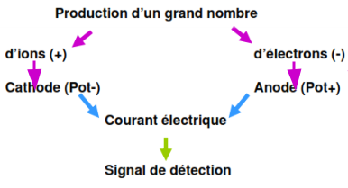
L'étude de l'impulsion en fonction de la tension permet
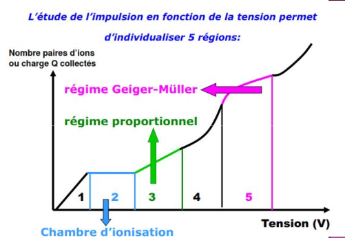
Les 5 régions des détecteurs à gaz
REPONSE PRECOCE AUX RAYONNEMENTS IONISANTS
Les radiations ionisantes ont de nombreuses applications en médecine et en biologie. Nous s'intéressant ici à celles utilisés en thérapeutique ; la plus courante de celle-ci est la destruction cellulaire, relativement sélective, qui est à la base de la radiothérapie. Les radiations ionisant utilisable en radiothérapie ont une énergie généralement comprise entre quelques dizaines de et quelques dizaines de et sont produites par deux mécanismes :
-
La désintégration des atomes radioactifs naturels ou artificiels : électron et surtout les photons gammas,
-
L'accélération artificielle de particules : neutrons, protons, ions lourds et surtout photons et électrons.
Mécanismes d'action des rayonnements ionisant
Les effets biologiques d'une irradiation sur les tissus cellulaires sont l'aboutissement d'une chaine de phénomènes déclenchés par le passage du rayonnement. Les événements initiaux sont des ionisations (éjection d'un électron) ou des excitations (passage d'un électron sur une couche supérieure), provoquées par l'interaction des radiations incidentes sur les atomes des molécules cellulaires. Ces modifications physiques entrainant des perturbations physico-chimiques, puis chimiques pour aboutir enfin à un effet biologique. La séquence de ces phénomènes et représentée sur (cf. figure 1).

FIGURE 1. RESUME DES DIFFERENTS PHENOMENES APRES UNE IRRADIATION
1. Étape physique
Elle correspond aux évènements physiques initiaux (ionisations, excitations) déclenchés par l'interaction des rayonnements incidents avec les atomes des molécules cellulaires. Ces évènements se produisent avec une extrême rapidité (de l'ordre de 10-15 à 10-16 secondes).
Interaction photons-matière : dans la gamme d'énergie
des photons utilisés en radiothérapie, deux effets prédominent largement
(cf. figure 2): l'effet Compton (énergie d'un photon incident transmise
à un électron arraché à une couche périphérique d'un atome et à un
photon dit diffusé) et l'effet photoélectrique (intégralité de
l'énergie du photon incident est transférée à un électron arraché à
une couche interne d'un atome, le réarrangement électronique qui
s'ensuit entraîne l'émission soit d'un photon dit de " fluorescence`,
soit d'un électron Auger).
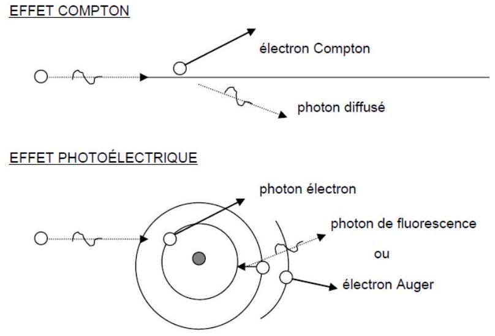
FIGURE 2. PRINCIPALES INTERACTIONS PHOTON-MATIERE
$\Rightarrow$ Interaction électrons-matière : en radiothérapie, il
peut s'agir soit des électrons primaires, produits directement par
les appareils de traitement (accélérateurs linéaires), soit des
électrons secondaires, produits au cours des interactions
photonsmatière (voir paragraphe précédent). Deux types de phénomènes
prédominent : des interactions électron-électron, appelées collisions,
entraînant un transfert d'énergie qui s'épuise progressivement dans la
matière et des interactions électron-noyau dits phénomènes de freinage
[l'électron est freiné lors d'un passage à proximité d'un noyau (chargé
positivement qui l'attire) et l'énergie perdue lors du freinage de
l'électron est à l'origine de la production de photons
$(\mathrm{X})$ dits `de freinage].
1. Étape physico-chimique
Ce sont des collisions entre les électrons secondaires et les molécules du milieu qui sont responsables de ces effets. Une cellule peut être grossièrement assimilée à une solution aqueuse dans laquelle le rayonnement peut soit provoquer des lésions directes des molécules, soit induire des lésions indirectes des molécules par l'intermédiaire des produits de la radiolyse de l'eau cellulaire.
Action direct : les molécules excitées ou ionisées possèdent un excédent d'énergie qui peut être expulsé par rupture d'une liaison covalente et scission de la molécule en deux fragments. Chaque fragment moléculaire emporte un des deux électrons de liaison covalente et devient un radicale libre, qui est noté par un (.) : . La présence dans un radical libre, d'un électron non couplé dit célibataire lui confère une grande réactivité chimique, qui est à la base de l'effet biologique. Les radicaux libres ont tendance à s'assembler entre eux pour produire des nouvelles molécules : . Au total, lorsque toutes les molécules les sont revenues à un état stable, certaines ont été modifiées ; les lésions souvent observées sont des coupures et des pontages.
Action indirect : l'action indirecte des radiations ionisantes sur les molécules cellulaires induite par les produits de la radiolyse de l'eau cellulaire. L'ionisation d'une molécule d'eau produit après une cascade de réactions chimiques à la formation des radicaux libres hautement réactifs, qui sont à l'origine des effets biologiques :
-
Oxydant : OH
-
Réducteur : H' (hydrogène atomique) et (électron aqueux). Ces radicaux libres sont capturés par les molécules du soluté qu'ils modifient par les réactions chimiques qu'ils induisent.
Lésions des acides désoxy-ribonucléiques (ADN)
L'ADN joue un rôle essentiel dans la division cellulaire et de la
synthèse des protéines. Les deux chaines complémentaires de l'ADN sont
constituées par une alternance d'un sucre, le désoxyribose, et d'acide
phosphorique, et sont reliées entre reliées entre elle par des paires de
bases (soit adénine et guanine, soit cytosine et thymine) ; c'est
l'agencement de ces bases qui constitue le code génétique. La molécule
d'ADN peut être lésée directement par les électrons ou plus souvent par
les radicaux libres produits par la radiolyse de l'eau (figure, , il
s'agit de lésions de bases ou des sucres, de pontage, ou surtout de
ruptures de chaines, simple ou double. La cellule possède des enzymes,
telle que l'ADN polymérase, qui permettent sous certains conditions la
réparation des chaines lésées (cf. figure 3).
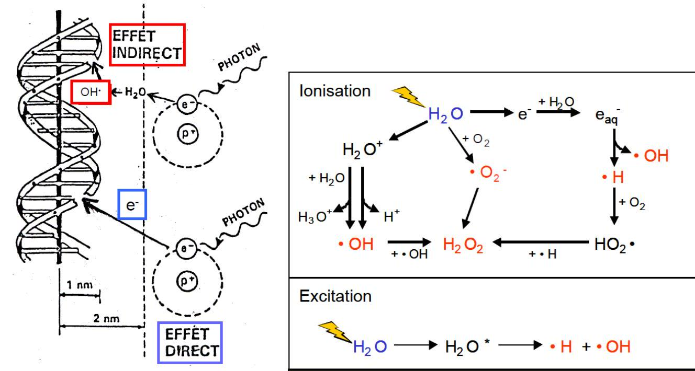
FIGURE 2. L'ADN PEUT ETRE LESE, SOIT DIRECTEMENT, SOIT INDIRECTEMENT PAR L'INTERMEDIAIRE DES PRODUIT DE LA RADIOLYSE DE L'EAU CELLULAIRE
Action sur la cellule
Les lésions cellulaires sont essentiellement celles de l'ADN du noyau cellulaire. Ces lésions sont :
Létales (mortelles) si elles sont irréparables et touchent des fonctions vitales pour la cellule. La mort cellulaire n'est généralement immédiate que pour des irradiations de plusieurs centaines de Gy. Pour des doses de quelques Gy habituelles en radiothérapie, la cellule cesse de se diviser après une ou plusieurs mitoses : c'est la mort différée (reporté dans le temps), qui correspond à la perte de prolifération (ceci explique le délai constamment observé entre l'irradiation et la régression clinique du volume tumoral).
Sub-létales, qui ne sont pas individuellement létales et sont réparables. L'accumulation de ces lésions sub-létales dans la cellule peut tout de même conduire à sa mort. Potentiellement létales, qui peuvent être létales si la division survient rapidement, mais qui peuvent aussi se réparer si les conditions sont favorables.
La réparation cellulaire peut être incomplète ; lésions du matériel génétique non ou mal réparées, appelées mutations, sont d'autant plus préoccupants qu'elles touchent les cellules germinales responsable de la fécondation.
2. Étape tissulaire
Les conséquences d'une irradiation sur un tissu sont différentes selon que la population cellulaire qui le compose est en croissance ou en équilibre.
a. Population tissulaire en croissance
L'exemple-type en est constitué par les tumeurs. Le temps de doublement est celui nécessaire à la multiplication par deux de l'effectif cellulaire. Il varie de plusieurs jours à plusieurs années et dépend notamment du pourcentage de cellule en cours de division. L'évolution d'une population après une irradiation unique est la résultante de la disparition des cellules tuées et la multiplication des cellules survivantes (cf. figure 4).
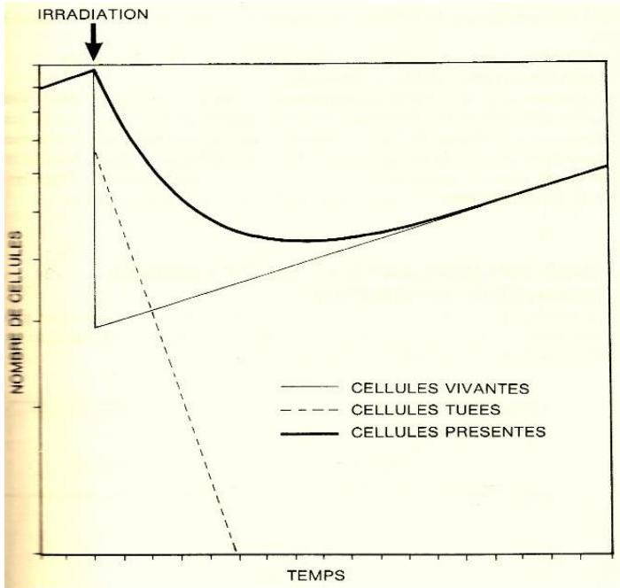
FIGURE 4. L'EVOLUTION D'UNE POPULATION APRES UNE IRRADIATION UNIQUE (TRAIT GRAS) EST LA RESULTANTE DE LA DISPARITION DES CELLULES TUEES (POINTILLE) ET LA MULTIPLICATION DES CELLULES SURVIVANTES (TRAIT MAIGRE).
b. Population cellulaire en équilibre
La majorité des tissus sains appartient à cette catégorie. Le nombre des cellules qui naissent est égal à celui de celles qui meurent. Le temps de renouvellement, qui est celui au bout duquel toutes les cellules ont été renouvelées, est compris entre quelques jours (muqueuse intestinal) et quelques mois ou années (foie, rein). Ces tissus saints sont le plus souvent composés de deux compartiments cellulaires :
Celui des cellules souches, indifférenciées, qui se multiplient en donnant naissance à la fois à de nouvelles cellules souches et aux cellules qui vont se différencier.
Celui des cellules différenciées qui ont perdu la capacité de se diviser.
Dans certains tissus, telle que la moelle osseuse hématopoïétique, on décrit un troisième compartiment, dit intermédiaire, fait de cellules qui se multiplient en achevant leur différenciation. Dans certains tissus, enfin, il n'y a pas de hiérarchie cellulaire aussi stricte : ces tissus sont dits non compartimentaux. L'épiderme, par exemple, est constitué d'une couche basale de cellule souches dont une partie assure le renouvellement du tissu et l'autre se kératine (différenciation), tout en migrant vers la surface (avant de desquamer). On assiste successivement après l'irradiation de ce type de populations à deux compartiments à :
Un dépeuplement en cellules souches (par exemple les cellules de la couche basale de l'épiderme), seules touchées par les radiations ionisantes.
L'élimination progressive par sénescence des cellules différenciées (par exemple la desquamation des cellules kératinisées de l'épiderme), qui n'est qu'incomplètement compensée par la différentiation des cellules souches dont le nombre réduit.
L'accélération de la multiplication des cellules souches résiduelles.
Le repeuplement des cellules différenciées.
Ceci explique que les effets cliniques sont perçus d'autant plus vite que l'élimination des cellules différenciées est plus rapide, c'est-à-dire que la durée de renouvellement du tissu est brève. Le temps de renouvellement de l'épiderme étant de 3 semaines et celui de la muqueuse de l'intestin grêle est de 3 jours, les effets aigus de l'irradiation seront perçus au bout de 2 à 3 jours au niveau de l'intestin et au cours de la troisième semaine pour la peau, quelle que soit la dose.
Facteurs influençant l'effet biologique des radiations
L'action biologique des rayonnements peut être modifiée par plusieurs paramètres dont les propriétés sont mises à profit pour faire apparaitre un effet différentiel entre les tissus sains et malins.
Radiosensilbilité intrinsèque
La proportion de cellules survivantes ou taux de survie cellulaire diminue lorsque la dose augmente. La courbe de survie est la représentation graphique de ces relations dose-effet. Elle représente en cordonnées semi-logarithmiques, une tangent à l'origine dont la pente négative est et une incurvation progressive appelée épaulement (cf. figure 5). L'aspect de la courbe ne peut être expliqué par les seules lésions létales. L'interprétation passe par le fait que la cellule peut être tuée soit par une lésion directement létale, soit par l'accumulation des lésions sublétales. L'incurvation s'explique par la diminution des réparations par saturation des mécanismes enzymatiques lorsque la dose augmente. La diminution de la cambrure de la courbe dans sa partie distale signifie que, lorsque ces mécanismes de restauration sont saturés, presque toutes les nouvelles lésions sont létales. En outre la capacité de restauration cellulaire est donc le facteur prédictif principal de la réponse des populations tissulaires aux radiations ionisantes (radiosensibilité intrinsèque).
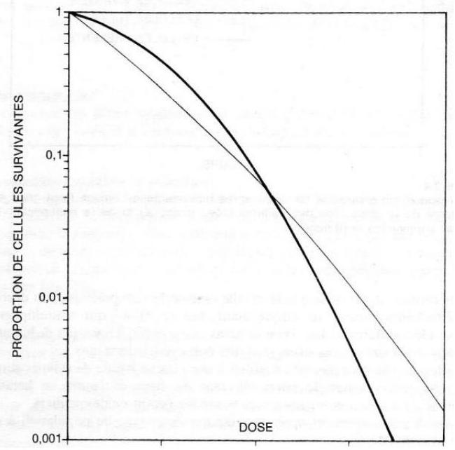
FIGURE 5.COURBE DE SURVIE DES POPULATIONS CELLULAIRES SOUMISES A UNE IRRADIATION :
-
TRAIT MAIGRE : MAJORITE DES TUMEURS ET TISSUS SAINS A REPONSES PRECOCES
-
TRAIT GRAS : TISSUS A REPONSE TARDIVE ET TUMEURS PEU SENSIBLES A L'IRRADIATION.
Schématiquement on distingue :
Des tissus à faible capacité de réparation, donc relativement radiosensibles dans la courbe de survie est caractérisée avec un épaulement étroit (cf. figure 5): la plupart des tumeurs (carcinomes par exemple : un cancer développé à partir d'un tissu épithélial (peau, muqueuse)) et tissus sains à précoce réponses.
Des tissus à forte capacité de réparation, donc relativement radio-résistants, dont la courbe de survie est caractérisé par un épaulement large (cf. figure 5): tissus sains à réponse tardive et des tumeurs peu sensibles à l'irradiation (glioblastome, mélanome malin, etc.).
Facteur temps
Toute irradiation se définit par trois paramètres :
La dose totale exprimée en Gy.
L'étalement, c'est-à-dire le nombre de jours écoulés entre la première et la dernière fraction.
Le fractionnement qui est le nombre de fractions
La dose par fraction qui est égale à la dose totale divisée par le nombre de fractions est essentielle, car c'est d'elle dont dépond, en grande partie, l'effet différentiel que l'on peut obtenir entre tissus sains et malins.
L'étalement et le fractionnement favorisent trois phénomènes biologiques :
La restauration cellulaire, à cause de la réparation des lésions sub-létales et potentiellement létales entre les fractions.
La repopulation, c'est-à-dire la multiplication des cellules survivantes.
La réoxygénation des cellules tumorales hypoxique
L'étalement et le fractionnement protègent donc relativement plus les tissus qui ont une capacité de restauration et de la repopulation élevée. Par exemple, la multiplication des cellules de la peau et des muqueuses semble nettement plus active après l'irradiation que la plupart des cellules carcinomateuses. La restauration et la repopulation des cellules tumorales entre les fractions obligent en contre partie à augmenter la dose totale pour maintenir l'effet turnicidé (cf. figure 7). L'expérience clinique a empiriquement conduit à adopter dans la plupart des cas le fractionnement dit classique, c'est-à-dire 5 semaines de 2 Gy par semaine.
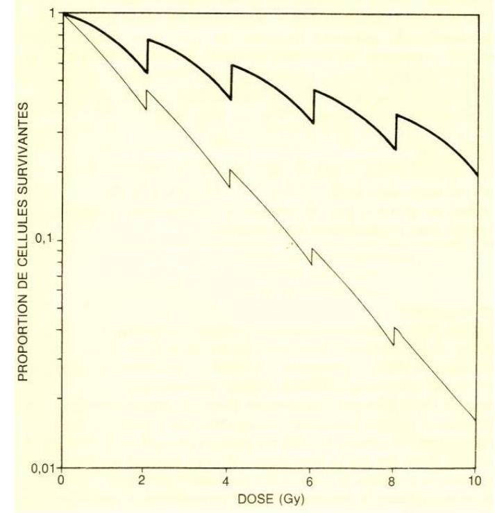
FIGURE 6.SURVIE DE POPULATIONS CELLULAIRES SOUMISES A UNE IRRADIATION FRACTIONNEE (2 GY PAR JOUR) :
-
tRAIT GRAS : CAS D'UNE POPULATION A FORTE CAPACITE DE RESTAURATION ET DE REPOPULATION ;
-
TRAIT MAIGRE : CAS D'UNE POPULATION FAIBLE CAPACITE DE RESTAURATION ET DE REPOPULATION.
Effet oxygène
L'oxygène présent dans les cellules au moment de l'irradiation augmente l'effet de celle-ci en se combinant avec les radicaux libres pour former des molécules hyperoxygénées. La toxicité de ces substances s'ajoute à celle du rayonnement. Par exemple pour les photons ou les électrons la dose nécessaire pour stériliser les cellules en hypoxie est en pratique de 3 fois plus élevée que pour des cellules en normoxie. Les cellules saines sont bien oxygéné (vascularisation régulière). Il ne l'en est pas de même pour le cas d'une tumeur en raison de l'anarchie vasculaire (l'approvisionnement en oxygène est irrégulier). L'oxygénation d'une cellule donnés y est inversement proportionnelle à la distance qui s'épare de son capillaire nourrisseur, on trouve donc de celui-ci d'abord des cellules bien oxygénés, puis des cellules hypoxique, enfin des cellules nécrotiques (lysées). Le pourcentage des cellules hypoxiques varie dans les tumeurs entre $1 %) et (50 %$ selon le type histologique, cette proportion s'accroît avec le volume de la tumoral, mais toute tumeur cliniquement détectable contient en fait des cellules hypoxiques. L'hypoxie constitue ainsi un facteur important de radiorésistance, d'autant que l'irradiation est délivrée en une seule fois. L'étalement de la dose favorise la réoxygénation des cellules hypoxique ; le mécanisme le plus souvent invoque l'immigration des cellules hypoxiques vers les zones bien oxygénées, qui est favorisée par l'élimination des cellules qui s'y trouvaient (cf. figure 8.
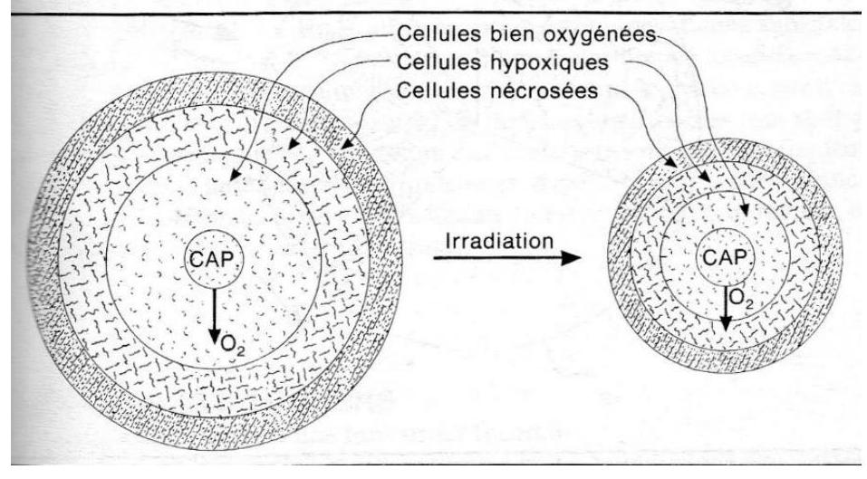
FIGURE 7.CELLULE SONT D'AUTANT MIEUX OXYGENEES QU'ELLES SONT PROCHES DES CAPILLAIRES. L'ETALEMENT DANS LE TEMPS FAVORISE LA REOXYGENATION DES CELLULE HYPOXIQUES QUI SE RAPPROCHENT DES CAPILLAIRES EN RAISON DE L'ELIMINATION DES CELLULES BIEN OXYGENEES, LA PLUS RADIOSENSIBLES.
La qualité du rayonnement
L'effet biologique produit par une irradiation, à dose égale, dépond de la nature du rayonnement. L'efficacité biologique est le rapport des doses nécessaires pour obtenir un effet biologique donné (par exemple la mort de 50% des cellules), avec un rayonnement de référence (photon de haute énergie). L'EBR est principalement liée au (TEL), qui exprime le nombre d'ionisations par unité de longueur du parcours de la particule. On distingue des rayonnements à TEL faible (photons et électrons) et à TEL élevé (neutron et les ions lourds).
Cycle cellulaire
Le cycle cellulaire se décompose en 4 phases : la phase G1, qui suit la mitose et dont la durée est la plus variable, la phase de synthèse pendant laquelle l'ADN est répliqué, puis la phase G2 et enfin la phase ; les cellules qui temporairement ne se divise pas sont dites hors cycle ou G0. La radiosensibilité est maximale durant les phases G2 et et minimale en S. l'irradiation provoque un ralentissement de la synthèse de l'ADN, donc un allongement de la phase , est un blocage temporaire des cellules dans la phase , qui aboutit à un retard à la mitose synchronisation cellulaire (une population cellulaire homogène en transition G1/S).
Débit de dose
En cas d'irradiation continue, la radiosensibilité cellulaire varie en fonction du débit de dose. Dans la plupart des lignées cellulaires, pour de hauts débits (12 Gy ou plus par heure), la radiosensibilité est indépendante du débit. Pour des valeurs inférieures, trois phénomènes biologiques expliquent l'influence du débit :
La restauration cellulaire, dont les effets sont notables pour des débits .
La progression dans le cycle cellulaire peu fréquente au-dessus de
La division cellulaire, dont l'incidence n'est notable que pour des débits aussi bas que Dans le domaine de la curiethérapie à bas débit de dose (en dessous de ), la restauration cellulaire et donc le phénomène prédominant ; lorsque le débit de dose est diminué sans modification de la dose, on observe peu d'effets sur les populations tumorales, mais une réduction parfois significative des effets tardifs sur les tissus sains.
Température
La température à elle seule peut être létale pour la cellule à partir de . L'effet produit par une irradiation est de même augmenté si les tissues irradiés sont exposés à une hyperthermie. La chaleur inhibe la réparation des lésions sublétales. Pour obtenir en hyperthermie un effet donné, sur la population tumorale, la dose d'irradiation doit être réduite, amis que ceci et aussi vrai pour les tissus sains.
Les effets des rayonnements sur les cellules sains et tumorales
Effet sur les tumeurs
La vitesse de croissance d'une tumeur est fonction :
De la durée du cycle cellulaire, en moyenne de 2 à 4 jours, donc peu différente de celle observée dans les tissus sains, mais qui est en fait très variable d'une cellule à l'autre de même tumeur.
Du coefficient de prolifération, c'est-à-dire du pourcentage de cellules tumorales en division, qui varie entre $0,3 %) et (100 %$.
Du coefficient de pertes cellulaires, qui peut atteindre et est du à différenciation cellulaire, à la mort des cellules tumorales pendant la mitose.
Les seules cellules tumorales vraiment préoccupante sont celle qui sont capable de se multipliées indéfiniment.
Effet sur les cellules saines
Il est classique d'opposer :
Les réactions précoces, qui apparaissent dans les jours et semaines suivant l'irradiation, qui sont secondaires à la mort d'un grand nombre de cellules dans les tissus à renouvellement rapide, sont réversibles et s'estompent généralement en quelques semaines avec la repopulation cellulaire à partir des cellules souches résiduelles.
Les réactions tardives, ils apparaissent dans un délai de quelque mois à plusieurs années et qui sont le fait des tissus à renouvellement lent ; leur mécanisme est incomplètement élucidé et fait intervenir un déficit en cellules, secondaire à une reconstitution incomplète des cellules souches, et une perturbation de la vascularisation liée à des lésions de l'endothélium des artérioles ; l'approvisionnement cellulaire et la diminution du flux sanguin aboutissent ainsi à des dystrophies appelées fibroses, atrophies ou rétractions tissulaires.
Les réactions précoces se sont les effets tardifs qui constituent le facteur limitant de la radiothérapie. Les paramètres qui définissent plus les effets des radiations ionisant sont le volume des tissus saints irradiés, la dose totale, l'étalement et le fractionnement. La dose par fraction influence beaucoup plus les réactions tardives que les réactions précoces. Les effets de la radiothérapie enfin, peuvent être franchement accentués par ceux de thérapeutiques combinées, en particulier chimiothérapie te chirurgie.
LA RADIOTHERAPIE EXTERNE
Dans une certaine mesure, on pourrait dire que la radiothérapie est née
avec la découverte quasi concomitante des rayons et de la
radioactivité. Il a néanmoins fallu expérimenter l'effet des
rayonnements sur les tissus (rayonnements émis par les tubes ou curiethérapie par radium, par exemple) pour que la radiothérapie
prenne son essor, par une association entre médecins pionniers et
physiciens, le couple le plus célèbre étant celui formé autour des
années 20 par Marie Curie et Claudius Regaud.
L'essor de la radiothérapie est lié à une double évolution dans les domaines :
Dans le domaine médical, la compréhension approfondie de l'effet des rayonnements sur les tissus, le fractionnement, l'étalement ainsi que bien sur l'accumulation d'expérience clinique dans les traitements (doses curatives pour certaines tumeurs, doses limites pour les organes critiques)
TRPM S3
-
- Cours:
- Exercices:
- Exposé
Radioprotection
- Cours:
- Exercices:
- Corrigé
- Exposé
RADIOPROTECTION
1.1 Principes de radioprotection
La radioprotection repose sur trois principes fondamentaux :
-
Justification: Les avantages doivent dépasser les risques engendrés par l'exposition.
-
Optimisation : L'exposition est à maintenir à un niveau aussi faible que possible, Dans le cadre de cette optimisation on applique le principe
ALARAqui vise à maintenir l'exposition aux rayonnements au niveau le plus faible qu'il soit raisonnablement possible d'atteindre -
Limites de dose : Les limites de dose définies par le législateur ne doivent pas être dépassées.
- Ceci inclut des limites de dose efficace aux organes pour éviter
les effets déterministes - et des limites de dose équivalente au corps pour éviter
les effets stochastiques
- Ceci inclut des limites de dose efficace aux organes pour éviter
1.2 Principe ALARA : As Low As Reasonably Achievable
- Des mesures comme le contrôle de la contamination
- Une diminution de la durée d'exposition
- L'augmentation de la distance
- et l'utilisation de blindage pendant le travail avec des radio-isotopes
sont importantes pour respecter le principe ALARA, qui vise à maintenir les doses de rayonnement reçues par les personnes au niveau le plus faible qu'il soit raisonnablement possible d'atteindre compte tenu des facteurs économiques et sociaux
2 HISTORIQUE
- 1895: 1ère
RADIOGRAPHIE- Temps de pose : 15
- Bertha Roentgen
- 1902: Premiere effets radio induits
- 1928:
CIPRInternational de Protection Contre les Rayonnements


RADIOACTIVITE
2.1. RADIOACTIVITE NATUREL
2.1.1. Quelques valeurs moyennes relatives à la radioactivité naturelle
| Active | mesure |
|---|---|
| Activite moyen de la coute terrestre | |
| Activite des engrais phoshates | |
| Activite des pommes de terres | |
| Activite de l'eau de mer | |
| Activite du lait | |
| Activite du corps humain |

Rayonnement d’origine cosmique
L'exposition augmente avec l’altitude vols en avion
- Rayonnements cosmiques sont:
- noyaux d'hydrogène: protons
- hélium: particules
- noyaux d'atomes plus lourds (fer, nickel)
- les électrons
- Ce rayonnement interagit avec l'atmosphère et crée des particules secondaires (
neutrons,ions,électrons) qui peuvent atteindre la surface de la terre
RADIOACTIVITE ARTIFICIELE
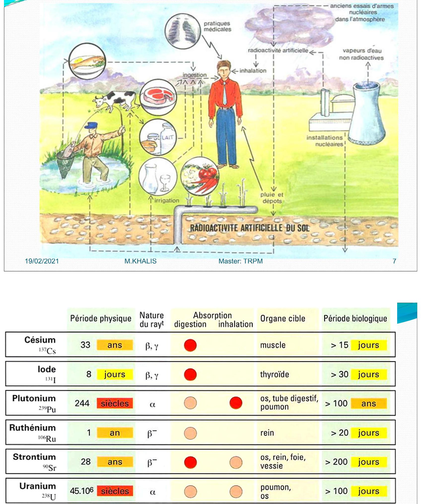
la période biologique ou demi-vie biologique d'un élément chimique est de temps au bout duquel la moitie d'une quantité ingérée ou inhalé telle une drogue ou un r (radioisotope) est éliminée de l'organisme, ou a perdu son activité biologique par des processes purement biologiques (,métabolisé excretion)

Pour les examens radiologiques, les données sont tirees de:
- Radiation Exposure in Computed Tomography, Éditeur H. D. NAGEL. COCIR. 2000 [17]
- Radiation Protection 118.
Referral Guidelines for Imaging.
European Commission, 2000 [18]
Pour les examens scintigraphiques, les activités administrées sont données à titre indicatif.
RADIOPROTECTION
Table des matières
1. Principes de radioprotection
La radioprotection repose sur trois principes fondamentaux :
1.1 Principes de radioprotection
La radioprotection repose sur trois principes fondamentaux :
-
Justification: Les avantages doivent dépasser les risques engendrés par l'exposition.
-
Optimisation : L'exposition est à maintenir à un niveau aussi faible que possible, Dans le cadre de cette optimisation on applique le principe
ALARAqui vise à maintenir l'exposition aux rayonnements au niveau le plus faible qu'il soit raisonnablement possible d'atteindre -
Limites de dose : Les limites de dose définies par le législateur ne doivent pas être dépassées.
- Ceci inclut des limites de dose efficace aux organes pour éviter
les effets déterministes - et des limites de dose équivalente au corps pour éviter
les effets stochastiques
- Ceci inclut des limites de dose efficace aux organes pour éviter
1.2 Principe ALARA : As Low As Reasonably Achievable
- Des mesures comme le contrôle de la contamination
- Une diminution de la durée d'exposition
- L'augmentation de la distance
- et l'utilisation de blindage pendant le travail avec des radio-isotopes
sont importantes pour respecter le principe ALARA, qui vise à maintenir les doses de rayonnement reçues par les personnes au niveau le plus faible qu'il soit raisonnablement possible d'atteindre compte tenu des facteurs économiques et sociaux
2 HISTORIQUE
- 1895: 1ère
RADIOGRAPHIE- Temps de pose : 15
- Bertha Roentgen
- 1902: Premiere effets radio induits
- 1928:
CIPRInternational de Protection Contre les Rayonnements
RADIOACTIVITE
2.1. RADIOACTIVITE NATUREL
2.1.1. Quelques valeurs moyennes relatives à la radioactivité naturelle
| Active | mesure |
|---|---|
| Activite moyen de la coute terrestre | |
| Activite des engrais phoshates | |
| Activite des pommes de terres | |
| Activite de l'eau de mer | |
| Activite du lait | |
| Activite du corps humain |
Rayonnement d’origine cosmique
L'exposition augmente avec l’altitude vols en avion
- Rayonnements cosmiques sont:
- noyaux d'hydrogène: protons
- hélium: particules
- noyaux d'atomes plus lourds (fer, nickel)
- les électrons
- Ce rayonnement interagit avec l'atmosphère et crée des particules secondaires (
neutrons,ions,électrons) qui peuvent atteindre la surface de la terre
RADIOACTIVITE ARTIFICIELE
Pour les examens radiologiques, les données sont tirees de:
- Radiation Exposure in Computed Tomography, Éditeur H. D. NAGEL. COCIR. 2000 [17]
- Radiation Protection 118.
Referral Guidelines for Imaging.
European Commission, 2000 [18]
Pour les examens scintigraphiques, les activités administrées sont données à titre indicatif.
L'ETUDE DE LA RADIOPROTECTION CONSISTE:
- Dans un premier temps:
- Schématiser la séquence des effets des radiations sur la matière vivante
- discuter les paramètres d'influence.
- Différencier les effets déterministes et les effets stochastiques
- Évaluer les effets et les risques d'une irradiation dans une situation donnée.
Effets des radiations
Les effets des radiations sur la matière vivante et les paramètres d'influence
Les effets physique, chimique et biologique
-
transfert d'énergie par ionisation ou par excitation sont instantanés de l'ordre de
10-15 secondes. -
l'activation ou à la modification de réactions chimiques.
Cette étape dure environ 10-6 secondes.
changements biochimiques:
Modifications sur les structures et sur les fonctions vitales qui s'étendent sur une période allant de la seconde à plusieurs années.
Dans certain cas, ces modifications peuvent être corrigées par des mécanismes moléculaires ou Cellulaires, pour récupération des fonctions normales.
L'effet des radiations peut aller: de la réparation d'une cellule Jusqu'à sa mort
A- Effets sur l'organisme
En fonction de la dose délivrée, les effets des radiations sur l'organisme peuvent être:
- effets déterministes: réactions tissulaires
- effets stochastiques: aléatoires
Effets déterministes:
On parle la dose absorbée (en ), Lorsque la dose absorbée est supérieure à ,
- On observe une réduction transitoire
- voire permanente
- des cellules assurant le fonctionnement de l'organe.
Quelques exemples sont donnés dans le Tableau suivant.
La sévérité des réactions tissulaires augmente avec la dose
Effets stochastiques
-
Les effets stochastiques (ou aléatoires) sont associes à une probabilité de manifestations de conséquences suite à l'irradiation.
-
La quantification du risque des effets stochastiques n'est pas possible au niveau
individuel, mais uniquement au niveau d'une population:
toutes les estimations de risque sur les impacts sanitaires des radiations ionisantes sont basées sur des études épidémiologiques.
Les effets stochastiques ont une manifestation tardive:
Ils peuvent apparaître plusieurs années ou décennies après l'irradiation des cellules somatiques
et même plusieurs générations plus tard en cas de mutations dans les cellules germinales.
La relation entre la dose et l'effet n'est moins bien établie que pour les fortes doses engendrant des réactions tissulaires.
Tous les effets stochastiques sont la conséquence de mutations. La sévérité de ces effets ne dépend pas de la dose reçue, mais uniquement du type de cellule et du gène muté.
2.1.
Types d'effets stochastiques
-
cancers chez l'individu irradié, si la mutation est induite dans certains gènes des
cellules somatiques. -
maladies génétiques dans la descendance, si la mutation est induite dans les
cellules germinales -
maladies cardiovasculaire.
L'estimation du risque sanitaire dû exclusivement aux radiations ionisantes, est difficile, car il est impossible d'isoler les symptômes provoqués par une irradiation de ceux induits par d'autres sources.
L'estimation du risque se base donc sur l'étude de l'augmentation de cancers et maladies dans des populations irradiées, comme celles de Hiroshima, Nagasaki et de Tchernobyl.
Autres effets somatiques
Mis-à-part le cancer, les rayonnements ionisants peuvent provoquer d'autres maladies:
- maladies cardiaques
- des attaques cérébrales,
- des affections digestives,
- respiratoires et
hématopoiétiqueset surtout la cataracte.
Exposition prénatale
Pendant l'embryogenèse la plupart des cellules sont en phase de réplication et de différenciation.
Elles ont donc une radiosensibilité élevée .
Des précautions particulières doivent être prises pendant le période prénatale afin de réduire l'irradiation in utero.
Les effets embryologiques dépendent du stade de développement:
-
Avant la nidation 0-10 jours: l'œuf est soit éliminé soit il se développe normalement
loi du tout ou rien. -
Pendant l'embryogenèse 10 jours à 9 semaines: le risque est maximal en raison de l'intense organogenèse.
Le seuil d'apparition des réactions tissulaires est estimé à $100 ~Gy}$.
- Dès 3 semaines après la conception et jusqu'à la naissance: l'exposition aux radiations augmente le taux de cancers chez l'enfant.
Le risque est supérieur à celui de la population en général, mais similaire à celui qui existe après une exposition pendant la petite enfance (facteur 2 à 3 ).
- Pendant la phase fotale le risque de migration neuronale anormal persiste et peut aboutir à un retard mental.
Le seuil d'apparitions des réactions tissulaires après la roème semaine est estimé a 300 mGy.
dosimètre biologique
-
La dosimètre biologique est l'application à l'échelle moléculaire et cellulaire des connaissances des effets biologiques.
-
Elle permet, en absence d'information de dosimètre physique, d'estimer la dose reçue.
-
La dosimètre biologique est essentielle en cas d'accident et d'exposition à de faibles doses
Risque radiologique
Notion de détriment
-
Pour les besoins de la radioprotection, la
CIPRa introduit la notion dedétrimentpour identifier et quantifier (lorsque cela est possible) les mauvais effets des radiations. -
la notion de détriment est limitée au préjudice sur la santé, excluant ainsi les autres formes de préjudice (social, économique, environnemental, etc).
-
Le détriment est conçu comme une combinaison de la probabilité d'incidence de tous les effets nuisibles des radiations et de la gravité de ces effets.
En considération des niveaux de dose mis en cause en radioprotection
-
Seuls les effets stochastiques sont pris en compte.
-
Ceci comprend notamment:
- la probabilité d'un cancer mortel attribuable aux rayonnements
la probabilité pondérée d'un cancer non mortel attribuable aux rayonnements - la probabilité pondérée d'effets héréditaires grave et la durée de vie perdue, si le préjudice a lieu
- la probabilité d'un cancer mortel attribuable aux rayonnements
Notion de dose effective ou efficace
Pour évaluer l'importance de l'impact biologique d'une exposition aux rayonnements ionisants et comparer les expositions entre elles, la radioprotection utilise la dose efficace :
La dose efficace: c'est une grandeur calculée, exprimée en millisieverts $mv}$
Elle prend en compte non seulement la quantité d'énergie absorbée par le corps, mesurée en grays (cède), mais aussi la nature des rayonnements émis et la sensibilité biologique aux rayonnements des tissus et organes exposés.
Dose équivalente : dose absorbée par le tissu ou l'organe , pondérée suivant le type et la qualité du rayonnement R.
Elle est donnée par la formule :
Où :
-
est la moyenne pour l'organe ou le tissu de la dose absorbée du rayonnement
-
est le facteur de pondération radiologique.
Valeurs du facteur de pondération radiologique
| Type de rayonnement | Energie | |
|---|---|---|
| Photons | toutes énergies | 1 |
| Electrons, muons | toutes énergies | 1 |
| Neutrons | 5 | |
| 10 | ||
| 20 | ||
| 10 | ||
| 5 | ||
| Protons | 5 | |
| Particules* | 20 |
Particules: alpha, fragments de fission, noyaux lourds
Lorsque le champ de rayonnement comprend des rayonnements de types et d'énergies correspondant à des valeurs différentes de , la dose équivalente totale est donnée par la formule :
L'unité de dose équivalente est le sievert Sv.
Dose efficace E: somme des doses équivalentes pondérées délivrées aux différents tissus et organes du corps mentionnés à l'annexe II par l'irradiation interne et externe.
Elle est définie par la formule:
Où :
-
est la moyenne pour l'organe ou le tissu de la dose absorbée du rayonnement ;
-
est le facteur de pondération radiologique
-
est le facteur de pondération tissulaire valable pour le tissu ou l'organe .
Valeurs du facteur de pondération tissulaires
| Tissu ou organe | |
|---|---|
| Gonades | |
| Moelle rouge | |
| Colon | |
| Poumons | |
| Estomac | |
| Vessie | |
| Seins | |
| Foie | |
| Esophage | |
| Thyroïde | |
| Peau | |
| Surface des os | |
| Autres |
L'unité de dose efficace est le Sievert Sv.
Sievert Sv: nom de l'unité de dose équivalente ou de dose efficace.
Un Sievert équivaut à un joule par kilogramme,
Pour les photons et électrons de toutes énergies :
Limites de dose:
- valeurs maximales fixées dans un règlement pour les doses résultant de l'exposition des personnes professionnellement exposées
- des apprenti(e)s et des étudiant(e)s
- ainsi que des autres personnes du public, aux rayonnements ionisants visés par le présent règlement
- et qui s'appliquent à la somme des doses concernées résultant de sources externes de rayonnement pendant la période spécifiée
- et des doses engagées sur cinquante années (jusqu'à l'âge de 70 ans pour les enfants) par suite des incorporations pendant la même période
| catégorie de personne | Limite dose efficace |
|---|---|
| Personne professionnellement exposée | |
| Apprentis ou étudiants de 16 à 18 ans | |
| Public | |
| Femmes enceintes | - maximum durant la grossesse |
| - interdiction de manipuler des sources non scellées |
En ce qui concerne les organes ou tissus pris individuellement, les limites sont les suivantes: |:-------------------------------------------------|:-----------------| | Peau | | | Main, avant-bras, pieds, chevilles | | | Cristallin | | | Gonades | | | Moelle rouge, colon, poumons, estomac | | | Vessie, seins, foie, oesophage, thyroïde, autres | 4 |
Contrainte dedose:
Restriction imposée aux doses éventuelles qu'une source peut délivrer aux individus et utilisée à des fins d'optimisation, dans la phase de planification de la protection contre les rayonnements ionisants.
Pour les professionnels de la radioprotection, il est nécessaire de donner certaines définitions:
Source scellée :
Source constituée par des substances radioactives solidement incorporées dans des matières solides et effectivement inactives présentant une résistance suffisante pour éviter, dans des conditions normales d'emploi, toute dispersion de substances radioactives.
Source orpheline :
Une source scellée dont le niveau d'activité au moment de sa découverte est supérieur au niveau d'exemption et qui n'est pas sous contrôle réglementaire.
- soit parce qu'elle n'a jamais fait l'objet d'un tel contrôle.
- soit parce qu'elle a été abandonnée, perdue, égarée, volée ou transférée à un nouveau détenteur sans modification en bonne et due forme à l'autorité compétente ou sans que le destinataire en ait été informé.
Source scellée de haute activité, en abrégé SSHA : source scellée contenant un radionucléide dont l'activité au moment de la fabrication ou, si ce moment n'est pas connu, au moment de la première mise sur le marché ou au moment de l'acquisition par le détenteur est égale ou supérieure au niveau d'activité visé à l'annexe VI.
Conteneur de source : enceinte de confinement d'une source scellée de haute activité ne faisant pas partie intégrante de la source, mais destinée à permettre le transport, la manutention, le stockage etc.
Déchets radioactifs : toutes substances radioactives provenant d'une pratique autorisée ou d'une activité professionnelle, traitée en tout ou en partie, comme une pratique non exemptée en vertu de l'article 9.3, et pour laquelle aucun usage ultérieur n'est prévu au sein de l'établissement.
Elimination de déchets radioactifs : rejet de déchets radioactifs directement dans l'environnement ( compris sous forme d'incinération), avec dispersion ultérieure et absence d'intention de récupération, ou stockage de déchets radioactifs dans un dépôt définitif, y compris sous forme de mise en décharge, sans intention de récupération.
Intervention : activité humaine destinée à prévenir ou à réduire l'exposition des individus aux rayonnements ionisants à partir de sources qui ne font pas partie d'une pratique ou ne sont pas maîtrisées, en agissant sur les sources de rayonnement ionisant, les voies d'exposition et les individus eux-mêmes.
Personnes professionnellement exposées : personnes, travaillant à leur compte ou pour un employeur, soumises pendant leur travail à une exposition provenant de pratiques visées dans le présent règlement et susceptible d'entraîner des doses supérieures à l'une quelconque des limites de dose fixées pour les personnes du public, ou soumises pendant leur travail à une exposition provenant d'activités professionnelles autorisées en application des dispositions du présent règlement.
Personnes professionnellement exposées de catégorie A : les personnes professionnellement exposées qui sont susceptibles de recevoir une dose efficace supérieure à 6 millisievert par 12 mois consécutifs glissants ou une dose équivalente supérieure aux trois dixièmes des limites de dose fixées à l'article pour le cristallin, la peau et les extrémités.
Personnes professionnellement exposées de catégorie B : les personnes professionnellement exposées qui ne relèvent pas de la catégorie
Personnes du public : individus de la population, à l'exception des personnes professionnellement exposées, des apprenti(e)s et des étudiant(e)s pendant leurs heures de travail.
Population dans son ensemble: toute la population comprenant les personnes professionnellement exposées, les apprenti(e)s, les étudiant(e)s et les personnes du public.
Enfantà naître : être humain, depuis la conception jusqu'à la naissance Zone contrôlée : zone soumise à une réglementation spéciale pour des raisons de protection contre les rayonnements ionisants et de confinement de la contamination radioactive, et dont l'accès est réglementé; dans les établissements autorisés en vertu des dispositions du présent règlement, toute zone dans laquelle les trois dixièmes des limites de dose annuelle fixées pour les personnes professionnellement exposées sont susceptibles d'être dépassés doit constituer une zone contrôlée
Zone surveillée : zone faisant l'objet d'une surveillance appropriée à des fins de protection contre les rayonnements ionisants; dans les établissements autorisés en vertu des dispositions du présent règlement, toute zone dans laquelle un individu pourrait être soumis à une exposition susceptible d'entraîner des doses supérieures à l'une quelconque des limites de dose fixées pour les personnes du public et qui n'est pas considérée comme une zone contrôlée doit constituer une zone surveillée ou y être incluse.
Démantèlement : ensemble des opérations administratives et techniques et des travaux nécessaires ou conduisant à la cessation de l'exploitation d'une installation et à sa mise dans un état sûr pour les travailleurs, la population et l'environnement
Exploitant : toute personne physique ou morale qui assume la responsabilité de l'établissement ou de l'activité professionnelle devant faire l'objet d'une autorisation ou d'une déclaration au sens du chapitre II
Entreprise extérieure : toute personne physique ou morale, appelée à exécuter une opération de quelque nature que ce soit en zone contrôlée d'un établissement, à l'exception de l'exploitant de cet établissement et des membres de son personnel.
Travailleur extérieur : toute personne professionnellement exposée qui exécute une opération de quelque nature que ce soit en zone contrôlée, qu'elle soit employée à titre temporaire ou permanent par une entreprise extérieure, y compris les stagiaires, apprenti(e)s et étudiant(e)s ou qu'elle preste ses services en qualité de travailleur indépendant, y compris les médecins indépendants dans les hôpitaux; les travailleurs extérieurs doivent être considérés comme des travailleurs professionnellement exposés de catégorie A Protection efficace : dispositif de protection contre les rayonnements ionisants tel que la dose délivrée à toute personne soit aussi faible que raisonnablement possible et en tout cas n'excède pas les limites de dose fixées au chapitre III.
Service de dosimètre agréé : organisme responsable de l'étalonnage, de la lecture ou de l'interprétation des appareils de contrôle individuels, ou de la mesure de la radioactivité dans le corps humain ou dans des échantillons biologiques, ou de la détermination des doses, et dont la qualification pour cette tâche est reconnue par l'Agence.
Service agréé de médecine du travail : section ou département chargé de la surveillance médicale du service pour la prévention et la protection au travail de l'entreprise en question, visée aux arrêtés royaux du 27 mars 1998 relatifs aux services internes et externes pour la prévention et la protection au travail.
**Médecin agréé **: le conseiller en prévention -médecin du travail de la section ou du département chargé de la surveillance médicale du service pour la prévention et la protection au travail de l'entreprise en question, responsable du contrôle médical des personnes professionnellement exposées et agréé selon la procédure décrite à l'article75.
Expert qualifié en contrôle physique : personne ayant les connaissances et l'entraînement nécessaires, notamment pour effectuer des examens physiques, techniques ou radiochimiques permettant d'évaluer les doses et pour donner des conseils afin d'assurer une protection efficace des individus et un fonctionnement correct des moyens de protection, conformément aux dispositions de la loi
8) BASES DE LA RADIOPROTECTION [bases-de-la-radioprotection]
Le but de la radioprotection est d'empêcher ou réduire ces risques, lies aux rayonnements, afin d'éviter ou réduire la radioprotection s'appuie sur trois grands principes
-
la justification des activités comportant un risque d'exposition à des rayonnements ionisants ;
-
l'optimisation des expositions à ces rayonnements au niveau le plus faible possible ;
-
la limitation des doses d'exposition individuelle à ces rayonnements.
Ces trois principes fondamentaux découlent du principe général de précaution: le principe
ALARA: As Low As Reasonably Achievable» ou bas que raisonnablement possible
Principe de justification
Justification toute activité faisant intervenir un risque radiologique doit être justifiée c'est-à-dire le bénéfice positif Penser à des procédures alternatives qui doivent être analysées et retenues le cas échéant.
L'examen demandé peut-il être remplacé par un examen non irradiant?
- Performances égales ?
- Disponibilité ?
- Coût ?
- Risques et inconvénients respectifs?
IRM et ECHOGRAPHIE
-
L'expression d'une question clinique
- Clairement formulée
- Dont la réponse contribue à la décision médicale
-
Un examen dont on connaît le coût/efficacité
- Les performances
- La pénibilité
- Les risques
- Le coût financier
fin
Principe d'optimisation
La mise en évidence des effets stochastiques des radiations et l'hypothèse d'une absence de seuil pour de tels effets conduisent naturellement à l'exigence de l'optimisation.
Il s'agit ainsi de maintenir les doses aussi faibles que cela est raisonnablement possible (principe ALARA : As low As Reasonably Achievable).
Principe de limitation des doses
L'application des principes de justification et d'optimisation, est conduire à ce qu'un petit nombre d'individus reçoivent des doses trop élevées.
Pour cette raison, On doit définir :la limitation des doses.
Les principes de la radioprotection sont adaptés à trois catégories de population :On distingue
-
Les professionnels:
-
Directement Affectées à des Travaux utilisant des Rayonnements ionisants (DATR) ou catégorie A. (par exemple les manipulateurs d'électroradiologie ou de médecine nucléaire).
-
Non Directement Affectées à des Travaux utilisant des Rayonnements ionisants (NDATR) ou catégorie B (par exemple les secrétaires médicales d'un service d'électroradiologie ou de médecine nucléaire).
-
-
Les Patients: Le patient et les proches du patient en tant qu'aides dans les soins ainsi que les personnes exposées dans le cadre d'études biomédicales
-
Le public: Rayonnements et environnement de santé, L'autorité de sûreté nucléaire doit contrôler la bonne application du système de radioprotection
Principes de base de radioprotection
Les principes élémentaires à mettre en place pour assurer une bonne protection face aux radiations ionisantes peuvent être résumés ainsi :
- soin, ordre
- temps
- distance
- et blindage
Temps d'exposition
Le temps pendant lequel une personne est exposée à une source radioactive doit être réduit au minimum nécessaire.
Pour ce faire, quelques règles simples peuvent être appliquées :
- avoir une bonne connaissance du mode opératoire
- ne sortir une source de son blindage que le temps nécessaire
- ne pass séjourner inutilement près d'une source de rayonnements ionisants
Dans certains cas particuliers, il convient d"effectuer une rotation du personnel afin d'éviter un dépassement des limites de doses.
Protection par la distance
Les rayonnements issus d'une source radioactive sont a priori émis dans toutes les directions.
Tous les endroits irradiés de la même manière se situent à la surface une sphère dont le centre est une source ponctuelle.
Par conséquent, la dose va suivre la loi de l'inverse du carré de la distance selon A titre d'exemple, le simple fait de prendre une source à l'aide d'une pince la distance passant de 1 à , la dose diminue d'un facteur 100 au niveau des mains.
Protection par interposition de blindage
L'interposition de blindage entre la source et le personnel permet également une limitation des doses reçues.
En fonction des différents types de rayonnements et de leur énergie, il conviendra d'adapter le blindage mis en place.
De manière générale, on peut dire que à d'air suffisent pour arrêter les rayonnements .
Les rayonnements sont quant à eux relativement faciles à arrêter.
Les rayonnements émis par le phosphore 32 seront complètement arrêtés par d'eau.
Les rayonnements et sont généralement très pénétrants; ils nécessitent donc des épaisseurs de blindage plus élevées.
Leurs énergies étant très variables (de quelques keV à plusieurs MeV), il est impossible d'établir une règle générale du type autant de cm de plomb suffisent.
Il faudra étudier le blindage de ces sources au cas par cas

Particularité des sources pures
il est conseillé de réaliser les blindages à l'aide de matériau dont le numéro atomique est faible. Car, un matériau dont le numéro atomique est lourd, tel que le plomb.
Un rayonnement de freinage (appelé Bremsstralhung)
principe physique utilisé dans les appareils de radiologie pour produire les rayons .
Par exemple, dans le cas du , le blindage sera généralement constitué de plaques de plexiglas d'un cm d'épaisseur.
 transparent: il est plus simple de travailler derrière ce type d'écran.
transparent: il est plus simple de travailler derrière ce type d'écran.
Selon G. Sitzlack il est possible de calculer le rayonnement de freinage produit à l'aide de la relation empirique suivante : dans laquelle:
- : débit de dose en ;
- : numéro atomique du matériau absorbant les électrons;
- : activité en ;
- : distance à la source en ;
- : en .
Attention, cette formule n'est valable que si tout le rayonnement est absorbé !
Modes d'expositions
Exposition externe
- On est à coté d'une source de rayonnement.
- Elle est due essentiellement au rayonnement gamma.
- L'exposition externe due au rayonnement alpha peut être négligé.
Exposition interne
Par inhalation de l'air contaminé ou ingèrer des aliments, contaminés,contamination interne de son organisme.
L'exposition interne concerne tous les types de rayonnements car il n'y a plus d'écran pour arrêter les alpha et les bêta.
Si la source est en contact direct avec la peau, on parle de contamination qui engendre une exposition externe et qui peut également engendrer une exposition interne si la substance radioactive pénètre dans le corps (par une blessure, une coupure ou les pores de la peau).
Comment éviter les risques dans les laboratoires
Les sources utilisées dans les laboratoires sont de 2 types :
- Les sources scellées (c'est-à-dire sources dont la structure empêche, en utilisation normale, toute dispersion de substances radioactives dans le milieu ambiant) servant essentiellement à la calibration d'appareils de mesure.
Avec ce type de sources, seule l'irradiation est à craindre. Les mesures de protection seront essentiellement axées sur le blindage lorsque la source n'est pas utilisée.
- Les sources non scellées : dans ce cas, à l'irradiation, viendra s'ajouter le risque de contamination interne et/ou externe.
Le schéma présenté ici permet de situer les différents points sur lesquels il y a moyen d'intervenir afin de diminuer le risque de contamination interne. 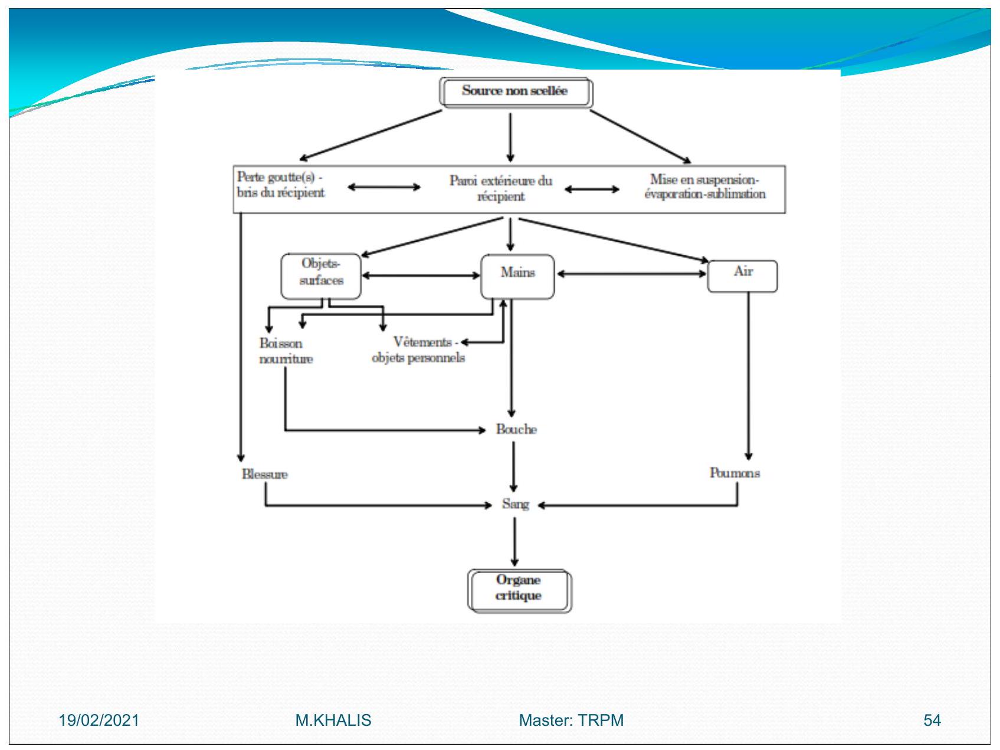
Ce qu'il faut faire ...
Afin de diminuer les risques le plus possible, voici quelques règles très simples à mettre en place :
- porter une blouse de laboratoire
- Porter des gants à usage unique
- Protéger le plan de travail (par ex: avec du papier type benchkote)
- Étiqueter chaque objet contaminé
- Effectuer régulièrement des mesures de contaminations
- Récupérer les déchets radioactifs dans les récipients ad hoc
- Porter son dosimètre et le remettre régulièrement pour lecture
Ce qu'il ne faut pas faire ...
- pipeter à la bouche
- boire, fumer, manger dans les laboratoires
- introduire des objets personnels
- mélanger activités de bureau et activités de laboratoire
- mélanger du matériel radioactif et non radioactif
- toucher des objets non contaminés avec des gants contaminés (téléphone, ...)
La dosimétrie est un aspect essentiel de la radioprotection
1er partie: Aspects théorique
- dosimétrie, c'est-à-dire la mesure de l'exposition aux radiations ionisantes, fait partie des outils le la radioprotection, Elle a pour objet de mesurer au mieux les rayonnements en un lieu ou sur une personne (on parle alors de dosimétrie individuelle), pour fournir une estimation de l'équivalent de lose et de dose efficace.
- grande variété des situations et des rayonnements a conduit à une grande diversité de ces létecteurs qui doivent en outre s'adapter régulièrement aux changements des limites réglementaires (c'est parfois même leurs améliorations qui permettent de définir de nouvelles imites)
- dosimétrie individuelle permet une surveillance radiologique (vérification que les doses reçues ont dans les limites réglementaires), mais elle doit aussi apporter le maximum d'informations en :as d'irradiations accidentelles et si possible servir d'alarme dans ces situations.
Enfin les dosimètres doivent pouvoir fonctionner dans des environnements très variés (température, humidité, orientation, etc.), ce qui affecte en général leur précision.
Dosimétrie
Badge poitrine
Toute personne professionnellement exposée doit porter un dosimètre à hauteur de poitrine sauf pour une exposition exclusive à des émetteurs dont l'énergie est inférieure à .

En pratique, toute personne ne manipulant que du , du ou du ne doit pas porter de dosimètre.
Dans ces cas, il convient de mettre en place un système de monitoring adéquat (par exemple, contrôle des urines, ...)
Dosimètre supplémentaire
Si une irradiation non négligeable des tissus ou d'un organe est à craindre, la personne portera un ou plusieurs dosimètres supplémentaires permettant de mesurer la dose à ces endroits.
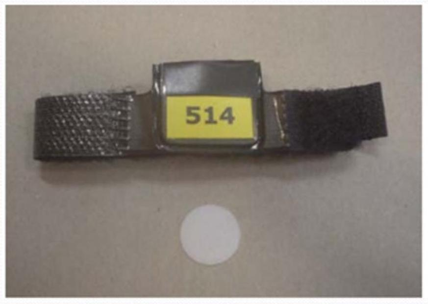
Dans le cas où l'irradiation est susceptible de provoquer une dose supérieure aux des limites pour le cristallin, les mains, les avant-bras, les pieds ou les chevilles, ces dosimètres supplémentaires seront toujours portés.
exemples
le personnel de radiologie devant maintenir le patient pendant la prise du cliché (et plus particulièrement les enfants et les nourrissons), toute personne travaillant en radiologie interventionnelle, lors de l'injection de substances radioactives aux patients, toutes ces personnes porteront un dosimetre(bague ou bracelet).
Dosimétrie opérationnelle
Toute personne susceptible de recevoir une dose supérieure à par semaine portera à hauteur de la poitrine un dosimètre à lecture directe
Dans les situations où le port d'un tablier plombé est indiqué, il y a lieu de porter 2 dosimètres, l'un au-dessus, l'autre en-dessous du tablier plombé.
Tout visiteur, travailleur extérieur, stagiaire, étudiant et personnel intérimaire doit porter le mêmes moyens de protection que les travailleurs régulièrement occupes dans la zone et parconséquent du même type de dosimètre que celui utilisẻ par le personnel régulier.
La thermoluminescence
la thermoluminescence:capacité d'un matériau d'émettre de la lumière lorsqu'il est chauffé, la quantité de lumière émise étant proportionnelle à la quantité de rayonnements ionisants reçus par ce matériau.
Les matériaux thermoluminescents sont essentiellement des cristaux isolants dans lesquels on a introduit des impuretés chimiques (ou activateurs) en quantités soigneusement contrôlées.
Lorsque ces matériaux sont irradiés par des rayonnements ionisants, une fraction minime de l'énergie du rayonnement absorbé est emmagasinée dans des états d'énergie métastables.
En dosimétrie par thermoluminescence, l'énergie absorbée et emmagasinée dans le matériau détecteur est libérée par échauffement, ce qui se traduit par une émission de lumière, dont l'intensité est liée à la dose de rayonnement.
L'information dosimétrique étant perdue au cours de la lecture, les détecteurs thermoluminescents ne peuvent habituellement être lus qu'une fois. Cependant, ils sont réutilisables.
Divers matériaux détecteurs sont actuellement disponibles dont le fluorure de lithium , le borat de lithium , le fluorure de calcium , le sulfate de calcium Leur réponse à différents types de rayonnements ionisants dépend de divers paramètres, tels qu leur composition isotopique, l'épaisseur du détecteur,...
Modèle de niveaux d'énergie
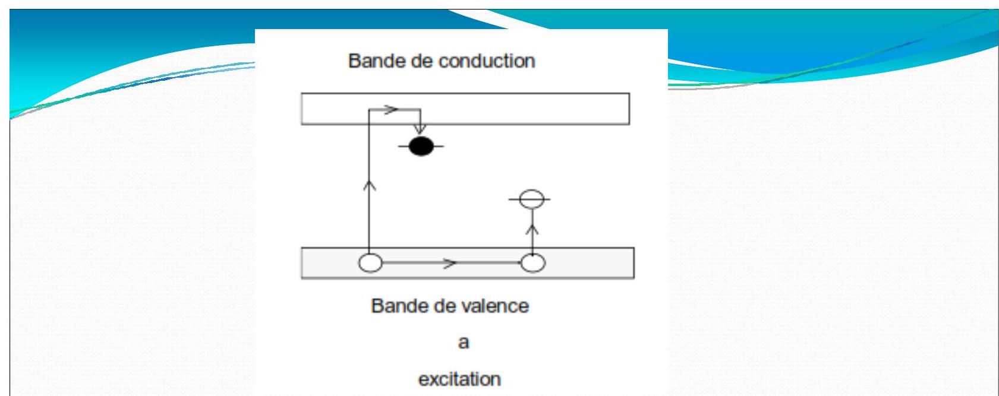 Ce schéma représente les bandes de valence et de conduction, ainsi que les niveaux d'énergie associés aux pièges à électrons et à trous introduits dans le cristal par les activateurs, c'est-à-dire les impuretés chimiques et les défauts réticulaires.
Si le cristal est irradié, l'énergie est transmise aux électrons de la bande de valence et les fait passer dans la bande de conduction, en laissant des trous dans la bande de valence (figure a).
Certains de ces électrons et trous se recombinent immédiatement, d'autres sont piégés dans les états métastables où ils peuvent subsister pendant très longtemps.
L'échauffement du cristal libère les électrons et les trous de leurs pièges et les amène à se recombiner, soit rapidement (figure b), soit après avoir erré à travers le cristal dans la bande de conduction (figure c) ou dans la bande de valence (figure d).
Dans tous les cas, il y a émission de lumière.
Dans la plupart des matériaux utilisés, il existe un certain nombre de pièges situés à des niveaux d'énergie différents, si bien que la courbe de thermoluminescence présente habituellement plusieurs pics.
La répartition des niveaux d'énergie des pièges, et donc le tracé de la courbe de thermoluminescence, dépend de plusieurs paramètres, dont le plus important est le passé thermique du matériau thermoluminescent considéré.
Bande de conduction 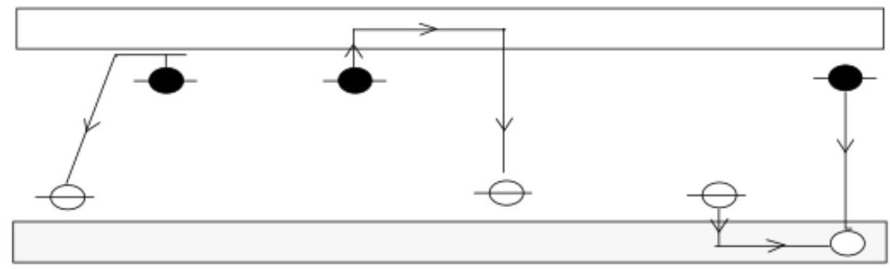 Bande de valenceb Crecombinaison
courbe de thermoluminescence.
Dans la plupart des matériaux utilisés, il existe un certain nombre de pièges situés à des niveaux d'énergie différents, si bien que la courbe de thermoluminescence présente habituellement plusieurs pics.
La répartition des niveaux d'énergie des pièges, et donc le tracé de la courbe de thermoluminescence, dépend de plusieurs paramètres, dont le plus important est le passé thermique du matériau thermoluminescent considéré.

Courbe de thermoluminescence du
La répartition spectrale de l'émission de thermoluminescence varie d'un matériau à l'autre et entre les divers pics de la même courbe de thermoluminescence.
Dans le cas du dosimètre (LiF:Mg, Ti) la luminescence principale se situe à pour un maximum du spectre d'émission situé à .
La réponse de la plupart des matériaux thermoluminescentsen fonction de la dose absorbée est linéaire sur une large gamme de dose.
Dans le cas du LiF, la réponse est linéaire jusqu'à une dose gamma d'au moins (500 rad).
Leurs pièges respectifs est une fonction de la température.
Lorsque les pièges sont peu profonds, cette probabilité n'est pas négligeable à température ambiante.
Par conséquent, une partie de l'information peut être perdue au cours de la période de stockage du dosimètre entre l'irradiation et la lecture.
C'est ce qu'on appelle le fading.
Un traitement thermique adéquat lors de la lecture permet de minimiser ce phenomene.
partie : Aspects pratiques
- Gestion: demande?
- la réception?
- la lecture etc..
Quelques recommandations .....
- Portez votre dosimètre
- Remettez-le régulièrement afin que nous puissions le lire et vous transmettre les résultats
- Chaque dosimètre est nominatif, portez celui qui vous est attribué
- Ce dosimètre est réutilisable, NE LE JETEZ PAS APRES USAGE !
- La fenêtre noire est fragile, ne la percez pas.
- Ce dosimètre est sensible aux U.V. : ne l'exposez pas au soleil, ....
- N'essayez pas de l'ouvrir, vous le casseriez !
- Lorsque vous passez un examen isotopique ou radiologique en tant que patient, ne portez pas votre dosimètre
- Pour tout problème concernant votre dosimètre, n'hésitez pas, contactez le Service de Contrôle Physique.
Protection lors de l'utilisation des installations mettant en oeuvre des ravons
Les conditions d'utilisation les plus courantes sont de l'ordre de et .
Dans ces conditions, le pouvoir pénétrant du rayonnement est faible, mais par contre le débit de dose est énorme. De plus, le faisceau étant tellement étroit, le dosimètre a peu de chances d'être dans la trajectoire du faisceau lors d'un incident.
L'accent devra donc être mis sur la sécurité intrinsèque de l'appareil pour prévenir tout incident. 2 types d'installations
Appareils autoblindés
L'appareil autoblindés est se trouvant dans une enceinte blindée.
Les installations récentes sont complètement enfermées dans des enceintes blindées et ne posent pas de problèmes majeurs.
Néanmoins, une installation de ce type doit répondre aux obligations suivantes :
-
un signal lumineux doit s'allumer lorsque la haute tension est appliquée (si ce signal est défectueux, la haute tension ne devrait pas pouvoir être appliquée);
-
les sécurités placées sur les portes d'accès à la chambre d'irradiation doivent être opérationnelles.
Toute ouverture d'une porte d'accès doit couper automatiquement l'alimentation électrique et par conséquent le faisceau.
- le sigle
radioactifdoit être apposé sur l'appareil
Appareils non autoblindés
Il s'agit souvent de vieilles installations pour lesquelles peu (ou pas) de protections d'origine existent ; il a donc fallu bricoler ces protections.
Le risque majeur lors de l'utilisation de ces installations provient bien souvent d'un mauvais ajustage des écrans de protection.
Voici quelques règles à respecter :
-
ces installations doivent être utilisées par du personnel expérimenté et conscient des risques;
-
les écrans de protection doivent être placés correctement avant toute mise sous tension; il convient également de placer des
barrières physiquesafin d'éviter qu'une partie du corps ne se retrouve dans le faisceau direct; -
chaque nouveau montage doit être soigneusement vérifié avant la mise en route de l'irradiation :
-
un signal lumineux doit s'allumer lorsque la haute tension est appliquée (si ce signal est défectueux, la haute tension ne devrait pas pouvoir être appliquée), signal lumineux au niveau de l'appareil et du local ;
-
le nombre de personnes présentes dans le local doit être réduit au minimum ainsi que le temps de présence près de l'installation en fonctionnement;
-
le port du dosimètre et d'un tablier plombé est obligatoire pour l'opérateur et pour toute personne se trouvant à proximité de l'installation;
-
le sigle
radioactifdoit être apposé sur l'appareil et sur la porte du local ; il convient de tenir à jour un carnet d'utilisation de l'appareil reprenant au minimum les informations suivantes:- date
- nom de l'utilisateur
- tension d'utilisation, nombre de , temps d'irradiation
- positionnement des blindages
- remarque éventuelle, incident, ...
-
Exposés
- Les déchets radioactifs
- Radioprotection dans les cabinets d'imagerie
- Radioprotection dans les services de médecine nucléaire.
- Contamination et Décontaminations du lieu de travail
- Gestion des sources
- Transport des substances radioactives.
TD 1: de radioprotection
Exercice 1
Exercice 1
On irradie un tissu biologique par un rayonnement constitué de photons d'énergie et dont la distribution est irrégulière.
Le facteur de qualité de ce rayonnement est égal à 1.
La dose d'irradiation reçue par le tissu biologique est égale à unités S.I.
- Quelle est l'unité SI de la dose?
- Quelle est l'autre unité fréquemment utilisée et sa relation avec la précédente ?
- Quelle est l'énergie absorbée par de ce tissu?
- Quelle est la signification physique de ce que l'on appelle l'équivalent de dose?
- Calculer l'équivalent de dose reçue par ce tissu.
Un organe de 1,2 kg est irradié pendant 10 minutes, Chaque seconde, il reçoit d'énergie , Seule la moitié des photons incidents sont absorbés.
- Calculer la dose absorbée par l'organe irradié.
Correction
- ou
donc
- L'énergie absorbé par l'organe est:
Exercice 2
Exercice 2
Écrans:
Pour l'injection de de , on observe à .
Sachant que la CDA est de 0,35 mm de pour , quel est le débit d'équivalent de dose si on utilise un protège-seringue de d'épaisseur de ?
Distance:
Pour un ASP au lit effectué avec les paramètres suivant : Filtration , , distance tube patient .
On observe à du patient: par cliché.
- Qu'observe-t-on à , à du patient?
Une source délivre à un débit d'équivalent de dose de ;
- A quelle distance de la source doit-on placer un balisage de façon que le public ne soit pas exposé à plus de ?
Une source délivre à .
- Quel est le débit d'équivalent de dose auquel est soumis le Manip. Situé derrière un écran de 1 CDA placé à de la source?
Calculs d'activités :
-
Quel activité de doit on préparer le lundi à pour avoir le mardi à du matin, heure à laquelle doit avoir lieu l'injection ?
-
Même question avec l'heure d'injection fixée le lundi à (pour obtenir à
Temps :
Pour : en scopie, filtration .
Distance tube patient de , distance patient opérateur .
A on observe pour de scopie .
-
Quel est l'équivalent de dose annuel pour une consommation de 800000 ~mAs par an ? Lors de radio de poumons au lit, pour 30 clichés à , on mesure .
-
Quel est l'équivalent de dose pour ces mêmes radios à ?
-
Près d'un tomodensitomètre (TDM), à d'un patient, on mesure (env. coupe). Les constantes moyennes de coupe sont de : ; ; d'acquisition; de coupe. On dénombre 39000 coupes effectuées en deux mois, Ce tomodensitomètre fonctionnant 24h /24:
- Quel est le débit de dose moyen à cette distance pour de travail annuel effectif?
- Quel est l'équivalent de dose reçu à cette distance sans protection pour 20 coupes?
Correction
Écrans:
CDA: Couche demi atténuation
Avec : coef d'atténuation
A.N:
Distance:
ASP: Abdomen sans Préparation
Pour :
Pour :
A.N:
On a:
Alors
Avant l'écran :On divise par 100 la dose a
Après l'écran: () de la dose est:
- le facteur de pondération est 1 alors
Calculs d'activités :
On a
Temps:
- on a
Et
-
3.1. Pendant , le nombre des coupes est: coupes
- Le débit moyen est:
- 20 coupes et
Exercice 3
Exercice 3:
Un faisceau de photons de traverse d'un matériau homogène dont le coefficient d'atténuation linéique vaut .
-
Quel pourcentage du rayonnement incident est transmis sans interaction ?
-
Calculer en
cmla valeur de la couche de demi-atténuation (CDA).
Correction
A.N: donc
- On a CDA
A.N: donc
Exercice 4
Exercice 4:
Une source a un débit équivalent de dose de à .
- Que devient il à ?
Une source a un débit équivalent de dose de à .
- Que devient il à 100 m?
Une source a un débit équivalent de dose de à .
- A quelle distance on obtient ?
Correction
A.N:
Donc
Correction de TD1
Exercice 1:
- ou
donc
- L'énergie absorbé par l'organe est:
Exercice 2
Écrans:
CDA: Couche demi atténuation
Avec : coef d'atténuation
A.N:
Distance:
ASP: Abdomen sans Préparation
Pour :
Pour :
A.N:
On a:
Alors
Avant l'écran :On divise par 100 la dose a
Après l'écran: () de la dose est:
- le facteur de pondération est 1 alors
Calculs d'activités :
On a
Temps:
- on a
Et
-
3.1. Pendant , le nombre des coupes est: coupes
- Le débit moyen est:
- 20 coupes et
Exercice 3
A.N: donc
- On a CDA
A.N: donc
Exercice 4:
A.N:
Donc
TD2 Radioprotections
Exercice 1:
En fonction de la dose délivrée, les effets des radiations sur l'organisme peuvent être des effets déterministes ou stochastiques
-
donner la signification de chaque effet.
-
Donner la signification du principe d'
ALARA
Exercice 2:
Pour réaliser une tomographie par émission de positons TEP, on injecte a un patient un radiopharmaceutique marqué au , émetteur .
Le personnel médical est expose au cours de cet examen a une irradiation a proximité du patient.
A 1 mètre de celui-ci, le débit de dose est de .
Le parcours des émis par dans les milieux biologiques est de .
- A quels rayonnements le personnel médical est-il exposé ?
- Quelle dose reçoit-t-on pendant à du patient ?
- A quelle distance du patient l'exposition est elle réduite a ?
Exercice 3:
Pour se protéger des rayons produits par le technétium-99, une infirmière utilise un protège seringue en plomb.
Sachant que la couche de demi-atténuation du plomb pour les rayons produits est de , déterminer l'épaisseur de plomb du protège-seringue pour avoir une atténuation d'un facteur
Exercice 4:
On place un écran de nature inconnu et de d'épaisseur devant une source radioactive.
On constate alors une atténuation d'un facteur 8 du nombre de photons transmis.
- Quelle est la nature de l'écran ?
On donne :
| matériau | fer | aluminium |
|---|---|---|
| 0,5 | 1 |
Exercice 5:
Un technicien doit préparer une solution contenant de l'iode 123 pour une scintigraphie.
II se situe à 3 mètre de la solution radioactive non protégée durant la étape de cette préparation, puis s'en approche à pour prélever l'activité nécessaire.
- Quand il se rapproche et prélève l'activité.
Cochez, en justifiant votre réponse, la (ou les) propositions exacte(s).
-
Le débit de dose auquel il est exposé est multiplié par 2.
-
Le débit de dose auquel il est exposé est multiplié par 10.
-
Le débit de dose auquel il est exposé est multiplié par 100.
-
- Un écran, disposé au moment du prélèvement, ayant un facteur d'atténuation de 100 , lui permettra de ne pas augmenter son exposition.
-
Aucune des propositions ci-dessus.
Exercice
-
- Quels sont les trois moyens pratiques permettant de réduire l'exposition externe d'un individu?
-
- Quand peut-on considérer une source comme ponctuelle?
-
- Citer quelques actions permettant de réduire le temps d'exposition d'un individu.
-
- Comment évolue le debit de dose absorbée du rayonnement électromagnétique émis par une source ponctuelle?
-
- A courte distance, pour un meme taux d'émission quel type de rayonnement, ou , deliver le debit de dose le plus élevé?
-
- Une source ponctuelle délivre un débit de dose absorbe de à . Quel sera lé débit de dose absorbée à ? Même question pour une distance de ?
-
- Le debit de dose absorbe, du au rayonnement émis par une source ponctuelle, mesuré à de la source a pour valeur .
-
- Le débit de dose absorbée à d'une source ponctuelle émettant du rayonnement de .
-
Quelle est la valeur du débit de dose absorbée à
-
Même question à .
-
A quelle distance le débit
-
- Quel est le débit de dose absorbée à 1 mètre d'une source ponctuelle d'activité émettant des photons de avec une source ponctuelle d'émission de ?
-
- Quel est le débit de dose absorbée à mètre d'une source ponctuelle d'activité émettant des particule de avec une intensité d'émission de
-
- Y a-t-il un critère concernant la nature des matériaux à utiliser lorsqu'on veut mettre en place un écran de protection contre le rayonnement émis par une source se désintégrant uniquement par émission bêta moins?
-
- Quelle épaisseur de plomb peut atténuer d'un facteur 1000 environ, le débit de dose absorbe, sachant que l'épaisseur moitié du plomb pour l'énergie du rayonnement considéré est de .
-
15 Donner la relation qui lié l'épaisseur dixième a l'épaisseur moitié. En déduire l'épaisseur de la protection de plomb à mettre en oeuvre pour réduire à . Un débit de dose absorbe dû au rayonnement direct dont la valeur initial était de .
On donne la valeur de l'épaisseur moitié du plomb vis-à-vis du rayonnement considéré : .
-
- On désire mettre en place une protection de plomb qui permettrait de réduire d'un facteur 20 la dose absorbée au poste de travail d'un opérateur. Sachant que pour le rayonnement gamma considéré, le coefficient d'atténuation linéique du plomb a pour valuer et que la valeur du
build up facteurfacteur d'augmentation en dose est ,
- calculer l'épaisseur de plomb nécessaire.
- On désire mettre en place une protection de plomb qui permettrait de réduire d'un facteur 20 la dose absorbée au poste de travail d'un opérateur. Sachant que pour le rayonnement gamma considéré, le coefficient d'atténuation linéique du plomb a pour valuer et que la valeur du
TD2 Correction
EVALUATION MODULE NATIONAL RADIODIAGNOSTIC ET IMAGERIE MEDICALE
1. Quelles sont les propositions exactes ? Les rayons résultent :
- De l'interaction des électrons avec les noyaux des atomes de l'anode
- De l'interaction des électrons avec les électrons des atomes de l'anode
- De la désexcitation des noyaux des atomes de l'anode
- De la décélération des protons
- De l'interaction d'un photon avec l'anode
2. Quelle est la proposition exacte ? Dans le corps du patient, les rayons interagissent principalement :
- Par effet photoélectrique
- Par diffusion Compton
- Par production de paires
- Par annihilation
- Par rayonnement de freinage
3. Quelles sont les propositions exactes? La dose absorbée :
- A pour unité le Gray (Gy)
- A pour unité le Sievert (Sv)
- Est utilisée pour les niveaux de référence diagnostiques
- Est accessible par la mesure
- Permet d'estimer les effets stochastiques
4. Quelles sont les propositions exactes ? La dose efficace :
- A pour unité le Gray (Gy)
- A pour unité le Sievert (Sv)
- Est utilisée pour les niveaux de référence diagnostiques
- Est accessible par la mesure
- Permet d'estimer les effets stochastiques
5. Quelles sont les propositions exactes ? Augmenter les kilovolts (kV) :
- Améliore le contraste naturel du corps humain
- Permet de diminuer du même coup les donc la dose
- Est sans impact sur la qualité image
- Doit entraîner une augmentation de la filtration
- Améliore le contraste par injection d'iode 6.
6. Quelles propositions vraies caractérisent les effets déterministes des rayonnements ionisants ?
- Ce sont des effets dits `obligatoires "
- Leur fréquence augmente avec la dose
- Leurs effets apparaissent au-delà d'un seuil
- Plus la cellule est différenciée, plus elle est radiosensible
- Toutes les réponses sont exactes
7. Concernant les effets déterministes, quelles propositions sont vraies ?
- On parle d'exposition car c'est l'effet biologique des rayonnements ionisants qui est recherché
- Le compartiment souche est très radiosensible car il présente de nombreuses mitoses
- Pendant la phase des symptômes, le compartiment souche a complètement disparu
- Plus la dose reçue est importante, plus la phase de latence est courte
- En phase de latence, il n'y a pas d'effet clinique observable
8. Parmi les propositions suivantes, laquelle caractérise l'effet déterministe des radiations ionisantes (une réponse exacte) :
- La fréquence d'apparition est indépendante de la dose
- L'induction de mutations génétiques a été observée cliniquement chez les descendants des sujets irradiés par la bombe atomique
- La modification induite par cet effet est létale pour la cellule
- Chez l'homme l'effet cancérigène à long terme constitue le risque principal
9. Concernant l'irradiation et l'exposition aiguë, quelles propositions sont vraies ?
- La dose létale 50 correspond à une dose de 5 à $10 ~Gy$
- Au-delà de $10 ~Gy$, c'est le syndrome neurologique qui prédomine
- Pour une dose comprise entre $1 ~Gy$ et $6 ~Gy$, le syndrome hématopoiétique prédomine avec disparition des lymphocytes
- Concernant l'exposition aiguë de la peau, on note un érythème pour une dose comprise entre 3 et $5 ~Gy$
- On n'observe pas de télangiectasie dans la radiodermite chronique 10.
10. Parmi les propositions concernant la cataracte radio-induite, laquelle est FAUSSE ?
- Le cristallin est avasculaire
- La cataracte radio-induite est postérieure, dans l'axe visuel
- C'est l'un des risques de la radiologie interventionnelle
- La valeur limite d'exposition des travailleurs pour la cataracte est passée à $100 mSv$ par an
- La cataracte radio-induite est différente de celle liée au tabac ou aux Ultra-Violets
11. Parmi les propositions suivantes, laquelle est vraie concernant une exposition in utero à un mois de grossesse par un scanner du pelvis ?
- La dose reçue par l'enfant à naître est calculée à partir du seul PDL (produit dose.
- Longueur)
- On ne peut garantir aux parents que l'enfant sera indemne de toute malformation
- Le risque de cancer entre 1 et 15 ans pour l'enfant à naître est doublé
- Le risque spontané d'affection maligne chez l'enfant de 1 à 15 ans est de $3 %$
- A cette période de la grossesse, la loi du
tout ou rienest la seule applicable
12. Quelles propositions sont vraies concernant les phases de la grossesse ?
- La phase dite
pré-implantatoirede $J 0$ à $J 9$ est régie par la règle des 10 jours - Pendant la phase " pré-implantatoire`, les cellules sont totipotentes
- Pendant la phase d'organogénèse, le risque est la perte du capital cellulaire
- II existe des risques de dysmaturation pendant la phase fœale
- On ne fait pas d'angioscanner thoracique à la recherche d'une embolie pulmonaire chez la mère lors de la phase fœtale.
13. Parmi les propositions suivantes, une seule est FAUSSE, laquelle?
- Le problème d'une grossesse irradiée ne se pose que si le fœetus est dans le champ de rayonnement
- La mise en place d'un tablier plombé sur le pelvis pour la réalisation d'un scanner cérébral chez une femme enceinte diminue l'irradiation du fœetus
- Un scanner thoracique correctement réalisé délivre moins de au fœetus
- La collimation permet de réduire la dose au fœtus
- En médecine nucléaire, la dose délivrée au fœtus varie selon l'âge de la grossesse
14. Concernant les personnels soignants présentant une grossesse, quelles propositions sont vraies ?
- Il y a obligation de retrait de poste pour la radiologie interventionnelle
- Il y a retrait de poste du scanner pendant la phase d'organogénèse
- La limite de dose d'exposition pour le fœtus est de
- La personne portera un dosimètre opérationnel
15. Concernant les cancers radio-induits, quelle est la réponse FAUSSE ?
- Les caractéristiques histologiques sont les mêmes que les cancers
spontanés - Le pronostic d'une leucémie
communen'est pas différent d'une leucémie radio-induite - Les cancers thyroïdiens en surnombre des enfants exposés au voisinage de la centrale de Tchernobyl ont pu bénéficier de traitement par iode radioactif (IRA thérapie)
- La radiothérapie est contre-indiquée pour le traitement des cancers radio-induits
- Le traitement d'une leucémie radio-induite est le même qu'une leucémie " commune`
16. Concernant la projection du risque après exposition ponctuelle $d^{\prime} u n$ adulte à une dose de $240000 \mu Sv$, quelle est la surface sous la courbe [Risque de cancer $=f$ (âge)] la moins importante ?
- Risque spontané vie entière
- Modèle additif de risque
- Modèle multiplicatif de risque
- Modèle comportant un risque au retour spontané
- Les surfaces sont les mêmes car la dose est trop faible pour augmenter le risque
17. Concernant l'extrapolation aux faibles doses des observations aux fortes doses, quelles sont les propositions exactes?A.
- Cette extrapolation pallie les insuffisances de l'épidémiologie, compte tenu des effectifs qu'il conviendrait d'observer pour mettre en évidence une différence significative (exposés/non exposés)B.
- Pour une dose de $30 mSv$, le risque est inférieur dans le modèle quadratique, à celui du modèle linéaireC.
- Cette extrapolation permet de prédire de façon fiable l'excès attendu de cancer pour une dose de $0,0005 ~Sv$D.
- En radioprotection, elle a permis de déterminer les limites de doses pour les travailleurs exposés, afin de leur garantir un risque d'effet stochastique négligeableE.
- L'excès de risque du modèle
hormésisest plus important à $10 mSv$ que celui du modèle quadratique
18. Concernant le débit de dose, quelles sont les propositions vraies?
A.
- L'effet cancérigène est diminué lorsque le débit de dose est bas, et que la dose est reçue sur une longue périodeB.
- Plus le débit de dose est élevé, moins les mécanismes de réparation sont efficacesC.
- Les études n'ont pas montré d'effet du débit de dose sur le risque des effets stochastiquesD.
- Le fractionnement dans le temps de dose pourrait diminuer l'effet cancérigène d'un facteur 2 à 10E.
- Des études ont montré qu'une pré-irradiation à faible dose d'une population cellulaire réduit les effets d'une irradiation ultérieure
19. Concernant les mécanismes de réparation cellulaire, quelles sont les propositions vraies?
A.
- Le système de réparation de l'ADN est actif, car chaque jour de nombreuses lésions surviennent dans une cellule, essentiellement du fait du métabolisme oxydatifB.
- L'apoptose est une mort cellulaire programmée qui peut être déclenchée lorsque le matériel génétique n'est pas correctement réparéC.
- II serait très difficile de justifier éthiquement un protocole d'étude visant à démontrer le phénomène d'hormésis chez l'homme (étude cas-témoin par exemple)D.
- La qui19.escence cellulaire favorise la réparation de l'ADN en stoppant momentanément le cycle cellulaireE. À faible dose d'irradiation, il existe de nombreuses morts cellulaires dans un tissu et la prolifération des cellules restantes est stimulée
20. Concernant les effets stochastiques, quelles sont les propositions vraies ?
- La probabilité d'occurrence de ces effets augmente proportionnellement à la dose selon une fonction linéaire
- Ces effets sont liés à mortalité des cellules induite par les rayonnements ionisants
- La relation linéaire sans seuil permet de calculer aisément le nombre de cancers en excès après exposition des patients aux examens d'imagerie médicale
- On n'a pas observé d'anomalies génétiques en excès chez les descendants des irradiés d'Hiroshima et de Nagasaki même pour de très fortes doses
- Des mutations génétiques transmises à la descendance ont été observées après exposition expérimentale de drosophiles aux rayonnements ionisants
21. Exposition moyenne de la population française aux radiations ionisantes : quelles sont les propositions exactes ? (Réponses multiples) :
- L'exposition aux radiations cosmiques représente $30 %$ de la dose totale (naturelle et non naturelle) reçue par individu
- L'exposition due à la pratique médicale est la première cause d'exposition non naturelle
- L'exposition d'origine tellurique est variable selon les régions géographiques
- Le radon est essentiellement apporté par l'alimentation
- L'exposition moyenne/habitant due à la pratique médicale est de l'ordre de 1,6 mSv/an
22. Le produit dose-surface se caractérise par les propositions suivantes (Réponses multiples) :
- II tient compte de la zone anatomique exposée
- Compte-tenu de son mode de calcul, il dépend de la distance entre le foyer radiogène et le patient
- II doit figurer dans le compte rendu du radiologue pour toutes les explorations intéressant la tête, le cou et le tronc
- II s'exprime en mGy.cm2, multiples ou sous multiples
- Son recueil en fin d'examen permet une estimation de la dose efficace délivrée par cet examen
23. Un examen tomodensitométrique du thorax chez un adulte de $70 ~kg$, comprenant une seule acquisition hélicoïdale, a permis de relever les paramètres suivants : IDSP (CTDIw) = 16 mGy, PDL = $420 mGy \cdot cm$.
- Quelles sont les propositions exactes (Réponses multiples) :
- La dose efficace peut être estimée à partir du PDL
- Un second passage avec les mêmes paramètres à la console va se traduire par un IDSP additionnel de 32 mGy pour cette seconde acquisition
- Un second passage avec les mêmes paramètres va se traduire par une dose efficace totale multipliée par 2
- Un second passage avec les mêmes paramètres ne va pas avoir d'influence sur le PDL total
- Les paramètres proposés ici : IDSP, PDL sont aberrantes car largement surestimés
24. Une seule réponse est exacte.
- La fonction de transfert de modulation (FTM) :
- Mesure la résolution en contraste à partir d'une mire
- Correspond au rapport du signal sur bruit
- Caractérise le pouvoir séparateur d'un détecteur
- Est défini par la variance du bruit dans l'image
- Caractérise la résolution en contraste et le bruit d'un système
25. Une seule réponse est exacte.
- La filtration du faisceau de rayons $X$ en sortie de tube :
- Est recommandée mais facultative
- Est habituellement assuré par une couche de 2,3 mm de $Pb$
- Permet d'éliminer les photons de haute énergie
- Le Cu peut être utilisé pour réaliser une filtration additionnelle
- N'influence pas le rapport signal sur bruit
26. Quelles sont les réponses exactes ? La diminution des KiloVolts à dose délivrée équivalente au patient :
- Augmente le contraste de l'image
- Augmente le diffusé
- Impose d'augmenter les mAs (milliampères-secondes)
- Est toujours la meilleure option en termes de radioprotection
- Est à recommander en imagerie thoracique
27. Quelles sont les réponses exactes ? La filtration en sortie de tube :
- Est obligatoire
- Est de 2,3 mm de plomb
- Peut être diminuée en pédiatrie
- A pour objet de diminuer le rayonnement de faible énergie E.
- Diminue la dose reçue par le patient
28. Quelles sont les réponses exactes ? Quelles mesures contribuent à diminuer la dose reçue en scopie?
- Utilisation de la scopie pulsée
- Diminution de la taille du champ avec un amplificateur de luminance
- Diaphragmer le plus possible sur la zone d'intérêt
- Augmenter la distance tube patient
- Augmenter la distance patient-détecteur
29. Quelles sont les réponses exactes concernant le CTDI (IDSV) au scanner ?
- II est calculé à partir de fantômes
- II est un bon reflet de l'irradiation reçue par un patient lors d'un examen
- Il tient compte de la radiosensibilité des différents organes
- II est affecté par les $k V$ et les $m A s$
- Les niveaux de références de dose tiennent compte de ce paramètre
30. Quelles sont les réponses exactes concernant la dose au scanner ?
- Une augmentation de $20 %$ des $k V$ entraîne une irradiation beaucoup plus importante qu'une augmentation de $20 %$ des $mAs$
- La modulation des $mAs$ en $XY$ (dans le plan transversal) se fait à partir du scout view (topogramme)
- La modulation des $mAs$ en $XY$ (dans le plan transversal) est surtout efficace au niveau du cou
- La modulation des $mAs$ en $Z$ (dans le plan longitudinal) est surtout efficace au niveau du thorax
- La modulation des $mAs$ en $XY$ ne peut pas être combinée à une modulation des $mAs$ en $Z$
31. Concernant les techniques de réduction de dose au scanner, quelles sont celles accessibles au radiologue à la console ?
- La modulation des $mAs$ en $XY$
- La modulation des $k V$ en $XY$
- La modulation des $kV$ en $Z$
- La filtration des rayons $X$ de faible énergie
- L'utilisation d'une technique de reconstruction itérative
32. Concernant le produit dose longueur (PDL), quelles sont les réponses vraies ?
- II double si l'on double la longueur de l'hélice
- II double si l'on double les $mAs$
- II double si l'on double les $KV$
- II double si l'on double le pitch
- II double si l'on répète une fois l'hélice
33. Concernant la dose efficace au scanner, quelles sont les réponses vraies ?
- Elle tient compte de la taille du patient
- Elle tient compte de la radiosensibilité des organes
- Elle peut être additionnée à la dose efficace d'un autre examen
- Elle doit figurer dans le compte rendu du radiologue
- Elle s'exprime en $mSv$ (milliSievert)
34. Concernant les niveaux de référence de dose au scanner, quelles sont les réponses vraies ?
- Ils ne doivent en aucun cas être dépassés
- Ils peuvent être modifiés en fonction des progrès techniques
- Ils concernent le CTDI et le produit dose longueur
- Ils sont de valeur égale dans tous les pays
- II faut vérifier une fois par semaine que l'on respecte ces niveaux
35. Quels artifices techniques contribuent de diminuer la dose lors d'un scanner du rachis Iombaire ?
- Utiliser un filtrage des rayons $X$ à la sortie du tube
- Utiliser des collimateurs de champs
- Utiliser des collimateurs de part et d'autre de la rangée de détecteurs
- Utiliser un protocole abdomen plutôt qu'un protocole rachis
- Utiliser une technique de modulation des $mAs$
36. II est possible d'additionner les produits dose longueur de (Choix multiples):
- Une hélice abdominale et une hélice cervicale
- Une hélice cérébrale et une hélice cervicale
- Une hélice abdominale et une hélice pelvienne
- Une hélice thoracique, une hélice abdominale et une hélice pelvienne
- Une hélice cérébrale sans injection et une hélice cérébrale avec injection
37. Concernant les paramètres d'exposition au scanner, quelles sont les réponses vraies
- Les $m$ As déterminent l'énergie des rayons $X$
- Les $kV$ déterminent l'énergie des rayons $X$
- La dose varie avec le carré des $mAs$
- La dose varie avec le carré des Kv
- Une dose trop élevée est signalée par une alarme
38. Un scanner abdominal est effectué chez un enfant de 2 ans.
- Le CTDIvol affiché à la console est de 4 mGy pour un fantôme
Body 32. - Parmi les affirmations suivantes, lesquelles sont vraies :
- C'est la dose recommandée à cet âge
- La dose moyenne absorbée réelle est environ 2 fois plus élevée
- La dose moyenne absorbée réelle est environ 4 fois plus faible
- II n'existe pas encore en France de Niveaux de Référence Diagnostique réglementaire en scanographie pédiatrique
- II existe des Recommandations de Bonne Pratique en scanographie pédiatrique incluant des niveaux de dose.
39. Parmi ces choix de valeurs de Haute Tension, lequel ou lesquels vous paraissent adaptés ?
- Scanographie du thorax à 1 an : $120 kV$
- Scanographie de l'abdomen à 14 ans : $140 kV$
- Scanographie du rocher à 10 ans : $80 kV$
- Scanographie de l'abdomen à 10 ans : $100 kV$
- Scanographie des sinus à 15 ans : $140 kV$
40. Les affirmations suivantes concernent les paramètres d'acquisition en scanner pédiatrique.
- Lesquelles sont vraies?
- Le réglage de la tension modifie peu la dose moyenne absorbée
- Une augmentation isolée du pitch réduit la dose moyenne absorbée
- L'adaptation du champ de vue (FOV) d'acquisition au diamètre d'un enfant ne modifie pas la dose moyenne absorbée
- Le réglage du pitch a un effet sur la résolution spatiale
- Le réglage du temps de rotation du tube a un effet direct et proportionnel sur la dose moyenne absorbée
41. Les affirmations suivantes concernent la préparation des enfants avant un scanner.
- Lesquelles sont vraies?
- Le sirop de saccharose a un effet antalgique chez le nourrisson
- Le gaz MEOPA (02-NO2) a un effet sédatif rapide
- Le gaz MEOPA (02-NO2) a un effet antalgique et peut être utilisé à partir de l'âge de 4 ans
- L'hydrate de chloral est habituellement employé comme sédatif chez le nourrisson de moins de 4 mois
- Le jeûne est inutile, sauf en cas de prémédication sédative
42. Les affirmations suivantes concernent la mise en place d'une voie d'abord veineuse chez un enfant de 1 an pour réaliser un scanner abdominal.
- Laquelle est vraie ?\A. À cet âge, l'emploi de patch d'Emla est inutile
- Le site de ponction préféré est le pli du coude
- La voie veineuse est placée sur table, entre les acquisitions sans et avec injection
- L'injecteur automatique est contre-indiqué
- Les réactions d'hypersensibilité aux PDC iodés sont exceptionnelles à cet âge.
43. Parmi les installations suivantes, quelles sont celles qui sont soumises à autorisation de l'ASN ?
- Mammographie
- Appareil de radiologie mobile
- Scanner
- TEP E.
- Appareil de radiologie interventionnelle
44. Parmi les principes suivants de la radioprotection, quel est celui qui n'est pas applicable aux patients ?
- Justification
- Optimisation
- Limitation des doses
- Responsabilité
- Substitution
45. Les guides à destination des professionnels de l'imagerie visent à : (choix multiple)
- Limiter la réalisation d'actes d'imagerie quels qu'ils soient
- Justifier la réalisation d'actes exposant aux rayonnements ionisants
- Optimiser les doses reçues par les patients
- Limiter les doses reçues par les travailleurs
46. Le guide du bon usage des examens d'imagerie est : (choix multiple)
- À destination du demandeur de l'examen
- À destination du réalisateur de l'examen
- Lié au principe de justification
- Lié au principe d'optimisation
47. Le guide des procédures radiologiques (choix simple) :
- Répond au principe d'optimisation
- Répond au principe de justification
- Doit être impérativement respecté quel que soit le poids du patient
- Contient les valeurs de dose à ne pas dépasser
48. Les valeurs de NRD en radiologie classique sont définies (choix simple):
- À partir de la moyenne des doses collectées en France pour un type d'examen,
- À partir du 75ème centile de la distribution des doses collectées en France pour un type d'examen,
- Pour un type d'examen quel que soit l'âge du patient,
- Pour un type d'examen et un type de détecteur
49. En radiologie interventionnelle, si la distance entre le faisceau de rayons $X$ et l'opérateur passe de 50 centimètres à 1 mètre, la dose reçue par l'opérateur est divisée par (choix simple) :
- 2
- 4
- 6
- 8
- 10
50. En radiologie interventionnelle, pour diminuer l'exposition de l'opérateur il faut (réponses multiples) :
- Placer le tube au-dessus de la table en incidence de face
- Placer le tube du côté de l'opérateur en incidence de profil\C. Être le plus éloigné possible du couple tube-détecteur
- Utiliser une filtration additionnelle
- Travailler avec une tension plus basse
Epreuve d'évaluation Nationale DES Radiodiagnostic et Imagerie Médicale
1. Quel est le nom de l'organisme international de radioprotection?
Créé par la société internationale de radiologie en 1928 pour faire face à l'épidémie de leucémies chez les radiologues qui utilisaient la radioscopie sans faire attention à leur propre protection
- ICRU
- CIPR
- UNSCEAR
- AIEA
- ALARA
Commentaire:
CIPR n'est pas le vrai nom, mais c'est l'ancêtre. L'idée de cette question est de rappeler aux jeunes radiologues qu'il y avait eu dans le passé une épidémie de leucémies chez les radiologues qui travaillaient importe comment, en espérant que cela fera tilt dans leur esprit = cela pourrait recommencer chez ceux qui feront la même chose en interventionnel
REPONSES : B
2. Parmi les principes suivants de la radioprotection, quel est celui qui n'est pas applicable aux patients?
- Justification
- Optimisation
- Limitation des doses
- Responsabilité
- Substitution
REPONSE : C
3. Parmi les responsabilités suivantes, quelle est celle qui n'incombe pas directement au radiologue du fait du code de la santé publique ?
- Rappel de la justification des actes dans les comptes rendus
- Rappel des paramètres de réalisation des actes dans les comptes rendus (paramètres présents dans l'identificateur DICOM)
- Mesure annuelle de niveaux de référence diagnostique pour un appareillage
- Demande d'autorisation ou de déclaration des appareils émetteurs de rayons X
- Catégorisation des travailleurs A ou B REPONSE : E
4. Concernant le CTDI (IDSV) au scanner, quelles sont les propositions vraies ?
- Il est calculé à partir de fantômes
- II est un bon reflet de l'irradiation reçue par un patient lors d'un examen
- Il tient compte de la radiosensibilité des différents organes
- II est affecté par les et les
- Il est encadré par les niveaux de références de dose
REPONSES : A-D-E
5. Concernant la dose au scanner, quelles sont les réponses vraies
- Une augmentation de des entraîne une irradiation beaucoup plus importante qu'une augmentation de des
- La modulation des mAS en XY (dans le plan transversal) se fait à partir du scout view (topogramme)
- La modulation des en (dans le plan transversal) est surtout efficace au niveau du cou
- La modulation des mAS en Z (dans le plan longitudinal) est surtout efficace au niveau du thorax
- La modulation des en ne peut pas être combinée à une modulation des en
REPONSES : A-D
6. Concernant les techniques de réduction de dose au scanner, quelles sont celles accessibles au radiologue à la console?
- La modulation des en
- La modulation des en
- La modulation des en
- Le filtrage des rayons de faible énergie
- L'utilisation d'une technique de reconstruction itérative
REPONSES : A-E
7. Concernant le produit dose longueur (PDL), quelles sont les réponses vraies ?
- II double si l'on double la longueur de l'hélice
- II double si l'on double les
- II double si l'on double les
- II double si l'on double le pitch
- II double si l'on répète une fois l'hélice
REPONSES : A-B-E
8. Concernant la dose efficace au scanner, quelles sont les réponses vraies ?
- Elle tient compte de l'âge du patient
- Elle tient compte de la radiosensibilité des organes
- Elle peut être additionnée à la dose efficace d'un autre examen
- Elle doit figurer dans le compte rendu du radiologue
- Elle s'exprime en
REPONSES : B-C-E
9. Concernant les niveaux de référence de dose au scanner, quelles sont les réponses vraies ?
- Ils ne doivent en aucun cas être dépassés
- Ils peuvent être modifiés en fonction des progrès techniques
- Ils concernent le CTDI et le produit dose longueur
- Ils sont valables dans tous les pays
- II faut vérifier une fois par semaine que l'on respecte ces niveaux
REPONSES : B-C
10. Quels artifices techniques contribuent de diminuer la dose lors d'un scanner du rachis lombaire ?
- Utiliser un filtrage des rayons à la sortie du tube
- Utiliser des collimateurs de champs
- Utiliser des collimateurs de part et d'autre de la rangée de détecteurs
- Utiliser un protocole abdomen plutôt qu'un protocole rachis
- Utiliser une technique de modulation des mAs
REPONSES :A-B-E
11. Il est possible d'additionner les produits dose longueur de :
- Une hélice abdominale et une hélice cervicale
- Une hélice cérébrale et une hélice cervicale
- Une hélice abdominale et une hélice pelvienne
- Une hélice thoracique, une hélice abdominale et une hélice pelvienne
- Une hélice cérébrale sans injection et une hélice cérébrale avec injection
REPONSES : B-C-D-E
12. Concernant les paramètres d'exposition au scanner, quelles sont les réponses vraies ?
- Les déterminent l'énergie des rayons
- Les déterminent l'énergie des rayons
- La dose varie avec le carré des
- La dose varie avec le carré des
- Une dose trop élevée est signalée par une alarme
REPONSES : B-D
13. En radiologie interventionnelle, si la distance entre le faisceau de rayons et l'opérateur passe de 50 centimètres à 1 mètre, le débit de dose au niveau de l'opérateur est divisé par (une réponse exacte) :
- 2
- 4
- 6
- 8
- 10
REPONSE : B
14. Radioprotection des opérateurs en RI.
- Indiquer les réponses exactes (réponses multiples) :
- Le rayonnement primaire est 10 fois plus irradiant que le rayonnement diffusé
- L'utilisation de lunettes plombées et d'écrans de protection divise la dose au cristallin par 33 en moyenne
- L'utilisation de bas-volets divise par 2 à 3 la dose reçue aux membres inférieurs
- A , la dose reçue par le diffusé sous un tablier de 0,50 mm d'équivalent plomb est divisée par 50
- II est recommandé à un opérateur se trouvant à moins d'un mètre du patient de porter un tablier offrant une protection de équivalent plomb en face avant
REPONSES : B-C-D
15. En radiologie interventionnelle, pour diminuer l'exposition de l'opérateur il faut (réponses multiples)
- Placer le tube au-dessus de la table en incidence de face
- Placer le tube du côté de l'opérateur en incidence de profil
- Etre le plus éloigné possible du couple tube-détecteur
- Utiliser une filtration additionnelle
- Travailler avec une tension plus basse
REPONSES : C-D
16. En radiologie interventionnelle, quel est le dispositif de radioprotection de l'opérateur qui n'est plus actuellement recommandé (une réponse exacte) :
- Utilisation de bas-volets
- Port de lunettes de protection
- Port d'un protège-thyroïde
- Utilisation d'un paravent plombé
- Port de gants plombés de protection
REPONSE : E
17. En radiologie interventionnelle, en tenant compte de l'actuelle et de la future norme réglementaire d'exposition, un opérateur qui recevrait un équivalent de dose moyen au cristallin de 2 mSv par procédure rapprochée serait autorisé à réaliser (réponses multiples) :
- 50 procédures rapprochées avec la norme actuelle\B. 75 procédures rapprochées avec la norme actuelle\C. 150 procédures rapprochées avec la norme actuelle\D. 10 procédures rapprochées avec la nouvelle norme\E. 50 procédures rapprochées avec la nouvelle norme
REPONSES : B-D
18. Pour une exposition de 1Sv, l'application du principe de relation linéaire sans seuil permet d'évaluer un excès théorique de cancers radio-induits de (choix simple) :
REPONSES :
19. Parmi les propositions suivantes, lesquelles caractérisent la position de l'Académie de Médecine (2006) sur la radioprotection (choix multiple) :
- Le risque de cancers radio-induits à faible dose est sous estimé par le modèle linéaire sans seuil
- Le principe de précaution doit bannir tout risque dans la pratique médicale
- II convient d'évaluer le coût et les risques des différents examens d'imagerie
- La population pédiatrique mérite une attention particulière
- L'effort dans le domaine de la radioprotection devrait se concentrer sur les examens délivrant plus de .
REPONSES : C-D-E
20. Parmi les propositions suivantes, quelle est celle qui ne concerne pas la radioprotection des patients (choix simple) :
- Est fondée sur le code de santé publique
- Est fondée sur le droit du travail
- Impose le contrôle de la justification des actes
- Comporte le recours à la substitution
- Repose sur la mise en œurre de l'optimisation
REPONSE : B
21. Cochez la réponse exacte parmi les propositions suivantes concernant la législation stipulant la dose individuelle dans une zone contrôlée (1 seule réponse) :
- Susceptible de dépasser 2,3 mSv pour le travailleur
- Susceptible de dépasser pour le travailleur
- Susceptible de dépasser pour le travailleur
- Comprise entre 1 et pour le travailleur
- Susceptible de dépasser pour le patient
REPONSE : B
22. Selon la législation du travail, la dose efficace cumulée à ne pas dépasser est de (choix multiple) :
- pour un personnel\B. pour un personnel\C. pour un personnel\D. pour un patient\E. pour le fœtus d'une manipulatrice enceinte
REPONSES : C-E
23. Parmi des propositions suivantes cochez les réponses exactes en ce qui concerne la formation des personnels sur la radioprotection des patients (choix multiple) :
- Est obligatoire pour un manipulateur de médecine nucléaire
- Est obligatoire pour un chirurgien utilisant un appareil de radiologie au bloc opératoire
- Doit être renouvelée tous les 3 ans
- Doit être renouvelée tous les 10 ans
- Est obligatoire pour la secrétaire d'un service de radiologie
REPONSES : A-B-D
24. Parmi les propositions suivantes cochez les réponses exactes en ce qui concerne le contrôle de la justification d'un acte de tomodensitométrie (choix multiple) :
- Doit être effectué par le radiologue avant tout examen
- Repose sur un échange préalable oral d'informations entre le demandeur et le radiologue
- S'appui sur le guide du bon usage des examens radiologiques
- Doit apparaître dans le compte rendu
- Est en dernier recours de la responsabilité du radiologue
REPONSES : A-C-D-E
25. Parmi les propositions suivantes, quelles sont les domaines qui engagent la responsabilité du médecin demandeur d'un examen d'imagerie médicale (choix multiple) :
- Domaine de la justification
- Domaine de la substitution
- Domaine de l'optimisation
- Domaine de l'information du patient
- Contrôle de la qualité des équipements
REPONSES : A-B-D
26. Parmi les propositions suivantes cochez les réponses exactes en ce qui concerne la dose efficace délivrée lors d'un examen tomodensitométrique (choix multiple) :
- Est un indicateur de dose mesurée par l'équipement
- Doit figurer sur le compte rendu
- Peut être utilisé comme outil d'informations et de communication destinés aux patients
- Permet de comparer cet examen à un autre examen en termes de risque
- S'exprime en \href{http://mGy.cm}{mGy.cm}
REPONSES : C-D
27. Cocher les propositions exactes en ce qui concerne le produit de surface en radiologie conventionnelle (choix multiple):
- S'exprime en \href{http://mGy.cm}{mGy.cm}
- Doit figurer dans le compte rendu d'une radiographie du poignet
- Est utilisé pour la définition du NRD d'une radiographie du thorax
- Permet d'évaluer de façon indirecte la dose d'entrée
- N'apporte aucune information quant à la dose efficace associée à l'acte
REPONSES : A-C-D
28. Concernant la dose efficace des examens tomodensitométriques, quelles sont les propositions vraies (choix multiple) :
- Peut être mesurée directement par l'équipement
- Dépend de la zone anatomique explorée
- Doit être reportée sur le compte rendu
- Peut être comparée à l'irradiation naturelle
- Permet de la comparer à l'irradiation d'une scintigraphie myocardique
REPONSES : B-D-E
29. Concernant la dose efficace annuelle moyenne par individu liée à l'imagerie médicale en France en 2012, quelles sont les propositions vraies (choix multiple) :
- Elle est supérieure à celle des USA
- Elle est inférieure à l'irradiation naturelle
- Elle est estimée à
- Elle a diminué par rapport à 2007
- Elle est majoritairement liée au scanner
REPONSES : B-E
30. Parmi les propositions suivantes cochez les réponses exactes concernant la comparaison, en dose efficace, de certains examens d'imagerie en regard de l'irradiation naturelle en France (choix multiple) :
- Abdomen sans préparation : 6 à 9 mois d'irradiation naturelle
- Rachis lombaire : 1 mois d'irradiation naturelle
- Radiographie du thorax : quelques jours à 2 semaines d'irradiation naturelle
- Tomodensitométrie du crâne : 1 an d'irradiation naturelle
- Scanner thoraco-abdomino-pelvien : 6 mois d'irradiation naturelle
REPONSES : A-C-D
31. Dans le domaine de la radiologie interventionnelle, quelles sont les propositions vraies (choix multiple) :
- Certains NRD ont été publiés au Journal Officiel
- II n'existe aucun guide de bonne pratique
- La dose efficace pour un acte peut dépasser
- La dose peau pour un acte peut dépasser le Gray
- II a été décrit des effets déterministes sur les patients
REPONSES : C-D-E
32. En ce qui concerne la dose efficace correspondant à l'irradiation naturelle moyenne de la population en France, cochez la proposition exacte (choix simple) :
REPONSE : C
33. La filtration du tube (choix multiple)
- Augmente l'énergie moyenne des photons non absorbé
- Diminue l'énergie globale du faisceau
- Diminue le rapport signal sur bruit
- Est obligatoire
- Diminue la dose absorbée par le patient
REPONSES : A-B-C-D-E
34. La filtration minimale obligatoire du tube est réalisée par (choix simple)
- Un filtre de 0,1 de Cuivre
- Un filtre de de Cuivre
- Un filtre de 0,2 mm d'Aluminium
- Un filtre de d'Aluminium
- Un filtre de Cuivre et d'Aluminium
REPONSE : D
35. Lors de la réalisation d'une radiographie de thorax, la protection des gonades (choix simple)
- Doit être réalisée chez le garçon
- Doit être réalisée chez la fille
- Est systématique pour tous les enfants
- N'est réalisée que pour les nourrissons de sexe masculin
- Est inutile
REPONSE : E
36. La réalisation d'une radiographie de thorax chez une adolescente s'effectue (choix multiple)
- En incidence antéro-postérieure
- En incidence postéro-antérieure
- Sans l'utilisation d'un exposeur automatique
- En utilisant la cellule centrale
- En utilisant les cellules latérales
REPONSES : B-E
37. En tomodensitométrie, lors de l'acquisition avec un logiciel de modulation l'utilisation d'un cache en bismuth (choix multiple)
- Peut permettre de diminuer la dose à un organe cible de
- Peut générer des artéfacts
- Doit être placé avant la réalisation du topogramme
- Peut être substitué par un cache en plomb
- Diminue le rayonnement rétrodiffusé
REPONSES : A-B
38. Les guides à destination des professionnels de l'imagerie visent à : (choix multiple)
- Justifier la réalisation d'actes d'imagerie quels qu'ils soient
- Justifier la réalisation d'actes exposant aux rayonnements ionisants
- Optimiser les doses reçues par les patients
- Limiter les doses reçues par les travailleurs
REPONSES : B-C
39. Les guides à destination des professionnels de l'imagerie concernent (choix multiple)
- La radiologie conventionnelle
- L'art dentaire
- L'échographie
- La radiothérapie
REPONSES : A-B
40. Les guides à destination des professionnels de l'imagerie sont : (choix multiple)
- Etablis par les autorités de santé
- Opposables en cas de d'incident d'exposition d'un patient
- Des outils d'homogénéisation des pratiques en imagerie
- Des outils d'information pour les prescripteurs et réalisateurs d'examens d'imagerie
REPONSES : C-D
41. Le guide du bon usage des examens est : (choix multiple)
- À destination du demandeur de l'examen
- À destination du réalisateur de l'examen
- Lié au principe de justification
- Lié au principe d'optimisation
REPONSES A-C
42. Le guide du bon usage des examens (choix simple)
- Fournit des informations sur le niveau de preuve apporté par différents examens pour une indication
- Doit être obligatoirement appliqué par les praticiens pour tous leurs patients
- Fournit la valeur de dose exacte délivrée par examen
- Ne tient pas compte des techniques non exposantes aux rayonnements ionisants
REPONSE : A
43. Le guide des procédures radiologiques (choix simple):
- Répond au principe d'optimisation
- Répond au principe de justification
- Doit être impérativement respecté quel que soit le poids du patient
- Contient les valeurs de dose à ne pas dépasser
REPONSE : A
44. Le guide des procédures radiologiques (choix multiple):
- Fournit des indications sur les caractéristiques techniques communément utilisées pour réaliser des examens d'imagerie
- N'a pas de lien avec les NRD
- Ne tient pas compte de l'âge du patient
- Tient compte des précautions particulières qu'implique la connaissance ou la possibilité d'une grossesse
REPONSES : A-D
45. Le NRD d'un examen de radiodiagnostic donné (choix simple) :
- correspond à la moyenne de la dose peau pour cet examen au plan national
- Est un outil d'optimisation
- Est une valeur à ne pas dépasser quel que soit le patient
- Est une valeur affichée à la console de l'appareil
REPONSE : B
46. Les NRD sont (choix simple):
- Élaborés à partir d'études à grande échelle,
- Définis pour un service de radiologie,
- Définis pour les examens les plus courants,
- Définis pour les examens les plus irradiants.
REPONSES : A-C-D
47. Le concept des NRD est issu (choix simple ):
- Des recommandations internationales de la CIPR,
- Des obligations réglementaires européennes,
- De la réglementation française,
- De recommandations de la Société française de radiologie.
REPONSE : A
48. La mise à jour des valeurs numériques des NRD en fonction des pratiques (choix multiple) :
- N'est pas envisageable,
- Est réalisée par les autorités,
- Est réalisée par l'IRSN,
- Est réalisée en concertation avec les professionnels de l'imagerie.
REPONSES : B-D
49. Les valeurs de NRD en radiologie classique sont définies (choix simple) :
- À partir de la moyenne des doses collectées en France pour un type d'examen,
- À partir du centile de la distribution des doses collectées en France pour un type d'examen,
- Pour un type d'examen quel que soit l'âge du patient,
- Pour un type d'examen et un type de détecteur
REPONSE : B
50. Les valeurs de NRD en scanographie sont définies :
- A partir du centile de la distribution des doses collectées en France pour un type d'examen,
- A partir de la médiane de la distribution des doses collectées en France pour un type d'examen,
- Pour une région anatomique unique,
- Pour des examens couvrant une ou plusieurs régions anatomiques.
REPONSE : D
Exposés
- Les déchets radioactifs
- Radioprotection dans les cabinets d'imagerie
- Radioprotection dans les services de médecine nucléaire.
- Contamination et Décontaminations du lieu de travail
- Gestion des sources
- Transport des substances radioactives.
Législation marocaine
Utilisation RX dans le domaine médical
Règlement de l'autorisation appliqué par le CNRP (Centre National de Radioprotection)
-
L'autorisation d'utilisation des appareils RX et de ceux de type scanographe à des fins diagnostiques n'est accordée qu'aux médecins radiologues;
-
L'autorisation d'utilisation des appareils de type rétro-alvéolaire est accordée aux chirurgiens dentistes et aux orthodontistes;
-
L'autorisation d'utilisation du panoramique dentaire n'est accordée qu'aux orthodontistes et aux médecin radiologues ;
-
Les cliniques sont autorisées à utiliser la Radio-Mobile et l'Amplificateur de Brillance sans qu'il y ait exigence d'établir une convention avec un médecin radiologue;
-
Une convention avec un radiologue est exigée pour les cliniques utilisant des appareils autres que la radio-mobile et l'amplificateur de brillance;
Règlement de l'autorisation appliqué par la loi 142-12
Article 100
La manipulation des sources de rayonnements ionisants à des fins médicales ou dentaires par du personnel non médical ne peut être effectuée que sur prescription et sous la responsabilité du médecin ou médecin dentiste autorisés à utiliser ces sources conformément aux dispositions de la présente loi.
On entend par personnel non médical au sens du présent article, les techniciens en électroradiologie justifiant de la formation correspondante par un diplôme d'adjoint de santé diplômé d'Etat au moins, option radiologie, ou d'un titre équivalent.
Article 101
Est interdite à tout médecin non spécialiste en radiologie, médecine nucléaire ou radiothérapie, l'utilisation de sources de rayonnements ionisants à des fins thérapeutiques ou de diagnostic.
Est interdite à tout médecin non spécialiste en radiothérapie, l'utilisation des sources de rayonnements ionisants à des fins thérapeutiques.
Seuls les médecins spécialistes en médecine nucléaire, peuvent administrer à des patients des radioéléments à des fins thérapeutiques ou de diagnostic.
Dans les communes où il n'existe pas de médecin radiologue spécialiste en radiodiagnostic ou de service public de même nature, les médecins non spécialistes en électroradiologie peuvent utiliser, sous réserve d'une autorisation spéciale délivrée par l'Agence, des appareils de radiographie permettant d'effectuer des examens standards sans préparation.
Refonte du cadre réglementaire de l'utilisation des RI à des fins médicales
Les articles de loi 142-12 sur la sûreté et la sécurité nucléaires et radiologiques.
Traitent de la formation initiale en radioprotection aux fins des pratiques radiologiques et de formation continue.
Instituent l'obligation de formation en matière de radioprotection des patients de tous les professionnels utilisateurs de rayonnements ionisants à des fins diagnostiques ou thérapeutiques.
Instaurent la co-responsabilité du prescripteur et de celui qui effectue l'examen.
Autorisent les médecins spécialistes en radiologie, en médecine nucléaire ou en radiothérapie, ainsi que les médecins, les médecins dentistes, les pharmaciens, les spécialistes en biophysiques et les docteurs vétérinaires, chacun dans la limite de ses compétences, à utiliser des sources de rayonnements ionisants à des fins de diagnostics, de traitement ou de recherche.
Prévoient l'établissement d'une liste des sources de rayonnements pouvant être utilisées par chaque catégorie de profession citée ci-dessus
Article 98
Afin de garantir la protection du patient, des travailleurs et de la population, l'utilisation des sources de rayonnements ionisants à des fins médicales ou dentaires ne peut être effectuée que par un personnel qualifié, formé en radioprotection du patient et dans des locaux spécialement aménagés et équipés à cet effet conformément aux dispositions fixées par voie réglementaire.
Les modalités de formation des professionnels de la santé portant sur la radioprotection des patients exposés aux sources de rayonnements ionisants sont fixées par voie réglementaire.
La protection contre les rayonnements ionisants
Dahir 1-14-149 du 25 chaoual 1435 (22 août 2014) portant promulgation de la loi 142-12 relative à la sûreté et à la sécurité nucléaires et radiologiques et à la création de l'Agence marocaine de sûreté et de sécurité nucléaires et radiologiques.
Article 94
Pour toute exposition aux sources de rayonnements ionisants, l'exploitant est tenu de prendre les mesures et moyens nécessaires pour assurer la protection du travailleur, du patient, du public et de l'environnement conformément aux dispositions de la présente loi.
Article 96
L'exploitant est responsable de l'évaluation et de l'application des mesures de prévention nécessaires à la protection de son personnel, notamment de la fourniture, de la maintenance ainsi que du contrôle des appareils et des équipements de protection individuelle et collective et des instruments de mesure de l'exposition aux rayonnements ionisants, lequel concerne les contrôles techniques de radioprotection et les contrôles de l'efficacité des moyens techniques de radioprotection, tels que définis par voie réglementaire.
L'exploitant est également tenu d'assurer l'étalonnage des équipements de détection de rayonnements ionisants.
Article 97
L'exploitant est tenu d'assurer un suivi médical et une surveillance dosimétrique individuelle des travailleurs exposés aux rayonnements ionisants, prenant en compte les risques d'exposition externe et interne, et ce conformément à la réglementation en vigueur.
Décret 2-97-30 du 25 joumada II 1418 (28 octobre 1997) pris pour l'application de la loi du 21 chaabane 1391 (12 octobre 1971) relative à la protection contre les rayonnements ionisants.
Article 8
Les installations doivent être dotées, au minimum, du matériel de radioprotection portatif suivant :
-
Appareil permettant de mesurer les débits de doses avec sensibilité suffisante;
-
Détecteurs portatifs de la contamination des surfaces, de sensibilité suffisante, avec sondes adaptées aux émetteurs utilisés;
-
La maintenance mensuelle de ces matériels devra figurer sur le registre de contrôle;
Article 27
L'exploitant doit disposer du matériel et du personnel compétent nécessaires à la radioprotection.
Il est tenu également, en fonction de l'importance du risque, d'assurer la formation en radioprotection du personnel et de prendre toute mesure de nature à restreindre la radio exposition, conformément aux normes de limitation de doses prévues par le présent décret et par ses arrêtés d'application, ainsi que la surveillance physique et médicale et la mise en place d'un système d'enregistrement des résultats..
La formation des travailleurs
Article 7
Sans préjudice des dispositions législatives ou réglementaires soumettant à autorisation ou à déclaration préalable l'exercice de certaines activités ou professions, doivent faire l'objet, selon le cas, d'autorisation de l'Agence ou de déclaration auprès de cette dernière, selon les modalités fixées par voie réglementaire, les activités, installations et sources de rayonnements ionisants y associées, relevant de la catégorie II.
Catégorie II : Cette catégorie regroupe les installations et activités mettant en oeuvre des sources radioactives, des matières radioactives à l'exception des matières nucléaires, des dispositifs contenant ces matières radioactives, des dispositifs émettant des rayonnements ionisants ou des accélérateurs de particules.
Les installations et activités de la catégorie Il sont réparties en classes par voie réglementaire, en fonction notamment des risques radiologiques qu'elles présentent.
Article 45 de loi 142-12 sur la sûreté et la sécurité nucléaires et radiologiquesLes autorisations visées à l'article 7 de la présente loi ne sont accordées que si sont remplies les conditions requises relatives :
-
à la qualification en matière de radioprotection du personnel chargé de manipuler les sources de rayonnements ionisants, objet de la demande d'autorisation, et de la personne compétente en radioprotection;
-
aux mesures de protection des travailleurs exposés, de la population et l'environnement contre les effets de rayonnements ionisants ;
Article 28 du Décret octobre 1997relatif à la protection contre les dangers des rayonnements ionisants stipulent que : Tout travailleur susceptible d'être exposé aux rayonnements ionisants doit recevoir une formation adaptée à la nature du risque`Objectif : connaitre, reconnaitre et éviter les risques.
Approche d'application des dispositions de la loi 142-12
-
Elaborer des documents clairs et parfaitement compréhensibles aussi bien pour l'employeur que pour le travailleur sur les aspects pratiques d'application des textes réglementaires en matière de radioprotection et de sécurité radiologique.
-
Veiller à ce que soit effective l'obligation de l'employeur en matière de formation interne adaptée telle que l'impose l'article 45 de la loi 142-12.
La formation de la personne compétente en radioprotection
L'article 67 de la loi 142-12
La PCR doit avoir suivi au préalable avec succès une formation en radioprotection, dispensée par un organisme agréé en la matière Les qualifications requises de la PCR ainsi que les modalités d'exercice de ses missions sont fixées par voie réglementaires.
Mission principale (PCR).
-
Procéder à l'analyse des postes de travail (le personnel, les locaux, le matériel, l'optimisation,..)
-
Veiller au respect des mesures de protection contre les rayonnements ionisants par :
-
l'application et le suivi des prescriptions réglementaires,
-
la gestion des déchets le cas échéant,
-
la rédaction de divers documents mis à la disposition de l 'autorité.
-
-
Dispenser la formation continue et l'information en radioprotection des travailleurs.
Approche d'application des dispositions de la loi 142-12
Elaboration d'un cadre réglementaire pour instaurer et formaliser l'encadrement de la formation de la personne compétente en radioprotection.
Formation et Mission du Radiophysicien Médical
Article 102 de loi 142-12 sur la sûreté et la sécurité nucléaire et radiologique
-
Tout centre de médecine nucléaire ou de radiothérapie doit disposer d'un radio physicien chargé de suivre les problèmes de physique médicale.
-
Les qualifications requises de la personne spécialisée en radio physique médicale, les modalités de sa formation, ainsi que les modalités d'exercice de ses missions sont fixées par voie réglementaire.
-
Les critères s'appliquant aux centres de radiologie devant disposer d'un radiophysicien, sont fixés par voie réglementaire.
Article 12 du décret $n^{\circ} 2-97-132 du 28$ Octobre 1997 en vigueur
-
Tout centre de médecine nucléaire ou de radiothérapie doit disposer d'un radiophysicien chargé de suivre les problèmes de physique médicale. Les critères s'appliquant aux centres de radiologie devant disposer d'un radiophysicien, sont fixés par voie réglementaire.
-
Les qualifications requises de la personne spécialisée en radiophysique médicale, les modalités de sa formation, ainsi que les modalités d'exercice de ses missions sont fixées par voie réglementaire
Missions du Radiophysicien Médical (normes internationales) :
-
La dosimétrie liée à l'appareil ;
-
la dosimétrie liée au patient;
-
La sûreté des sources de rayonnements;
-
Le contrôle qualité ;
-
La sélection des équipements ;
-
La collaboration à l'optimisation de la dose au patient.
De la Formation et de la Qualification des Pro- fessionnels de Santé pour l'Utilisation des RI
Le décret $n^{\circ}$ 2-97- 132 du 28 Octobre 1997 relatif à l'utilisation des rayonnements à des fins médicales ou dentaires :
-
Article 1 : Limite l'utilisation des rayonnements ionisants à des fins médicales au personnel qualifié .
-
Article 10 : l'utilisation de sources de rayonnements ionisants à des fins thérapeutiques est limitée aux radiothérapeutes.
-
Article 11 : seuls les médecins nucléaires sont autorisés à administrer aux patients des radio-isotopes à des fins diagnostiques ou thérapeutiques.
-
Article 13 : l'utilisation d'équipements radiologiques (rayons X) est limitée aux médecins radiologues.
-
**Article 8 et 13 **: Les techniciens en électroradiologie (trois années d'études IFCS option radiologie) sont autorisés à utiliser l'équipement radiologique, sous la supervision du médecin qualifié à cet effet .
Lois et réglementations en santé et sécurité au travail
Lois fondamentales sur la SST
Dahir du - du 25 chaoual 1435 (22 aout 2014) portant promulgation de la loi relative à la sûreté et à la sécurité nucléaires et radiologiques et à la création de l'Agence marocaine de sûreté et de sécurité nucléaires et radiologiques.
BULLETIN OFFICIEL du 22 kaada 1435 (18-9-2014).
Dispositions des textes spécifiques AUX risques liés à l'ex- position à des agents physiques
Protection contre les risques dus à l'utilisation des corps radioactifs et des rayons :
-
Arrêté Viziriel du 1er août 1951 (27 chaoual 1370) déterminant les mesures particulières de protection applicables aux établissements dans lesquels sont préparés, manipulés ou employés les produits radioactifs et ceux dans lesquels sont mis en œuvre les rayons X (B. O. ((BO) Bulletin Officiel )) du 17 août 1951);
-
Arrêté du directeur du travail et des questions sociales du 1er août 1951 déterminant les termes de l'avis concernant les dangers que présentent les corps radioactifs ainsi que les précautions à prendre pour les éviter (B. O. du 17 août 1951);
-
Arrêté du directeur du travail et des questions sociales du 1er août 1951 déterminant les termes de l'avis concernant les dangers que présentent les rayons ainsi que les précautions à prendre pour les éviter (B. O. du 17 août 1951);
Les textes relatifs à la SST établis par L'autorité gouver- nementale chargée de la santé
Protection contre les rayonnements ionisants :
-
Arrêté du ministre de la santé publique du 6 août 1959 portant interdiction d'emploi dans la formation de la santé publique de victimes de maladies professionnelles dues aux rayons X (BO 2479 du 29 avril 1960);
-
Décret 2-97-132 du 25 joumada II 1418 (28 octobre 1997) relatif à l'utilisation des rayonnements ionisants à des fins médicales ou dentaires (B. O. décembre 1997);
-
Décret 2-97-30 du 25 joumada II 1418 (28 octobre 1997) pris pour l'application de la loi 005-71 du 21 chaabane 1391 (12 octobre 1971) relative à la protection contre les rayonnements ionisants (B. O. du 4 décembre 1997);
-
Arrêté du ministre de la santé 920-01 du 17 chaabane 1421 (14 novembre 2000) fixant les limites de doses ;
-
Arrêté du ministre de la santé 921-01 du 17 chaabane 1421 (14 novembre 2000) portant délimitation et signalisation particulières des zones contrôlées et surveillées ;
Autorités nationales compétentes
L'autorité gouvernementale chargée de la Santé
Le ministère de la santé est chargé de l'élaboration et de la mise en œuvre de la politique gouvernementale en matière de santé de la population.
Il agit, en liaison avec les départements concernés, en vue de promouvoir le bien-être physique, mental et social des habitants.
Il harmonise les orientations et coordonne les objectifs et les actions ou mesures qui concourent à l'élévation du niveau de santé dans le pays et intervient afin d'assurer, au niveau national, une meilleure allocation des ressources, en matière de prévention, de soins curatifs ou d'assistance.
A ce titre, le ministère de la santé participe avec les départements ministériels concernés à l'élaboration et/ou la mise en œuvre de la stratégie nationale de santé et sécurité au travail à travers les structures suivantes :
La Direction de l'Epidémiologie et de Lutte contre les Maladies (DELM) chargée notamment de programmer et de réaliser des actions visant à protéger le milieu ambiant et de promouvoir et contribuer à la surveillance, au suivi et contrôle des installations utilisant les rayonnements ionisants de même qu'à la surveillance de la radioactivité de l'environnement.
Les services concernés sont:
-
Le Service de la Santé des Travailleurs : dépend de la Division des Maladies Non Transmissibles (DMNT). Il est chargé notamment de :
-
participer à la conception et à la formulation et au suivi de la politique nationale en matière de protection de la santé en milieu de travail;
-
participer à la conception et à la formulation et au suivi de la politique nationale en matière de protection de la santé en milieu de travail;
-
planifier des services de santé au travail pour les secteurs exclus de la couverture par la médecine du travail;
-
-
Le Centre National de Radioprotection : assure, entre autres, les missions de déclaration, de contrôle et d'inspection des équipements et procédés exposant aux rayonnements ionisants.
La Direction des Ressources Humaines : comprend notamment le Conseil de la Santé qui assure le suivi de l'aptitude médicale et l'instruction des dossiers de maladies et accidents contractés dans le service de tous les fonctionnaires de l'Etat.
Les activités d'aptitude médicale sont assurées par des commissions médicales provinciales et préfectorales.
L'Agence Marocaine de Sûreté et de Sécurité Nucléaires et Radiologiques (AMSSNuR)
L'Agence Marocaine de Sûreté et de Sécurité Nucléaires et Radiologiques 'AMSSNuR' est un Etablissement Public à caractère stratégique chargé de la réglementation et du contrôle des activités mettant en jeu des sources de rayonnements ionisants.
- Mission : Veiller au respect de la conformité de la sûreté et de la sécurité nucléaires et radiologiques, des activités et des installations mettant en jeu des sources de rayonnements ionisants, aux dispositions de la loi 142-12 et la réglementation y afférente.
AMSSNuRa pour vocation de veiller à la protection de l'homme, de la société et de l'environnement contre les risques liés aux utilisations des rayonnements ionisants.
-
Fonctions :
-
Législation et réglementation : Proposer des textes législatifs et réglementaires dans les domaines nucléaires et radiologiques à soumettre à l'approbation du Gouvernement.
Publier les guides de bonnes pratiques pour la mise en application, par les utilisateurs, des règlements adoptés.
-
Autorisation et Contrôle : Gérer le système d'examen - évaluation, d'octroi d'autorisations, d'inspection et de suivi des activités réglementées mettant en jeu des sources de rayonnements ionisants.
-
Appui et Conseil à l'Etat : Assister l'Administration pour la mise en place du système national de protection physique des matières et installations nucléaires et du plan national d'intervention en cas de situation d'urgence radiologique ou nucléaire.
Conseiller les Autorités Gouvernementales sur les questions relatives à la sûreté, sécurité et garanties nucléaires, Assister le gouvernement dans les négociations internationales dans les domaines de compétences d'AMSSNuR.
-
Communication : Informer le public sur le processus réglementaire et les questions de sûreté et de sécurité relatives aux activités nucléaires ou radiologiques et communiquer avec les parties concernées.
-
Coopération : Développer et/ou renforcer la coopération internationale et la veille en sûreté et sécurité nucléaires et radiologiques, ainsi qu'en garanties nucléaires.
Implémentation de la législation SST
L'autorité gouvernementale chargée de la santé
Au niveau central : la Direction de l'Epidémiologie et de lutte contre les maladies qui comprend :
-
Le Service de la Santé des Travailleurs (Division des Maladies Non Transmissibles);
-
La Division de l'Hygiène de Milieu;
-
Le Centre National de Radioprotection;
L'Agence Marocaine de Sûreté et de Sécurité Nucléaires et Radiologiques
L'AMSSNuR a parmi ses missions de veiller à la protection de l'homme, de la société et de l'environnement contre les risques liés aux utilisations des rayonnements ionisants.
L'AMSSNuR est nouvellement créée .elle est en train de se structurer et par conséquent Le nombre des inspecteurs commissionnés par l'Agence pour le contrôle de toutes les activités mettant en œuvre des sources de rayonnements ionisants n'est pas encore connu.
Structures de prévention au niveau national
L'Agence Marocaine de Sûreté et de Sécurité Nucléaires et Radiologiques L'AMSSNuR
Association marocaine de Radioprotection (AMR)
Créée le 18 Septembre 2002, conformément au dahir 1-58- 376 du 3 Joumada I 1378 ( 15 novembre 1958 ) réglementant le droit d'association tel qu'il a été modifié et complété, l'AMR est ouverte aux personnes titulaires d'un diplôme de radioprotection et aux professionnels intéressés par la radioprotection, en relation directe ou indirecte avec le domaine.
Elle regroupe des ingénieurs, chercheurs, médecins, juristes, techniciens, etc.
La création de l'association répondait à différentes impulsions :
-
L'intérêt d'établir, en dehors des canaux et des structures administratives et officielles, un cadre de discussion et d'échange d'informations entre les différents acteurs dans le domaine de la radioprotection et d'œuvrer, éventuellement en liaison avec d'autres associations nationales ou étrangères, au renforcement de la radioprotection dans les différents secteurs, via l'organisation de séminaires, de conférences débats, ... etc. ;
-
Constitué le 30 janvier 2002, le bureau de l'AMR est composé de onze membres représentant l'ensemble des secteurs concernés : le Centre National de l'Energie, des Sciences et des Techniques Nucléaires (CNESTEN), le Centre National de Radioprotection (CNRP) mais aussi les secteurs industriel, universitaire et médical. L'AMR coopère avec tout organisme ou association, national ou international, ayant des buts analogues. Elle a pour principal but :
-
De favoriser les travaux et les échanges d'information dans le domaine de la radioprotection et les domaines connexes;
-
D'aider à faire connaitre, tant aux publics qu'aux professionnels concernés, les problèmes et les nécessités de la radioprotection pour le bien de l'Homme et de l'environnement;
-
D'œuvrer pour la promotion des formations professionnelles en radioprotection.
-
L'Association se propose de promouvoir des travaux de recherche, des congrès, des débats, des rencontres, des conférences, des séminaires, de patronner des publications ou d'en éditer.
Imagerie 2
Dosimetrie
Anatomie Dentaire
Ostéologie de la face
author: DR.
ATTIYA NOURDINE\DMD, PHD STUDENT
Introduction
-
Elle est formée de 13 os fixes soudés entre eux et au crâne et d'un seul os mobile (mandibule).
-
Les os fixes sont pairs:
-
Les os maxillaires,
-
Les os zygomatique,
-
Les os lacrymaux,
-
Les os propres du nez,
-
Les os palatins
-
Les cornets nasaux inférieurs.
Introduction
-
- Deux sont impairs :
-
La mandibule : étage inférieur de la face
-
Le vomer : étage supérieur de la face.
Participe à la cloison osseuse des fosses nasales. N.
B.: L'éthmoïde et le sphénoïde sont des os de la base du crâne qui participent à la formation du squelette de la face.
Introduction
 Os frontalGlabelle -Incisure supra-orbitaire forameFace orbitaire -Os nasalOs nasal -Os lacrymalOs zygomatiqueOs zvgomatiqueFace orbitaireProcessus temporalForamenzygomatico-facialMaxillaireFace orbitaire -Foramen infra-orbitProcessus frontal.
Os frontalGlabelle -Incisure supra-orbitaire forameFace orbitaire -Os nasalOs nasal -Os lacrymalOs zygomatiqueOs zvgomatiqueFace orbitaireProcessus temporalForamenzygomatico-facialMaxillaireFace orbitaire -Foramen infra-orbitProcessus frontal.
Processus alvéolairÉpine nasaleantérieur alveolaire\
.jpg) Phènoïde
Phènoïde
.jpg)
I/ Le maxillaire (supérieur)
Os pair (deux os maxillaires) formant l'essentiel du squelette de l'étage moyen de la face.
Il est constitué d'un corps et de 4 processus : 1- le corps: C'est le principal élément de l'os maxillaire, il a la forme d'une pyramide et participe à la constitution de la cavité orbitaire, des fosses nasales, de la fosse infra-temporaleet de la face.
2-- Le processus zygomatique:
Il s'étend latéralement pour s'unir avec le processus maxillaire de l'os zygomatique.
I/ Le maxillaire (supérieur)
3- Le processus frontal:
Il se dirige vers le haut pour s'unir avec l'os nasal, l'os frontal, l'os ethmoïde et l'os lacrymal.
4-Le processus palatin:
Il forme avec son homonyme controlatérall'essentiel du palais osseux (les lames horizontales de l'os palatin forment la partie postérieure du palais osseux).
5- Le processus alvéolaire:
Il se situe à la partie inférieure de l'os et sert d'insertion à toutes les dents maxillaires ( 5 dents déciduales et 8 dents permanentes).
I/ Le maxillaire (supérieur)
Le maxillaire est pneumatisé d'une grande cavité appelée sinus maxillaire.
Le sinus peut être le siège de plusieurs infections à l'origine de sinusites maxillaires.
Ces infections peuvent être d'origine dentaire.
Les racines des dents postérieures supérieures peuvent être projetées dans le sinus maxillaire: communication bucco-sinusienne après extraction.
Le maxillaire s'articule avec tous les autres os fixes de la face du côté homolatéral et s'unit avec l'os maxillaire controlatéral.
Il s'unit également avec les os de la base du crâne: l'ethmoïde et le sphénoïde.
I/ Le maxillaire (supérieur)
La face en vue latérale

I/ Le maxillaire (supérieur)
La face en vue antérieure (de face)

II/L'os zygomatique
Os pair, c'est l'os de la pommette.
Il possède 3 processus:
- Les processus frontal et maxillaire participent à la construction de l'orbite; - Le processus temporal participe à la formation de l'arcade zygomatique.
De chaque côté, il s'unit avec l'os frontal et les os temporal et maxillaire homolatéraux.
II/L'os zygomatique (malaire)
II/L'os zygomatique
III/ L'os lacrymal
- Os pair, rectangulaire, mince et assez fragile.
Il constitue un élément de la paroi médiane de l'orbite et sa partie inférieure est un élément de la paroi latérale des fosses nasales.
La région en rapport avec le processus frontal de l'os maxillaire représente la fosse lacrymale contenant le sac lacrymal.
III/ L'os lacrymal

III/ L'os lacrymal
IV/ Les os du nez (propre du nez+ cornet inf)
- Os pairs qui forment la racine et l'arête du nez.
Sa portion inférieure donne insertion aux cartilages nasaux et au cartilage septal.
De chaque côté, il s'unit avec l'os frontal et la lame perpendiculaire de l'os ethmoïde, l'os maxillaire homolatérale, et l'os nasal controlatéral.
Les os nasaux sont à distinguer des cornets inférieures.
Le cornet nasal inférieur pair est une lame osseuse recourbée appartenant à la paroi latérale des fosses nasales.
De chaque côté, il s'unit avec les os maxillaires, palatin et lacrymal homolatéraux ainsi qu'à l'ethmoïde.
IV/ Les os du nez (propre du nez+ cornet inf)

V/ Les os du nez (propre du nez+ cornet inf)
.jpg) Right
Right
Left
.jpg)
IV/ Les os du nez (propre du nez+ cornet inf)

V/ L'os palatin
Il participe à la formation du palais osseux (partie postérieure) et des parois des cavités nasales.
Il a la forme d'un L (majuscule) en vue latérale avec une portion verticale dite lame perpendiculaire participant à former la paroi latérale des fosses nasales et une horizontale qui participe à la formation du palais osseux postérieur.
Il présente également une petite saillie appelée apophyse pyramidale sur la face externe de la lame perpendiculaire.
V/ L'os palatin
- Un petit processus pyramidal:
Se dirige vers le bas et l'arrière à partir de la jonction des 2 parties perpendiculaire et horizontale.
Il s'articule avec l'os sphénoïde et l'os ethmoïde, avec l' os maxillaire et le cornet nasal inférieur homolatéral.
V/ L'os palatin

VI Le vomer
Os impair, qui a la forme d'un soc de charrue.
Il constitue la partie postéro-inférieure du septum nasal.
Os situé dans le plan médian, qui s'unit aux os sphénoïde et ethmoïde dans leurs portions médianes ainsi que sur la ligne médiane de la face supérieure du palais osseux, point de rencontre des deux os maxillaires et palatins.
Son bord postérieur est libre, ne s'unissant avec aucun autre os.
VI/ Le vomer
VII/ La mandibule (maxillaire inf)
Os impair qui constitue l'étage inférieure de la face, c'est le seul os mobile par l'action des muscles masticateurs.
Elle est constituée de deux parties, un corps et une branche verticale dite branche montante, et des processus:
Corps mandibulaire:
En forme de fer à cheval, possède dans sa partie supérieure un processus alvéolaire qui supporte les dents mandibulaires ( 5 dents déciduales, et 8 dents permanentes de chaque côté).
VII/ La mandibule (maxillaire inf)
La branche verticale dite branche montante: Rejoint le corps de la mandibule de chaque côté au niveau d'un angle appelé angle goniaque ou gonion.
Sa face médiale est percée par le foramen mandibulaire ( épine de spix) dans lequel passe le nerf mandibulaire, branche du nerf trijumeau.
La partie sup de la BM est divisée par une échancrure:
Coroné en avant (insertion muscle temporal);
Col surmonté d'un condyle qui s'articule avec le temporal (ATM)
VII/ La mandibule (maxillaire inf)

VII/ La mandibule (maxillaire inf)
récapitulation

récapitulation

Traitement d'images
Traitement et analyse d'images:
Plan:
Introduction
Les êtres humains sont des créatures essentiellement visuelles:
-
On compte beaucoup sur notre vision pour donner un sens au monde qui nous entoure. Ainsi on peut:
- Identifier un visage en un instant,
- Distinguer les couleurs,
- Traiter une grande quantité d'informations visuelles très rapidement
-
Ici, on va s'intéresser aux images simples : instantanés (snapshots) d'une scène visuelle. Bien que le traitement d'image peut utiliser des scènes (vidéo).
Pour notre cas, une image est une simple photo qui représente quelques choses (des objets).
Elle peut être :
-
Une photo d'une personne,
-
Une photo de plusieurs personnes,
-
Une photo des animaux,
-
Une scène en plein-air,
-
Une microphotographie d'un composant électronique,
-
Une image médicale.
-
...
C'est quoi le traitement d'images
Le traitement d'image consiste à changer la nature d'une image, afin de :
-
Améliorer de l'information contenue pour aider à l'interprétation par l'homme,
-
La rendre plus adapté pour une perception autonome de la machine.
Ces deux aspects sont très différents, et sont, les deux, importants pour le traitement d'image:
-
Une procédure qui vérifie la condition peut être la procédure la plus mauvaise pour satisfaire la condition ,
-
Les êtres humains préfèrent leurs images pleines (d'informations), claires et détaillées; les machines préfèrent que leurs images soient très simples et claire.
1. Améliorer de l'information contenue
Améliorer les contours d'une image pour la rendre plus nette:

Notez comment la seconde image apparaît plus "claire`, c'est une image plus agréable.
Sharpening (traitement de la netteté) les contours est une opération vitale pour l'impression des images.
Suppression de bruit d'une image: le bruit étant des erreurs aléatoires dans l'image.

Notez comment la seconde imageapparaît plus
nette, c'est une image plus claire
Le bruit peut prendre de nombreuses formes différentes, chaque type de bruit nécessite une méthode différente pour sa suppression (réduction)
Correction du de la motion blur: l'effet visuel de flou flou dans une image:
.jpg)
Notez que dans la deblurred image il est possible de lire la plaque ainsi que d'autres détails qui ne sont pas du tout clair dans l'image originale
Ce flou appelé aussi flou cinétique ou flou de mouvement : dû au mouvement rapide du sujet photographié pendant l'enreqistrement (la capture) .
2. Rendre l'image plus adaptée
Détection de contours dans une image: Cela peut être nécessaire pour la mesure des objets dans une image
.jpg)
Seuls les contour sont visible dans la deuxième image
- On remarque qu'il peut être nécessaire d'augmenter légèrement le contraste de l'image originale, pour rendre les contours plus clairs.
Extraction (suppression) des détails d'une image: Pour des raisons de mesure ou de comptage

La deuxième image présente une version floue dans laquelle des détails non-pertinentes ont été supprimés.
- Les petits détails sont disparus, alors, on peut par exemple, mesurer la taille et la forme de l'animal (bison) sans être
influencépar les détails inutiles.
3. Applications
Le traitement d'images est utilisé dans plusieurs applications;
Presque tous les domaines de la science et la technologie peuvent faire usage de méthodes de traitement d'images.
-
Médecine:
-
Inspection et Interprétation des images obtenues à partir des rayons X, IRM ou CAT scan,
-
l'analyse des cellules dans une image, des caryotypes (est l'arrangement standard de l'ensemble des chromosomes d'une cellule).
-
-
Agriculture:
-
Satellite/vues aériennes de la terre, par exemple pour déterminer la quantité de terre utilisée à des fins différentes, ou pour enquêter sur l'adéquation des différentes régions pour différentes cultures,
-
L'inspection des fruits et légumes; distinguer les produits bons et frais des produits mauvais.
-
-
Industrie:
-
Inspection automatique d'objets sur une ligne de production,
-
L'inspection des échantillons de papier.
-
-
Application de la loi:
- Analyse des empreintes digitales,
- Sharpening (traitement de la netteté) ou suppression de flou (deblurring) des images radars.
L'acquisition des images et l'échantillonnage
Échantillonnage
L'échantillonnage se réfère au processus de numérisation d'une fonction continue.
Exemple $1 ~D$ $$y=\sin (x)+\frac{1}{3} \sin (3 x) .
- L'échantillonner à 10 valeurs espacées de $X$.
Nous avons obtenu un sous-échantillonnage, car le nombre de points n'est pas suffisant pour reconstruire la fonction (d'origine).
- L'échantillonné à 100 points,
On peut reconstruire la fonction; toutes ses propriétés peuvent être déterminées à partir de cet échantillonnage
Afin de veiller à ce que nous avons des points d'échantillonnage suffisant, il faut que la période d'échantillonnage ne soit pas supérieure à la moitié du moindre détail dans la fonction.
C'est ce qu'on appelle le critère de Nyquist (énoncé comme étant le théorème d'échantillonnage)
Images:
-
Pour obtenir un échantillon (numérique) d'une image, on peut commencer par une représentation continue d'une scène.
-
Pour représenter une scène, on enregistre l'énergie réfléchie par celle-ci.
-
Il existe plusieurs énergie qui peuvent être utiliser:
- La lumière visible,
- La lumière invisible: Rayon X, lumière UV, l'infra rouge ....
-
Lumière visible:
La lumière est la source d'énergie prédominante pour les images; simplement parce qu'elle est la source d'énergie utilisée par les êtres humains pour observer directement.
Beaucoup d'images numériques sont capturées en utilisant la lumière visible comme source d'énergie, ce qui a l'avantage d'être sûre, bon marché, facilement détectées et traitées rapidement avec le matériel approprié.
Deux méthodes, très populaires, pour produire une image numérique sont soit utilisant un appareil photo numérique ou un scanner à plat (flatbed scanner).
$$Caméra CCD (Charge Coupled Device):$$
-
Le détecteur CCD assure la conversion d'un signal lumineux en un signal électrique,
-
Une caméra CCD a, à la place du film d'habitude, une matrice de photosites: Ce sont des dispositifs électroniques en silicium dont la tension de sortie est proportionnelle à l'intensité de la lumière qui tombe sur eux (reçu)
-
Pour une caméra reliée à un ordinateur (Webcam), des informations provenant des photosites sont ensuite acheminées vers un support de stockage approprié (disque dur)
-
La capture d'image avec une caméra CCD

- La sortie est un tableau de valeurs, chacune représente un point d'échantillonnage de la scène originale.
- Les éléments de ce tableau sont appelés éléments de l'image (picture elements), ou plus simplement pixels.
- Scanner à plat (Flatbed scanner):
Cela fonctionne sur un principe similaire à la caméra CCD,
Au lieu de capturer à la fois l'image entière sur un grand tableau, une seule rangée (ligne) de photosites est déplacée à travers l'image, et capture ainsi ligne par ligne en se déplaçant.

- Utilisant autres sources d'énergie:
Bien que la lumière soit très populaire et facile à utiliser, autres sources d'énergie peuvent être utilisées pour créer une image numérique,
La lumière visible est une partie du spectre électromagnétique: rayonnement dans lequel l'énergie prend la forme d'ondes de différentes longueurs d'onde.
- Utilisant autres sources d'énergie:
Rayons $X$: ont une longueur d'onde plus courte que la lumière visible, et peuvent être utilisés pour résoudre des objets de petite taille que ceux traités avec la lumière visible.
Les rayons $X$ sont bien entendu utilisés pour déterminer les structure d'objets qui sont cachés de la vue: comme les OS.
4. Images et images numériques
Supposons que nous prenons une image, une photo, par exemple acquise par un appareil numérique CCD.
- On suppose que la photo est monochromatique: c'est-à-dire des nuances gris seulement), donc pas de couleur.
- On peut considérer cette image comme étant une fonction à deux dimensions, où les valeurs de la fonction sont la luminosité de l'image à un moment donné,On peut supposer que les valeurs de la luminosité de l'image peuvent être des nombres réels dans l'intervalle o,o (noir) à 1,o (blanc)
Une telle fonction peut être tracée:
.jpg)
Une image numérique diffère d'une photo en ce que le $x, y$, et $f(x, y)$ sont tous des valeurs discrètes (échantillonnées).
- Terminologie:
Une image numérique peut être considérée comme un tableau (matrice 2D) de points échantillonnés à partir de l'image continu (photo), dont chacun a une luminosité particulière quantifiée;
Ces points sont les pixels qui constituent l'image numérique.
Les pixels qui entourent un pixel donné constituent son voisinage
Un voisinage peut être caractérisé par sa forme qui est une matrice: par exemple, on peut parler d'un voisinage de $3 \times 3$, ou d'un d'un voisinage de $5 \times 5$.
- Image numérique et voisinage

les voisinages ont un nombre impair de lignes et de colonnes, ce qui garantit que le pixel courant est dans le centre de la zone ; voisinage $3 \times 3,9 \times 9$.[Sinon, il peut être nécessaire de spécifier quel pixel dans ce voisinage est le
pixel courant
Les aspects du traitement d'images
Il est commode de subdiviser les différents algorithmes de traitement d'images en des sousclasses.
Il existe différents algorithmes pour différentes tâches et problèmes
Et souvent nous tenons à distinguer la nature de la tâche à accomplir.
- Amélioration d'images (image enhancement),
- Restauration d'images,
- Segmentation d'images .
Amélioration d'images (image enhancement):
II s'agit du traitement d'une image de sorte que le résultat est plus approprié pour une application particulière.
Example:
- Sharpening (aiguiser) ou de la suppression de flou dans une image floue,
- Mètre en évidence les contours,
- Amélioration du contraste, ou de l'éclaircissement d'une image,
- Suppression de bruit,
- ...
Restauration d'images :
Cela peut être considéré comme inverser les dommages causés à une image par une cause connue,
Exemple:
- Suppression de flou causé par le mouvement linéaire,
- Suppression des distorsions optiques,
- Suppression des interférences périodique,
- ...
Segmentation d'images :
II s'agit de diviser une image en des éléments distinctifs, ou d'isoler certains aspects d'une image.
Exemple:
-
Trouver des lignes, des cercles ou des formes particulières dans une image,
-
Sur une photographie aérienne, identifier des voitures, arbres, bâtiments, ou des routes.
Ces classes ne sont pas disjointes; un algorithme donné peut être utilisé à la fois pour l'amélioration d'images ou pour la restauration d'images.
Toutefois, nous devrions être en mesure de décider ce que nous essayons de faire avec notre image:
Simplement lui donner une meilleure apparence (amélioration), ou la suppression des dommages (restauration).
Les étapes du traitement d'images
Nous allons examiner en détail une tâche particulière dans le monde réel, et de voir comment les classes cidessus peuvent être utilisés pour décrire les différentes étapes dans l'accomplissement de cette tâche.
Exemple:
La tache consiste en obtenir, par un processus automatique, les codes postaux dans les enveloppes.
- L'acquisition de l'image: Caméra CCD ou scanner,
- Prétraitement: Améliorer le contraste, la suppression du bruit, ou d'identifier les régions susceptibles de contenir le code postal.
- Segmentation: Extraction de la partie qui ne contient que le code postal,
- Représentation et description: Chercher des courbes, les trous et les coins qui nous permettrons de distinguer les différents chiffres qui constituent le code postal.
- Reconnaissance et interprétation: Attribuer des étiquettes à des objets en fonction de leurs descripteurs (de l'étape précédente), et assigner des significations à ces labels.
Types d'images numériques
En général, il existe quatre types de base des images:
- Images binaires,
- Images à niveau de gris,
- Images couleurs,
- Images indexées.
Binaires
Chaque pixel est soit noir soit blanc.
- Nous avons seulement besoin d'un bit par pixel.
- Ces images peuvent donc être très efficaces en termes de stockage.
Exemple:
- Les images contenant du texte (imprimé ou écrit à la main),
- Les empreintes digitales,
- Les plans d'architecture,
- Les images contenant des contours.

Nous n'avons que deux couleurs: blanc pour le contour et noir pour fond
A niveau de gris
Chaque pixel est une nuance de gris, normalement de o (noir) à 255 (blanc)
-
Cette gamme signifie que chaque pixel peut être représenté par huit bits, soit exactement un octet,
-
Il s'agit d'une gamme très naturelle pour le traitement d'images.

255 niveaux de gris différents sont suffisants pour la reconnaissance (présentation) de la plupart des objets naturels.
Couleurs
Appelées images couleurs vraies ou RVB
Chaque pixel a une couleur particulière; cette couleur est décrite par la quantité de Rouge, Vert et de Bleu.
- Si chacune de ces composantes a un intervalle de o à 255 , ce qui donne un total de $255^{3}=16.777 .216$ couleurs différentes possibles dans l'image.
- C'est assez de couleurs pour une image.
Puisque le nombre total de bits requis pour chaque pixel est de $24(8 \times 3)$, ces images sont aussi appelés images en couleur 24 -bit.
Une image couleur peut être considérée comme étant composé d'une "pile` de trois matrices, représentant les valeurs de rouge, vert et bleu pour chaque pixel.
Cela signifie que pour chaque pixel correspond trois valeurs.
Types d'images numériques
Couleurs

Indexées
Dans les images couleurs : beaucoup de pixels ont la même couleur.
Pour plus de commodité de stockage et de manipulation de fichier image, une image indexée utilise une carte (map) de couleurs associée appelée palette de couleur:
-
Une palette est simplement une liste de toutes les couleurs utilisées dans cette image,
-
La valeur des pixels ne présente pas la couleur (comme pour une image RVB) mais un indice de la couleur dans la palette.
Cette présentation est pratique pour le cas d'une image a 256 couleurs ou moins, car pour le stockage les valeurs des indices ne requiert qu'un octet chacun.
Le format GIF ne permet que 256 couleurs ou moins dans chaque image

- Deux matrice: Indices et Palette
- Dans Indices: les valeurs sont des indices dans la palette
- Dans Palette: valeurs des couleurs rouge, vert et bleu
- Sans cette palette, l'image serait très sombre et non-coloré.
- La modification d'une entrée de la palette entraîne la modification de la couleur de tous les pixels référant à cette entrée.
Taille des fichiers images
La taille des fichiers d'image a tendance à être grande et ceci est directement liée à:
- la quantité d'information contenue
- et le type d'images.
Exemple: Calculer les tailles (en bits, octets, Ko, Mo)respectives de trois images (de taille ); 1binaire, 2- à niveau de gris, 3-couleur.
On suppose l'absence de compression, et on néglige les informations dans l'en-tête.
Taille des fichiers images
| Binaire | À niveau de gris | Couleur | |
|---|---|---|---|
| bits | |||
| octets | |||
| Ko | |||
| Mo |
Ils existent d'autres images qui ont une taille plus grande que celle présentée ici.
Par exemple, les images satellitaires peuvent être de l'ordre de plusieurs milliers de pixels dans chaque direction.
Perception des images
Une grande partie des processus de traitement d'images sont utilisés pour améliorer la qualité des images pour les êtres humains.
Nous devons donc être conscients des limites du système visuel humain.
La perception d'images se compose de deux étapes de base:
Capturer l'image avec l'œil,
Reconnaître et d'interpréter l'image (les objets dans l'image) avec le cortex visuel dans le cerveau.
La combinaison de ces étapes influence sur la façon dont nous percevons le monde autour de nous.
Il y a un certain nombre de choses à garder à l'esprit !!!
Perception des images
Les intensités observées varient en fonction de l'arrière-plan: Un carré gris apparaît plus sombre s'il est placé sur un fond blanc que s'il était placé sur un fond noir.\
 Ceci est par ce que nous ne percevons pas les niveaux de gris comme ils le sont, mais plutôt leur différences avec leur entourage.
Ceci est par ce que nous ne percevons pas les niveaux de gris comme ils le sont, mais plutôt leur différences avec leur entourage.
Perception des images
On peut observer des intensités inexistantes en barre dans une variation continue de niveaux de gris l'intensité varie de façon continue du clair à l'obscurité si on la parcouru de gauche à droite.
Toutefois, nos yeux vont voir des barres horizontales ( ou verticales) dans cette image
MATLAB Crash Course
2. Command Line Interface
2.2 Clearing Data
clc % Clear command window (does not clear variables)
clf % Clear figures
clear % Clear everything
clear all % Clear everything
clear <variable> % Clear single variable
2.3 Configure Output
format compact % Keeps output compact!
2.4 Stop Execution
Use CTRL-c to stop executing a particular command!
2.5 Precision
Precision is set to 15 digits by default. But you can configure that!
3. Basic MATLAB Syntax Reference
Click on New Script to start creating a new script!
3.1 Comments
% Single Comment
%{
multi
line
comment!
%}
3.4 Casting
v2 = 8
v3 = int8(v2) % Like so!
Just write the appropriate class identifier and use it like a function!
3.5 Printing and Displaying
% Use this to display vectors and numbers!
disp(some_vector_variable)
% Use this to print strings!
fprintf("Hello world!")
% sprintf prints as a string
sprintf('5 + 4 = %d\n', 5 + 4)
% With the %d here, it transplants the next variable argument into the string!
3.6 User Input
Using the ; suppresses the input printout after the user has entered the input!
Note:
"might not work in some versions of MATLAB as a string delineator. Use'in that case.
String Input
% String Input
% Notice the '' escapes the second quote
name = input('What''s your name : ', 's');
% Let's use this if statement to print the input out! (~ means not)
if ~isempty(name)
fprinf('Hello %s\n', name)
end
Vector Input
vInput = input('Enter a vector : ');
disp(vInput)
3.7 Useful Math Functions
help elfun for a whole list of math functions
randi([10, 20]) % Random int
abs(-1) % Returns 1
floor(2.45) % Returns 2
ceil(2.45) % Returns 3
round(2.45) % Returns 2
exp(1) % e^x
log(100) % Log base e (ln)
log10(100) % Log base 10
log2(100) % Log base 2
sqrt(100) % Square root
deg2rad(90)
rad2deg(3.14)
3.8 Conditionals
> % More than
< % Less than
>= % More than or equal to
<= % Less than or equal to
== % Equal to
~= % Not equal to
|| % Or
&& % And
~ % Not
If block
if <condition>
<do something>
elseif <condition>
<do something else>
else
<do something entirely different>
end % REMEMBER TO END!!!
Switch Statement
switch score
case 1
disp("Aw")
case 2
disp("Better")
case 3
disp("You get the point")
otherwise
disp("WHO NAMED IT OTHERWISE OMG")
end % REMEMBER TO END
3.9 Vectors
They're one dimensional rows or columns!
THE INDEXING FOR MATLAB STARTS AT 1, NOT 0!!!!
% Row Vectors
vector_1 = [5 3 2 1] % Yep!
vector_2 [5, 3, 2, 1] % Both are valid ways!
% Column Vectors
vector_3 = [5; 3; 2; 1]
% Index into the vectors
vector_1(1) % 5
vector_1(end) % 1 (Last value)
vector([1 2 3]) % Get first, second, and third value in vector
% Get range
vector_1(1:3) % First to third
% Change at index
vector_1(1) = 6
% Transpose Vector
a = [1 2 3]
a' % This is now 1, 2, 3 as a column!
Vector Operations
a = [2; 3; 4]
b = [1 2 3]
a * b
% 2 4 6
% 3 6 9
% 4 8 2
3.10 Vector Methods
vector_1 = [1 2 3 4 5]
length(vector_1)
sort(vector_1, 'descend')
% Create ranges
5 : 10 % Gives you [5 6 7 8 9 10]
2 : 2 : 10 % Gives you [2 4 6 8 10]
% Concatenate
a = [1 2 3]
b = [4 5 6]
[a b] % [1 2 3 4 5 6]
% Dot Product (Either...)
a * b' % Transpose as needed
dot(a, b) % Self explanatory
% Cross Product
cross(a, b) % Nice
% Linspace
linspace(1, 20, 4) % Generates 4 numbers equally spaced between 1 and 20
% Logspace
logspace(1, 3, 3) % Like linspace, but the spacing is logarithmic
3.11 Matrices
It's MATLAB, not Vector lab.
matrix_a = [2 3 4; 4 6 8] % 2 rows, 3 columns (2x3)
length(matrix_a) % Gets you 3 (columns)
numel(matrix_a) % Number of values in matrix (6)
size(matrix_a) % Rows, then Columns (2 3)
% Generate random matrices!
randi([10, 20], 2)
% Index into matrices
a = [1 2 3; 4 5 6; 7 8 9]
a(1, 2) = 22 % Index into single value
a(1, :) = 25 % Change all row values
a(:, 2) % Change all column values
a(end, 1) % Last row
a(1, end) % Last column
% To delete a value, just literally put a semicolon at the end.
a(1, 2) = ;
% Multiply matrices
a * b
% Element-wise multiplication
a .* b % Take note of the period!
% Other matrix stuffffff
a - b
a + b
3.12 Matrix Methods
The list is not exhaustive!
Construction
Use the help command to find out how these work! They're overloaded functions.
eye()
ones()
zeros()
diag()
Mathematical Operations
sqrt(a) % Square root all values in matrix
sum(a) % Sum all columns
sum(a, 'all') % Sum all entries
prod(a) % Multiply all column values
cumsum(a, 'reverse') % Cumulative sum. First row stays the same, each row after is the sum of the preceding and current row (reverse makes it go in reverse)
cumsum(a) % Or if you don't want it reversed..
cumprod(a) % Cumulative product.
det() % Determinant
inv() % Inverse
Conditionals and Indexing
isequal(a, b) % Check for equality
a > 3 % Apply conditional to all entries
find(a > 24) % Gives you index of entries that fulfill the condition
Transformations
fliplr(a) % Flip left to right
flipud(a) % Flip up down
rot90(a) % Rotate 90 degrees
rot90(a, 2) % Rotate 180 degrees
reshape(a, 2, 6) % Reshape into 2x6, it's like numpy!
repmat(a, 2, 1) % Duplicate matrix into new matrix. Eg. If original matrix was 3x3, doing repmat(a, 2, 1) makes it 6x3
repelem(m3, 2, 1) % Duplicates ELEMENTS, so in this case, each element is duplicated twice in terms of the row
3.13 For Loops
For loops! It's pretty Pythonic. It iterates through a range.
% Loop from 1 to 10 and print it
for i = 1:10
disp(i)
end % REMEMBER TO END
% MORE EXAMPLES
% Print every value in matrix
a = [1 2 3; 4 5 6]
for i = 1:2
for j = 1:3
disp(a(i, j))
end
end
% Print for undetermined length
b = [6 7 8]
for i = 1:length(b)
disp(b(i))
end
3.14 While Loops
i = 1 % You must create the variable first!
while i < 20
if(mod(i, 2)) == 0
disp(i)
i = i + 1; % Semicolon suppresses the print
continue
end % This end is for i
i = i + 1;
if i >= 10
break
end
end
3.15 Cell Arrays
You can store data of multiple types
cell_A = {'Hi', 35, [25 8 19]}
cell_B = cell(5) % Create the cell spaces first
cell_A{1} % Get first element
cell_A{3}(2) % Index further
cell_A{4} = 'Something else'
cell_A(4) = ; % Delete
for i = 1:length(cell_A)
disp(cell_A{i})
end
% You can cast character arrays into cell arrays too!
a = ['A', 'BB', 'CCC']
char_array = cellstr(a)
3.16 Strings
Strings are vectors of characters!
str_1 = 'I am a string'
length(str_1)
% Index into a string
str_1(1)
str_1(3:4) % Slices
% Concatenation
str = strcat(str1, ' and now I''m longer!')
% Look for substring
strfind(str, 'a') % Returns indexes of all found substrings
% Replace string
strrep(str, 'longer', 'bigger')
% Split string
str_array = strsplit(str, ' ') % Splits at all spaces. Makes a string array
% Convert numbers to string
int2str(99)
num2str(3.14)
% Check for equality
strcmp(str1, str2)
% Check if is char
ischar('Rawr!11!!1')
% Check if a string is just made of letters
isletter('num 2') % Logical 0
isstrprop('word2', 'alpha')
% Check if string is made of alphanumeric characters
isstrprop('word2', 'alphanum') % Logical 1
% Sort
sort(str, 'descend')
% Delete whitespace (it's like .strip() in python)
strtrim(str)
% Lower and Uppercase conversion
lower(str)
upper(str)
3.17 Structures
Custom data types! Think C++ structs! Or Python dictionaries/maps.
methyl_struct = struct('name', 'methylDragon', ... % the ... lets you skip down to the next line (:
'species', ' Dragon')
disp(methyl_struct.name) % methylDragon
% Add a new field!
methyl_struct.sound = 'Rawr'
% Delete a field
methyl_struct = rmfield(methyl_struct, 'sound')
% Check if field exists
isfield(methyl_struct, 'species')
% Get all field names
fieldnames(methyl_struct)
% Store structures in vectors!
a(1) = methyl_struct
3.18 Tables
Tables are labelled rows of data in a table format
Get help table if you need help.
a = {'A'; 'B'; 'C'; 'D'};
b = [29; 42; 1; 2]
c = {'AA', 'BB', 'CC', 'DD'}
% Create a table!!! We'll specify a as the index now
test_table = table(a, b, c, 'RowName', a)
% You can do cool stuff with tables!
mean(test_table.b) % For example.. find the means
% Add new fields
test_table.d = [1; 2; 3]
% Pull specific entries
test_table({'A', 'B'}, :) % This defaults to using the RowName as indexer
% Pull specific entries, using another row
a(ismember(test_table.b, {29, 42},:)
3.19 File IO
% Let's just make a random matrix first
rand_matrix = randi([10, 50], 8)
% Let's save and load some files!
save sampdata.dat rand_matrix -ascii
load sampdata.dat
disp sampdata
type sampdata.dat
% We can save variables in a file as well!
save params % Leaving no arguments saves all variables you have on hand
load params
who % Display it on the screen
a = 123
save -append params a % This appends to the normal variable
3.20 Eval
If you know Python you should know what this does already.
Eval executes strings as code!
toExecute = spritnf('total = %d + %d', 5, 4)
eval(toExecute) % Executes it as:
% total = 5 + 4
3.21 Pausing
You can pause in MATLAB too! Think of it like Arduino delay() or Python time.sleep()
pause(5) % Pause for 5 seconds
pause off % Disable pause
pause on % Enable pause
4. Functional and OOP MATLAB
4.1 Functions
Functions have to come at the end of your file!
Local and global variable rules still apply! Local variables defined in functions don't change outside of the function! Just take note!
% Function to calculate volume
% The return is defined by the name preceding the =
% The name of the function is the name following the =
% In this case, the return is 'vol' and the function name is 'cylinderVol'
function vol = cylinderVol(radius, height)
vol = pi radius^2 * height
end
% Let's try another one! This time a function with no arguments
function randNum = getRandomNum
randNum = randi([1, 100])
end
% Return more than one value
[coneV, cylVol] = getVols(10, 20) % I'll call the function here, and define it below
function [coneVol, cylinVol] = getVols(radius, height)
cylinVol = pi * radius^2 * height
coneVol = 1/3 * cylinVol
end
% Variable Number of Arguments
function sum = getSum(varargin)
sum = 0;
for k = 1:length(varargin)
sum = sum + varargin{k}(1);
end
end
% Return variable number of outputs
function [varargout] = getNumbers(howMany)
for k = 1:howMany
varargout{1}(k) = k;
end
end
4.2 Anonymous Functions
No named functions! Think lambda in python
cubeVol = @ (l, w, h) l * w * h; % (input) output
a = cubeVol(2, 2, 2) % Gives you 8! Correct!
Pass Function to another Function
Think decorators!
Source: https://www.youtube.com/watch?v=NSSTkkKRabI
mult3 = @ (x) x * 3;
sol = doMath(mult3, 4)
function sol = doMath(func, num)
sol = func(num);
end
Returning Functions
Source: https://www.youtube.com/watch?v=NSSTkkKRabI
mult4 = doMath2(4);
sol2 = mult4(5)
function func = doMath2(num)
func = @(x) x * num;
end
4.3 Recursive Functions
They call themselves!
function val = factorial(num)
if num == 1
val = 1;
else
val = num * factorial(num - 1);
end
end
4.4 Classes
Static members are shared amongst all members of a class
classdef Shape
properties % Variables!!!
height
width
end
methods(Static)
function out = setGetNumShapes(data)
% Persistent values are shared by all objects also
persistent Var;
if isempty(Var)
Var = 0;
end
if nargin % Number of input arguments
Var = Var + data
end
out = Var;
end
end
methods
% Define a constructor
function obj = Shape(height, width)
obj.height = height
obj.width = width
obj.setGetNumShapes(1)
end
% Overloaded disp function
% If you don't know what overloading is, check my C++ tutorial. It basically overwrites the functionality of a pre-existing function if the argument number matches
function disp(obj)
fprintf('Height : %.2f / Width : %.2f\n', obj.height, obj.width)
end
function area = getArea(obj)
area = obj.height * obj.width;
end
% Overload Greater Than function
function tf = gt(obja, objb)
tf = obja.getArea > objb.getArea
end
end
end
Let's try using it!
a1 = Shape(10, 20)
disp(a1)
Shape.setGetNumShapes
a1.getArea
a2 = Shape(5, 10)
disp(a2)
Shape.setGetNumShapes
a1 > a2
4.5 Class Inheritance
classdef Trapezoid < Shape % Trapezoid inherits from Shape
properties
width2
end
methods
function obj = Trapezoid(height, width, width2)
obj@Shape(height,width) % The @ sign means you're taking it from the parent
% In this case we're using Shape's constructor!
obj.width2 = width2
end
function disp(obj)
fprint('Height : %.2f / Width : %.2f / Width2 : %.2f', obj.height, obj.width, obj.width2);
end
function area = getArea(obj)
area = (obj.height/2) * (obj.width + obj.width2);
end
end
end
Let's try it out!
a3 = Trapezoid(10, 4, 6)
disp(a3)
a3.getArea
5. Plotting
5.1 Plotting in MATLAB
Source: https://www.youtube.com/watch?v=NSSTkkKRabI
help plot for help!
xVals = 1:5
yVals = [2 4 8 5 9]
yVals2 = [1 5 7 6 8]
figure(1)
plot(xVals, yVals, 'g+', 'LineWidth', 2)
hold on % Draw over what was plotted, keep plot settings
plot(xVals, yVals2, 'k*')
legend('yVals', 'yVals2')
grid on % Turn grid on
xlabel('Days')
ylabel('Money')
title('Money Made Today')
figure(2)
bar(xVals, yVals, 'r')
% Colors : blue(b), black(k), cyan(c), green(g),
% magenta(m), red(r), yellow(y), white(y)
% Plot Symbols : . o x + * s d v ^ < > p h
% Line Types : -, :, -., - -
% Set font weights and the like
% gca is the axis object, gcf is the figure object
set(gca, 'FontWeight', 'bold', 'FontSize', 20, 'color', 'white');
set(gcf, 'color', 'white')
clf % Delete all figures
Example Sinusoid with Time
y = A.*cos(2*pi .* t/T - 2*pi .* x/lambda + phi0);
5.2 3D Plotting in MATLAB
3D Plots and Meshgrids

plot3() % Use this instead of plot2!
% Example
t = 0: pi/50 : 10*pi;
plot3(sin(t), cos(t), t)
% Meshgrids
meshgrid()
Surfaces
% Plot surfaces
cylinder()
sphere()
surf() % Plot a surface
isosurface() % For when plotting normal surfaces are too hard
contour() % Plot a contour map instead
Vector Fields
quiver() % 2D
quiver3() % 3D
colorbar % Add a colorbar!
6. Intermediate and Advanced Math
6.1 Vector Calculus
gradient()
divergence()
curl()
del2() % Discrete laplacian
. .
. |\-^-/| .
/| } O.=.O { |\
.png)
Initiation au traitement d'images avec MATLAB
Table des matières
- Introduction
- Lire et écrire des images sous Matlab
- Opérations géométriques
- Histogramme - seuillage
- Détection de contours
- Espace de couleurs
- Transformée de Fourier
- Conclusion
Initiation au traitement d'images avec MATLAB
Table des matières
- Introduction
- Lire et écrire des images sous Matlab
- Opérations géométriques
- Histogramme - seuillage
- Détection de contours
- Espace de couleurs
- Transformée de Fourier
- Conclusion
Introduction
-
L'objectif de cette introduction au traitement d'images sous Matlab :
-
présenter la notion d'image
-
effectuer des opérations simples d'analyse d'images telles que la détection de contours, le changement d'espace de couleur...
-
-
Le traitement d'images est un thème de recherche situé entre l'informatique et le traitement du signal.
I.1. Rappels sur la notion d'image
-
Une image réelle est obtenue à partir d'un signal continu bidimensionnel comme par exemple un appareil photo ou une caméra...
-
Sur un ordinateur, on ne peut pas représenter de signaux continus, on travaille donc sur des valeurs discrètes.
-
Définition: Une image numérique est définie comme un signal fini bidimensionnel échantillonné à valeurs quantifiées dans un certain espace de couleurs.
Elle est constituée de points (pixels).
-
Signal fini : une image possède des dimensions finies, exemple : 640x480, 800x600 points...
-
Signal bidimensionnel : une image possède deux dimensions : largeur, hauteur.
-
Signal échantillonné : les pixels d'une image sont régulièrement espacés sur une grille carrée.
-
Valeurs quantifiées : les valeurs des pixels appartiennent à un intervalle borné connu.
-
Espace de couleur : il existe de nombreuses façon de percevoir les couleurs d'une image, l'espace de représentation le plus connu est l'espace rgb (rouge-vertbleu).
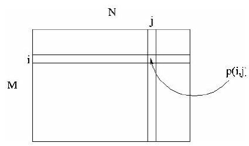
p(i,j) est le niveau de gris du pixel de coordonnées ligne i et colonne dans l'image. .
Les valeurs des niveaux de gris sont des entiers.
I.1.1. Image binaire
-
Une image binaire est une image où chaque point peut prendre uniquement la valeur 0 ou
-
Les pixels sont noirs (0) ou blancs (1).
-
Le niveau de gris est codé sur un bit (Binary digIT).
I.1.2. Image en niveaux de gris
-
Une image ne niveaux de gris autorise un dégradé de gris entre le noir et le blanc.
-
En général, on code le niveau de gris sur un octet ( 8 bits) soit 256 nuances de dégradé.
L'expression de la valeur du niveau de gris avec devient: .
-
Une image couleur est la composition de trois (ou plus) images en niveaux de gris sur trois (ou plus) composantes.
-
On définit donc trois plans de niveaux de gris, un rouge, un vert et un bleu.
-
La couleur finale est obtenue par synthèse additive des ces trois (ou plus) composantes.
 On a les relations sur les niveaux de gris: , .
On a les relations sur les niveaux de gris: , .
On voit bien sur la figure qu'une image couleur est en fait base.
I.2. Rappels sous Matlab :
-
Une image Matlab est une matrice bidimensionnelle de valeurs entières ou réelles.
-
Les principales fonctions de traitement d'images sous Matlab se trouvent dans la boîte à outils (toolbox) image processing (traitement d'images).
-
L'aide sur cette boîte à outils est obtenue en tapant help images en ligne de commande de Matlab.
-
Ensuite, l'aide sur une commande particulière est obtenue en tapant help suivi du nom de la commande, par exemple help edge.
Image display.
-
colorbar - Display colorbar (MATLAB Toolbox).
-
getimage - Get image data from axes.
-
image - Create and display image object (MATLAB Toolbox).
-
imagesc - Scale data and display as image (MATLAB Toolbox).
-
immovie - Make movie from multiframe indexed image.
-
imshow - Display image. montage - Display multiple image frames as rectangular montage.
-
subimage - Display multiple images in single figure.
-
truesize - Adjust display size of image.
-
warp - Display image as texture-mapped surface.
-
zoom - Zoom in and out of image or 2-D plot (MATLAB Toolbox).
Image file I/O.
-
imfinfo - Return information about image file (MATLAB Toolbox).
-
imread - Read image file (MATLAB Toolbox).
-
imwrite - Write image file (MATLAB Toolbox).
Geometric operations.
-
imcrop - Crop image.
-
imresize - Resize image.
-
imrotate - Rotate image.
-
interp2 - 2-D data interpolation (MATLAB Toolbox).
Pixel values and statistics.
-
corr2 - Compute 2-D correlation coefficient.
-
imcontour - Create contour plot of image data.
-
imfeature - Compute feature measurements for image regions.
-
imhist - Display histogram of image data.
-
impixel - Determine pixel color values.
-
improfile - Compute pixel-value cross-sections along line segments.
-
mean2 - Compute mean of matrix elements.
-
pixval - Display information about image pixels.
-
std2 - Compute standard deviation of matrix elements.
Image analysis.
-
edge - Find edges in intensity image.
-
qtdecomp - Perform quadtree decomposition.
-
qtgetblk - Get block values in quadtree decomposition. qtsetblk - Set block values in quadtree decomposition.
Image enhancement.
-
histeq - Enhance contrast using histogram equalization.
-
imadjust - Adjust image intensity values or colormap.
-
imnoise - Add noise to an image. medfilt2 - Perform 2-D median filtering.
-
ordfilt2 - Perform 2-D order-statistic filtering.
-
wiener2 - Perform 2-D adaptive noise-removal filtering.
Linear filtering.
-
conv2 - Perform 2-D convolution (MATLAB Toolbox).
-
convmtx2 - Compute 2-D convolution matrix. convn Perform N-D convolution (MATLAB Toolbox).
-
filter2 - Perform 2-D linear filtering (MATLABToolbox).
-
fspecial - Create predefined filters.
Linear 2-D filter design.
-
freqspace - Determine 2-D frequency response spacing (MATLABToolbox).
-
freqz2 - Compute 2-D frequency response.
-
fsamp2 - Design 2-D FIR filter using frequency sampling.
-
ftrans2 - Design 2-D FIR filter using frequency transformation.
-
fwind1 - Design 2-D FIR filter using 1-D window method.
-
fwind2 - Design 2-D FIR filter using 2-D window method.
Image transforms
-
dct2 - Compute 2-D discrete cosine transform.
-
dctmtx - Compute discrete cosine transform matrix.
-
fft2 - Compute 2-D fast Fourier transform (MATLAB Toolbox).
-
fftn - Compute N-D fast Fourier transform (MATLAB Toolbox).
-
fftshift - Reverse quadrants of output of FFT (MATLAB Toolbox).
-
idct2 - Compute 2-D inverse discrete cosine transform.
-
ifft2 - Compute 2-D inverse fast Fourier transform (MATLAB Toolbox).
-
ifftn - Compute N-D inverse fast Fourier transform (MATLAB Toolbox).
-
iradon - Compute inverse Radon transform. phantom - Generate a head phantom image.
-
radon - Compute Radon transform.
Neighborhood and block processing.
-
bestblk - Choose block size for block processing.
-
blkproc - Implement distinct block processing for image.
-
col2im - Rearrange matrix columns into blocks.
-
colfilt - Perform neighborhood operations using columnwise functions.
-
im2col - Rearrange image blocks into columns.
-
nlfilter - Perform general sliding-neighborhood operations.
Binary image operations.
-
applylut - Perform neighborhood operations using lookup tables.
-
bwarea - Compute area of objects in binary image.
-
bweuler - Compute Euler number of binary image.
-
bwfill - Fill background regions in binary image.
-
bwlabel - Label connected components in binary image.
-
bwmorph - Perform morphological operations on binary image.
-
bwperim - Determine perimeter of objects in binary image.
-
bwselect - Select objects in binary image.
-
dilate - Perform dilation on binary image.
-
erode - Perform erosion on binary image.
-
makelut - Construct lookup table for use with applylut.
Region-based processing.
-
roicolor - Select region of interest, based on color.
-
roifill - Smoothly interpolate within arbitrary region.
-
roifilt2 - Filter a region of interest.
-
roipoly - Select polygonal region of interest.
Colormap manipulation.
-
brighten - Brighten or darken colormap (MATLAB Toolbox).
-
cmpermute - Rearrange colors in colormap.
-
cmunique - Find unique colormap colors and corresponding image.
-
colormap - Set or get color lookup table (MATLAB Toolbox).
-
imapprox - Approximate indexed image by one with fewer colors.
-
rgbplot - Plot RGB colormap components (MATLAB Toolbox).
Color space conversions.
-
hsv2rgb - Convert HSV values to RGB color space (MATLAB Toolbox).
-
ntsc2rgb - Convert NTSC values to RGB color space.
-
rgb2hsv - Convert RGB values to HSV color space (MATLAB Toolbox).
-
rgb2ntsc - Convert RGB values to NTSC color space.
-
rgb2ycbcr - Convert RGB values to YCBCR color space.
-
ycbcr2rgb - ConvertYCBCR values to RGB color space.
Imager types and type conversions.
-
gray2ind - Convert intensity image to indexed image.
-
grayslice - Create indexed image from intensity image by thresholding.
-
im2bw - Convert image to binary image by thresholding.
-
im2double - Convert image array to double precision.
-
im2uint8 - Convert image array to 8-bit unsigned integers.
-
im2uint16 - Convert image array to 16-bit unsigned integers.
-
ind2gray - Convert indexed image to intensity image.
-
ind2rgb - Convert indexed image to RGB image (MATLAB Toolbox).
-
isbw - Return true for binary image.
-
isgray - Return true for intensity image.
-
isind - Return true for indexed image.
-
isrgb - Return true for RGB image.
-
mat2gray - Convert matrix to intensity image.
-
rgb2gray - Convert RGB image or colormap to grayscale.
-
rgb2ind - Convert RGB image to indexed image.
Demos.
-
dctdemo - 2-D DCT image compression demo.
-
edgedemo - Edge detection demo.
-
firdemo - 2-D FIR filtering and filter design demo.
-
imadjdemo - Intensity adjustment and histogram equalization demo.
-
nrfiltdemo - Noise reduction filtering demo.
-
qtdemo - Quadtree decomposition demo.
-
roidemo - Region-of-interest processing demo.
-
Comme on peut le constater, la boîte à outils images de Matlab contient de nombreuses fonctions qui permettent le développement facile et rapide d'algorithmes en fonction du problème à traiter.
-
C'est un très bon outil pour la validation de méthodes de traitement d'images appliquées à un problème particulier.
Lire et écrire des images sous Matlab
-
Matlab est capable de lire et de décoder les fichiers images JPEG, TIFF, BMP, PNG, HDF, PCX ou XWD.
-
Une image sous Matlab peut être représentée sous plusieurs formes, mais toujours sous forme d'une matrice. Avant de traiter une image dans Matlab, il faut la lire et décoder son format afin de la transformer en une matrice de valeurs.
-
L'exemple ci-dessous permet de lire une image au format TIFF, de la décoder dans la variable
imget de l'afficher à l'écran dans une figure.
La commande axis('image') rend l'image affichée carrée pour garder les proportions.
L'appel à axis on permet l'affichage des graduations des axes.
Enfin, colorbar affiche la barre des couleurs de l'image.
>> img =imread('saturn.tif');
>> figure;imshow(img);
>> axis('image');
>> axis on colorbar
- L'accès à une élément particulier d'une image est indexé par le nom et la position de cet élément.
Par exemple, si on conserve l'image img ci-dessus, on peut récupérer les valeurs ou les modifier aisément.
>> img(3,2)
>> img(1: 10,30: 40)
>> img(1: 3,31: 39)=0
>> figure;
imshow(img);
-
Matlab offre une possibilité intéressante, en effet, il est possible d'afficher plusieurs images dans la même figure.
-
Pour ce faire, il faut utiliser la commande subplot.
-
Elle s'utilise avec comme arguments le nombre de ligne, le nombre de colonnes et le numéro de l'image dans la figure.
-
Dans l'exemple ci-dessous on souhaite afficher deux images sur la même ligne dans une seule figure.
>> img=imread('blood1.tif');
>> img2=imread('alumgrns.tif');
>> figure;subplot(1,2,1);imshow(img);
>> subplot(1,2,2);imshow(img2); }
-
Afin de fermer une figure sous Matlab, on tape close s'il s'agit de la dernière figure ouverte ou bien close avec en paramètre le numéro de figure pour fermer la figure donnée en paramètres.
-
Pour fermer toutes les figures, on demande la fermeture avec le mot-clé all
>> img= imread('rice.tif');
>> img2 =imread('alumgrns.tif');
>> figure;imshow(img);
>> figure;imshow(img2);
>> close(1)
>> close all
- Pour sélectionner une figure, on demande l'affichage de celle-ci à l'aide de la commande figure qui prend en paramètre le numéro de la figure. Un exemple illustre ce cas ci-dessous.
>> figure(1)
- Matlab autorise l'exportation d'images sous divers formats: BMP, TIFF, EPS, PS...
La commande qui permet da sauvegarder une figure est print -dFORMAT fichier.
- Un exemple est donné ci-dessous.
Dans cet exemple, on affiche une image dans une figure et grâce à la commande print, on exporte le résultat dans le format JPEG avec pour nom de fichier result.jpg.
>> img =imread('rice.tif');
>> figure;imshow(img);
>> print -djpeg result.jpg
- Les valeurs des images lues sous Matlab sont entières, mais dans certaines circonstances, on a besoin de travailler sur des valeurs réelles.
La transformation pour passer d'entier à réel utilise la fonction im2double.
>> img=imread('rice.tif');
>> figure;imshow(img);
>> imgdbl=im2double(img);
>> figure;imshow(imgdbl);
>> imgint=im2uint8(imgdbl);
>> figure;imshow(imgint)
>> imwrite(imgint,'test.jpg','jpeg');
>> whos
Détection de contours
-
La détection de contours permet de repérer les différents objets qui constituent la scène de l'image.
-
Il existe de nombreuses méthodes pour trouver les contours des objets, la plupart sont basées sur les dérivées premières et secondes de l'image.
>> img = imread('rice.tif');
>> cont1 = edge(img,'prewitt');
>> cont2 = edge(img,'canny');
>> figure; imshow (img) ;
>> figure; imshow(cont1);
>> figure; imshow(cont2);
-
La détection de contours permet de repérer dans les images les objets qui s'y trouvent avant d'appliquer le traitement uniquement sur ces objets.
-
Pour mieux comprendre la notion de contour, il est possible de visualiser une image en 3D.
>> img=imread('rice.tif');
>> img=im 2double(img);
>> figure;mesh(img);
Histogramme-Seuillage
-
L'histogramme d'une image donne la répartition de ses niveaux de gris.
-
Ainsi pour une image qui possède 256 niveaux de gris, l'histogramme représente le niveau de gris en fonction du nombre de pixels à ce niveau de gris dans l'image.
>> img=imread( 'rice.tif');
>> histo =imhist(img, 256)$;
>> figure;plot(histo);
-
On sait que les niveaux de gris à zéro correspondent au noir et que les niveaux de gris à 1 indiquent le blanc.
-
L'histogramme donne donc une excellente idée de la séparation entre quelque chose qui est clair et quelque chose qui est foncé dans l'image.
-
Typiquement, une utilisation de ce fait est le seuillage d'une image, ce terme désigne la définition d'un seuil au-dessus ou endessous duquel on va garder certaines valeurs de niveaux de gris.
>> img =imread('saturn.tif');
>> figure;imshow(img);
>> img =im2double(img);
>> figure;subplot(1,2,1);imshow (img);
>> result=(img 2>0.5).*img;
>> subplot (1,2,2) ;
>> imshow(result);
Espace de couleurs
-
La couleur est une donnée importante pour une image, elle modifie la perception que l'on a de l'image.
-
L'espace de représentation standard décompose une image en trois plans de couleur: le rouge, le vert et le bleu - Red/Green/Blue RGB en anglais.
-
Les couleurs finales sont obtenues par synthèse additive de ces trois couleurs primaires.
Il existe cependant des problèmes qui peuvent nécessiter de changer d'espace de couleur pour percevoir différemment l'image.
- Il y a des images où la couleur importe peu, par exemple des photographies de cellules vivantes (pseudo-transparentes), des images radar, des images satellites...
Dans ce cas, l'espace RGB n'est plus utilisé.
On lui préfère d'autres espaces comme HSV Hue/Saturation/Value ou YCbCr Luminance/Chrominance bleue/Chrominance rouge.
>> img=imread('blood1.tif');
>> figure;imshow(img);
>> colorbar` colormap(hot);
>> colormap(hsv);
>> colormap(gray);
>> colormap(bone);
>> colormap(copper);
>> colormap(pink);
>> colormap(white);
>> help graph3d
- La boîte à outils images de Matlab gère les espaces de couleur RGB, HSV, YCbCr, NTSC.
Un exemple ci-dessous permet de se rendre compte de l'utilisation d'un changement d'espace de couleur.
- On lit une image colorée, on la passe dans l'espace HSV et on va changer la saturation avant de repasser dans l'espace RGB pour visualiser le résultat.
>> img=imread('flowers.tif');
>> figure;imshow(img);
>> imghsv $=rgb 2 hsv(img)$;
>> figure;imshow(imghsv);
>> imghsv(100: 200,300: 400,1)=0.7;
>> imgrgb $=hsv 2 rgb(imghsv)$;
>> figure;imshow(imgrgb);
>> imghsv $=rgb 2 hsv(img)$;
>> figure;imshow(imghsv);
>> imghsv(100: 200,300: 400,2)=0;
>> imgrgb $=hsv 2 rgb($ imghsv);
>> figure;imshow(imgrgb);
>> imghsv $=$ rgb2hsv $(img)$;
>> figure;imshow(imghsv);
>> imghsv(100: 200,300: 400,3)=0.3;
>> imgrgb $=hsv 2 rgb(imghsv)$;
>> figure;imshow(imgrgb);
- Une fonction utile à connaître est la fonction de passage d'une image couleur à une image en niveaux de gris.
Cette fonction rgb2gray permet d'obtenir une image en niveaux de gris en partant d'une image couleur.
Dans certains cas, cette transformation est très utile.
>> img=imread('blood1.tif');
>> figure;imshow(img)
>> nivgris=rgb2gray(img);
>> figure;imshow(nivgris);
Transformée de Fourier
-
La transformée de Fourier est un outil mathématique de traitement du signal qui permet de passer d'une représentation temporelle à une représentation fréquentielle du signal.
-
Cette théorie est basée sur le fait que toute fonction périodique est décomposable sur une base de sinus et de cosinus.
-
Ainsi, on peut passer d'une représentation temporelle du signal (dans le repère temporel classique) à une représentation en fréquence sur une base de sinus et de cosinus (dans le repère fréquentiel).
-
La puissance de cet outil réside dans le fait que cette transformée est réversible et qu'elle peut être étendue aux signaux non périodiques (qu'on considère alors comme de période infinie).
-
L'exemple ci-dessous transforme une image dans l'espace de Fourier, fait la transformation inverse pour voir si tout s'est bien passé (la transformée de Fourier est réversible).
Ensuite, le programme modifie les valeurs dans l'espace de Fourier et effectue la reconstruction avec cette fois une nette différence.
>>closeall
>>img=imread('blood1.tif');
>>img=im2double(img);
>>figure;subplot(1,3,1);imshow(img)
>>fourier=fft2(img);
>>subplot(1,3,2);imshow(real(fourier));
>>subplot(1,3,3);imshow(imag(fourier);
>>retour=ifft2(fourier);
>>figure;imshow(real(retour));
>>fourier(1:200,1:250)=0;
>>retour=ifft2(fourier);
>>figure;imshow(real(retour));
>>imgresult=abs(retour-img);
>>figure;mesh(imgresult);
Conclusion
-
Le traitement d'images permet de modifier le contenu des images afin de tirer l'information utile pour une application particulière.
-
Matlab offre de nombreuses possibilités de traitement avec une palette très fournie d'outils prêts à l'emploi.
-
L'inconvénient majeur de Matlab réside dans sa relative lenteur pour effectuer certaines opérations de calculs (par exemple la transformée de Fourier).
-
Toutefois Matlab permet de déployer rapidement des tests pour vérifier la validité d'une méthode de traitement d'images.
La manipulation d'images revient à la manipulation de matrices qui est très facile grâce au langage de haut niveau de Matlab
TRPM S3
-
- Cours:
- Exercices:
- Exposé
Sujet 2 : Équation de diffusion réaction + condition de Fourier
On s'intéresse au problème elliptique unidimensionnel suivant :
SOLUTION:
Pour résoudre le problème mathématique donné par la méthode des différences finies, on discrétise le domaine en un ensemble de points espacés uniformément avec un pas . On note l'approximation de où pour et .
Le schéma numérique pour l'équation différentielle avec les conditions aux limites données peut être formulé comme suit :
-
Discrétisation de l'équation différentielle : Pour , on remplace la dérivée seconde par une différence finie centrale : où est l'évaluation de au point .
-
Condition aux limites en : On a directement .
-
Condition aux limites en : La condition est discrétisée en utilisant une différence finie avant ou arrière pour . Par exemple, en utilisant une différence finie arrière :
Ensuite, on résout le système linéaire résultant pour obtenir les valeurs approchées aux points de la grille. Ce système peut être résolu par des méthodes directes ou itératives, selon la taille du système et les propriétés de la matrice.
Schema numérique
Pour résoudre l'équation de diffusion-réaction avec la condition de Fourier donnée dans l'image, on peut utiliser la méthode des différences finies. Voici les étapes de la résolution :
-
Discrétisation du domaine : On divise l'intervalle en sous-intervalles de taille , où pour .
-
Approximation des dérivées : On remplace la dérivée seconde par une différence finie centrale : pour , où est l'évaluation de au point .
-
Application des conditions aux limites :
- Pour , on a .
- Pour , on utilise la condition de Fourier . En utilisant une différence finie arrière pour , on obtient :
-
Assemblage du système linéaire : On forme un système linéaire où est une matrice tridiagonale résultant de la discrétisation, est le vecteur des inconnues , et est le vecteur résultant de l'évaluation de et des conditions aux limites.
-
Résolution du système linéaire : On résout le système linéaire pour obtenir les valeurs approchées aux points de la grille. Cela peut être fait à l'aide de méthodes directes (comme la décomposition LU) ou de méthodes itératives (comme la méthode de Gauss-Seidel ou la méthode du gradient conjugué).
-
Analyse des résultats : Après avoir résolu le système, on analyse les résultats pour s'assurer qu'ils sont physiquement raisonnables et qu'ils satisfont les conditions aux limites et l'équation différentielle à un degré acceptable d'approximation.
Il est important de noter que la précision de la solution numérique dépendra du choix de (le pas de discrétisation) et de la méthode de résolution du système linéaire. Des pas plus petits conduisent généralement à des solutions plus précises, mais augmentent la taille du système linéaire et donc le coût computationnel.
FOURIER MATRICES:
Pour former le système linéaire à partir de l'équation de diffusion-réaction avec la condition de Fourier donnée, on procède comme suit :
-
Discrétisation du domaine : On divise l'intervalle en points, ce qui donne intervalles internes de taille , où pour .
-
Construction de la matrice : La matrice est tridiagonale et de taille car on connaît les valeurs de aux bords. Les éléments de sont définis par :
- pour ,
- pour .
La condition de Fourier modifie la dernière ligne de la matrice :
- (comme avant),
- car on ajoute pour prendre en compte la dérivée .
-
Construction du vecteur : Le vecteur est de taille et contient les valeurs de la fonction aux points intérieurs , . La condition aux limites modifie le premier élément de :
- ,
- pour ,
- (la condition de Fourier est déjà prise en compte dans la matrice ).
-
Résolution du système linéaire : On résout ensuite le système pour obtenir les valeurs approchées aux points intérieurs du domaine.
En résumé, la matrice et le vecteur sont construits en tenant compte des conditions aux limites et de la condition de Fourier, et le système linéaire résultant est résolu pour obtenir la solution numérique de l'équation de diffusion-réaction.
MATLAB
To solve the linear system in MATLAB for the given problem with Fourier boundary conditions, you can use the following MATLAB code. This code assumes that you have already computed the values of at the grid points and stored them in a vector f. The constant c is also given, and the number of grid points N is set by the user.
% Define the number of grid points and calculate h
N = 10; % Example value, adjust as needed
h = 1/N;
% Define the constant c (example value, adjust as needed)
c = 1;
% Initialize the matrix A and vector F
A = zeros(N-1, N-1);
F = zeros(N-1, 1);
% Compute the vector F for the internal points
x = h:h:1-h; % Grid points from h to 1-h
f = sin(x) + x; % Define the function f(x) = sin(x) + x at the grid points
% Apply the boundary condition at x=0 to the first element of F
F(1) = f(1) - 1/h^2;
% Fill the matrix A using the discretized equations
for i = 1:N-1
A(i,i) = 2/h^2 + c;
if i > 1
A(i, i-1) = -1/h^2;
A(i-1, i) = -1/h^2;
end
end
% Modify the last row of A to account for the Fourier boundary condition at x=1
A(N-1, N-2) = -1/h^2; % This is the same as the internal points
A(N-1, N-1) = 2/h^2 + c - 1/h; % Adjusted for the boundary condition
% Solve the linear system AU = F
U = A\F;
% Add the boundary values to the solution vector
U = [1; U]; % u(0) = 1 is the boundary condition at x=0
% Display the solution
disp(U);
This code sets up and solves the linear system for the given problem. The solution vector U will contain the approximations to the function u(x) at the internal grid points, with the boundary value at x=0 prepended to the beginning of the vector. Adjust the number of grid points N and the constant c as needed for your specific problem.
EXERCICE 5 SERIE 1:
Exercice 5.
Soit un -espace de Hilbert de dimension quelconque et une famille de sous-espaces vectoriels fermés de constituant une somme Hilbertienne de . Pour tout on définit l'application par : .
Soit . Pour tout , posons .
-
Montrer que pour tout , on a .
-
En déduire que pour tout , on a .
-
Soit et .
(i) Montrer qu'il existe tel que .
(ii) Montrer qu'il existe tel que pour tout avec , on a .
- En déduire que
- Montrer que
CORRIGER:
Pour corriger les questions 1 et 2 de l'exercice, nous allons procéder étape par étape.
Question 1
On doit montrer que pour tout , on a .
Correction :
Puisque constitue une somme Hilbertienne, les sous-espaces sont deux à deux orthogonaux. Cela signifie que pour , est orthogonal à . Ainsi, est orthogonal à pour .
L'application est définie comme la somme des projections orthogonales sur les premiers sous-espaces . Donc, .
La norme au carré de dans un espace de Hilbert est égale à la somme des normes au carré des composantes orthogonales, donc :
Cela est dû au fait que les termes croisés dans l'expansion du carré de la norme sont nuls à cause de l'orthogonalité des .
Question 2
On doit déduire que pour tout , on a .
Correction :
D'après la question 1, nous avons que . Puisque est une somme Hilbertienne de , la somme des projections converge vers dans . Cela implique que la série des normes au carré converge et est bornée par , car c'est la norme au carré de la somme des projections orthogonales qui reconstituent .
Ainsi, pour tout , on a :
En prenant la racine carrée des deux côtés de l'inégalité, on obtient :
Cela montre que l'application est une contraction pour tout .
Pour corriger la question 3 de l'exercice, nous allons procéder étape par étape.
Question 3
(i) Montrer qu'il existe tel que .
(ii) Montrer qu'il existe tel que pour tout avec , on a .
Correction :
(i) Puisque est défini comme le sous-espace vectoriel engendré par l'union de tous les , et que constitue une somme Hilbertienne de , pour tout et pour tout , il existe une combinaison finie des qui approche à près. Cela est dû au fait que la somme des projections converge vers dans . Donc, il existe un tel que .
(ii) Puisque est une combinaison finie des éléments de , il existe un tel que pour tout , est déjà dans la somme des premiers , et donc . Cela signifie que est fixe par les applications pour assez grand, car est dans l'espace engendré par les premiers et est simplement la projection sur cet espace.
Question 4
On doit déduire que
Correction :
Pour démontrer cette égalité, nous allons utiliser les résultats des questions précédentes. D'après la question 3, pour tout , il existe et tels que :
- Pour tout ,
Maintenant, pour , nous avons :
Puisque pour , cela se simplifie en :
En utilisant la propriété de contraction de (question 2), nous obtenons :
Comme est arbitraire, cela implique que converge vers lorsque tend vers l'infini. De plus, puisque est la somme des projections , nous avons :
Question 5
Montrer que
Correction :
Nous savons déjà que converge vers et que d'après la question 1. Comme tend vers l'infini, la somme partielle tend vers la somme totale .
De plus, la convergence de vers dans un espace de Hilbert implique la convergence de la norme, c'est-à-dire :
En combinant ces résultats, nous obtenons :
Cela démontre que la norme au carré de est égale à la somme des normes au carré de ses composantes , ce qui est une propriété caractéristique des sommes Hilbertiennes.